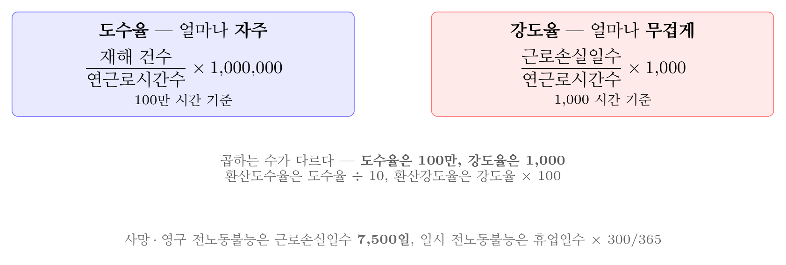
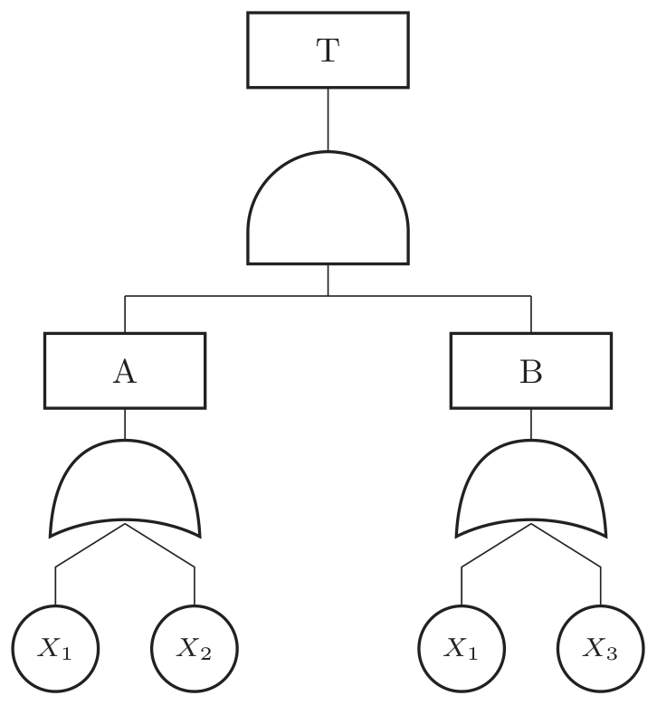
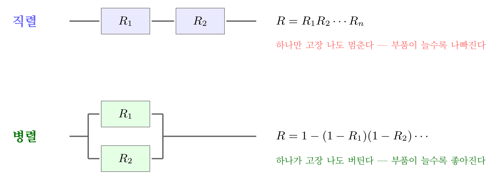
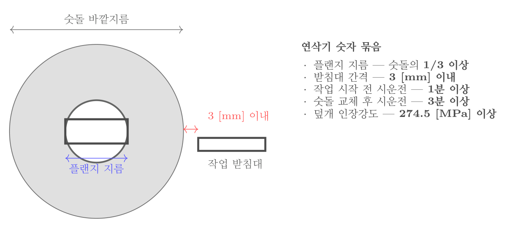
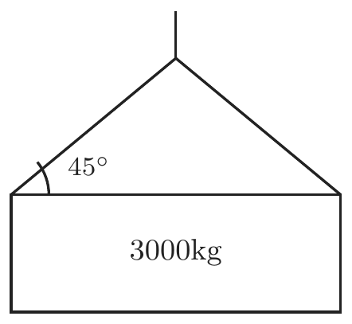
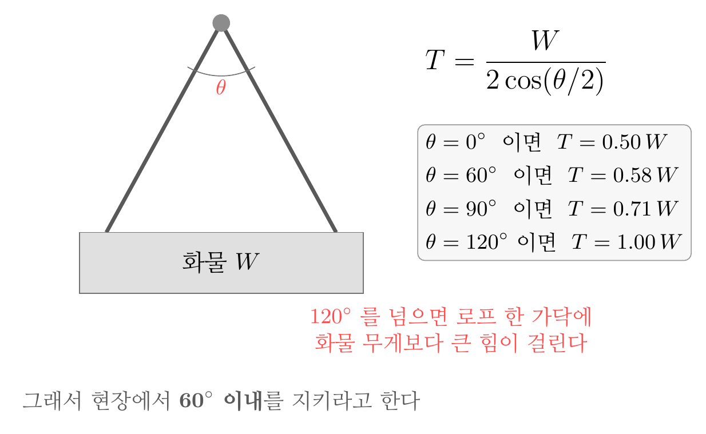
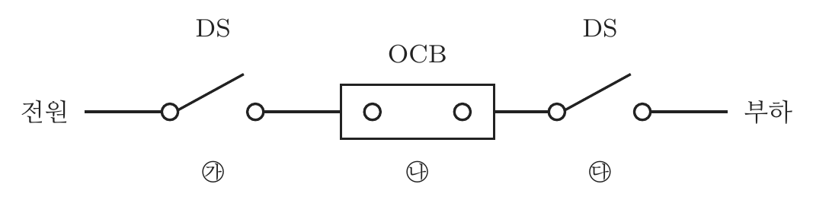

2025년 3회 · 산업안전기사 필기 CBT 기출 재배열 전사 검수본
지면(PDF)과 대조 검수용 · 수식은 KaTeX 렌더 · 총 문항
제1과목 안전관리론
001빈출도 ★☆☆난이도 3·어려움계산형safe_A_2025_03_001
1년간 80건의 재해가 발생한 A사업장은 1000명의 근로자가 1주일당 48시간, 1년간 52주를 근무하고 있다. A사업장의 도수율은? (단, 근로자들은 재해와 관련 없는 사유로 연간 노동시간의 3%를 결근하였다.)
① 31.06
② 32.05
③ 33.04
④ 34.03
정답: 3
해설
연근로시간은 $1 {,} 000 \times 48 \times 52 \times 0.97 = 2 {,} 421 {,} 120$ 시간이다. $\text{도수율} = \dfrac{80}{2 {,} 421 {,} 120} \times 10^{6} \fallingdotseq 33.04$다.

도수율과 강도율 — 곱하는 수가 다르다
오답 분석
① 31.06은 결근율을 잘못 잡았을 때 쪽이다.
② 32.05 도 계산과 맞지 않는다.
④ 34.03은 결근을 빼지 않았을 때에 가깝다.
관련 개념 · 암기
도수율(Frequency Rate)$\text{도수율} = \dfrac{\text{재해건수}}{\text{연근로시간}} \times 10^{6}$이다.
결근율 3 [%]를 빼야 하므로
0.97을 곱한다. 이 보정을 빼먹으면 34.03이 나와 함정에 걸린다.
◈ 암기 결근율을 빼고 100만을 곱한다.
🃏 관련 암기카드
분류: 재해조사 및 분석 > 재해율 계산 > 도수율 · 원본 2019.08.04
002빈출도 ★☆☆난이도 1·쉬움개념형safe_A_2025_03_002
적응기제(適應機制)의 형태 중 방어적 기제에 해당하지 않는 것은?
정답: 1
해설
고립은 도피적 기제다. 방어적 기제는 보상 · 합리화 · 승화 · 동일시 · 투사다.
적응기제의 세 갈래
| 갈래 | 무엇 | 보기 |
|---|
| 방어적 기제 | 열등감을 딴 것으로 메운다 | 보상 · 합리화 · 승화 · 동일시 · 투사 |
| 도피적 기제 | 상황에서 달아난다 | 고립 · 퇴행 · 억압 · 백일몽 |
| 공격적 기제 | 밖으로 터뜨린다 | 직접 공격(폭행·싸움) · 간접 공격(비난·조소) |
오답 분석
② 보상은 방어적 기제다.
③ 승화도 방어적 기제다.
④ 합리화도 방어적 기제다.
관련 개념 · 암기
적응기제(adjustment mechanism)세 갈래를
메운다(방어) · 달아난다(도피) · 터뜨린다(공격)로 새긴다.
「고립」은 사람들과 떨어지는 것이므로 달아나는 쪽이다.
◈ 암기 고립은 도피적 기제.
🃏 관련 암기카드
분류: — > — > 적응기제 · 원본 2019.08.04
003빈출도 ★☆☆난이도 2·보통개념형safe_A_2025_03_003
산업안전보건법령상 유해위험 방지계획서 제출 대상 공사에 해당하는 것은?
① 깊이가 5m 이상인 굴착공사
② 최대지간거리 30m 이상인 교량건설 공사
③ 지상 높이 21m 이상인 건축물 공사
④ 터널 건설 공사
정답: 4
해설
터널 건설공사는 규모를 가리지 않고 모두 제출 대상이다. 나머지 셋은 모두 기준에 못 미친다.
건설공사 유해위험방지계획서 제출 대상
| 공사 | 기준 | 보기의 값 |
|---|
| 건축물 · 인공구조물 | 지상높이 31 [m] 이상 | 21 [m]는 미달 |
| 다리 | 최대 지간길이 50 [m] 이상 | 30 [m]는 미달 |
| 터널 | 모든 터널 건설공사 | 규모 조건이 없다 |
| 굴착 | 깊이 10 [m] 이상 | 5 [m]는 미달 |
| 댐 | 저수용량 2천만 [t] 이상 | |
오답 분석
① 굴착공사는 깊이 10 [m] 이상이라야 한다.
② 교량은 최대 지간거리 50 [m] 이상이라야 한다.
③ 건축물은 지상 높이 31 [m] 이상이라야 한다.
관련 개념 · 암기
시행령 제42조 — 유해위험방지계획서 제출 대상 건설공사터널만 규모 조건이 없다. 터널은 어느 규모든 붕괴·질식 위험이 크기 때문이다. 나머지는
높이 31 · 지간 50 · 깊이 10이라는 숫자를 지킨다.
◈ 암기 터널은 무조건 제출.
⚖ 근거 법령 — 산업안전보건법 시행령 제42조산업안전보건법 시행령 시행 2026. 8. 1.
① 법 제42조제1항제1호에서 "대통령령으로 정하는 사업의 종류 및 규모에 해당하는 사업"이란 다음 각 호의 어느 하나에 해당하는 사업으로서 전기 계약용량이 300킬로와트 이상인 경우를 말한다.
1. 금속가공제품 제조업; 기계 및 가구 제외
2. 비금속 광물제품 제조업
3. 기타 기계 및 장비 제조업
4. 자동차 및 트레일러 제조업
5. 식료품 제조업
6. 고무제품 및 플라스틱제품 제조업
7. 목재 및 나무제품 제조업
8. 기타 제품 제조업
9. 1차 금속 제조업
10. 가구 제조업
11. 화학물질 및 화학제품 제조업
12. 반도체 제조업
13. 전자부품 제조업
② 법 제42조제1항제2호에서 "대통령령으로 정하는 기계ㆍ기구 및 설비"란 다음 각 호의 어느 하나에 해당하는 기계ㆍ기구 및 설비를 말한다. 이 경우 다음 각 호에 해당하는 기계ㆍ기구 및 설비의 구체적인 범위는 고용노동부장관이 정하여 고시한다. <개정 2021.11.19>
1. 금속이나 그 밖의 광물의 용해로
2. 화학설비
3. 건조설비
4. 가스집합 용접장치
5. 근로자의 건강에 상당한 장해를 일으킬 우려가 있는 물질로서 고용노동부령으로 정하는 물질의 밀폐ㆍ환기ㆍ배기를 위한 설비
6. 삭제<2021.11.19>
③ 법 제42조제1항제3호에서 "대통령령으로 정하는 크기 높이 등에 해당하는 건설공사"란 다음 각 호의 어느 하나에 해당하는 공사를 말한다.이 문항이 묻는 자리
1. 다음 각 목의 어느 하나에 해당하는 건축물 또는 시설 등의 건설ㆍ개조 또는 해체(이하 "건설등"이라 한다) 공사
가. 지상높이가 31미터 이상인 건축물 또는 인공구조물
나. 연면적 3만제곱미터 이상인 건축물
다. 연면적 5천제곱미터 이상인 시설로서 다음의 어느 하나에 해당하는 시설
1) 문화 및 집회시설(전시장 및 동물원ㆍ식물원은 제외한다)
2) 판매시설, 운수시설(고속철도의 역사 및 집배송시설은 제외한다)
3) 종교시설
4) 의료시설 중 종합병원
5) 숙박시설 중 관광숙박시설
6) 지하도상가
7) 냉동ㆍ냉장 창고시설
2. 연면적 5천제곱미터 이상인 냉동ㆍ냉장 창고시설의 설비공사 및 단열공사
3. 최대 지간(支間)길이(다리의 기둥과 기둥의 중심사이의 거리)가 50미터 이상인 다리의 건설등 공사
4. 터널의 건설등 공사
5. 다목적댐, 발전용댐, 저수용량 2천만톤 이상의 용수 전용 댐 및 지방상수도 전용 댐의 건설등 공사
6. 깊이 10미터 이상인 굴착공사
분류: 건설공사 안전개요 > 계획·관리비 > 유해위험방지계획서 · 원본 2019.08.04
004빈출도 ★☆☆난이도 2·보통개념형safe_A_2025_03_004
다음 중 산업안전심리의 5대 요소에 포함되지 않는 것은?
정답: 4
해설
지능은 5대 요소가 아니다. 다섯은 동기 · 기질 · 감정 · 습성 · 습관이다.
산업안전심리의 5대 요소
| 요소 | 무엇 | 비고 |
|---|
| 동기(Motive) | 행동을 일으키는 힘 | 목표를 향하게 한다 |
| 기질(Temper) | 타고난 성격 바탕 | 환경의 영향도 받는다 |
| 감정(Emotion) | 희로애락 | 순간적인 안전사고의 큰 원인 |
| 습성(Habits) | 오래 쌓인 성향 | |
| 습관(Custom) | 되풀이로 굳은 행동 | 동기·기질·감정·습성이 합쳐져 이룬다 |
오답 분석
① 습관은 5대 요소에 든다.
② 동기도 그렇다.
③ 감정도 그렇다.
관련 개념 · 암기
산업안전심리의 5대 요소다섯 가운데
습관이 나머지 넷의 결과다. 그래서 안전교육의 마지막이
태도교육(습관화)인 것과 이어진다.
◈ 암기 동 · 기 · 감 · 습성 · 습관 — 지능은 없다.
🃏 관련 암기카드
분류: — > — > 산업안전심리 · 원본 2019.04.27
005빈출도 ★☆☆난이도 2·보통개념형safe_A_2025_03_005
한 사람, 한 사람의 위험에 대한 감수성 향상을 도모하기 위하여 삼각 및 원 포인트 위험예지훈련을 통합한 활용기법은?
① 1인 위험예지훈련
② TBM 위험예지훈련
③ 자문자답 위험예지훈련
④ 시나리오 역할연기훈련
정답: 1
해설
1인 위험예지훈련이다. 삼각 위험예지훈련과 원포인트 위험예지훈련을 합쳐 혼자서도 할 수 있게 만든 기법이다.
위험예지훈련의 여러 기법
| 기법 | 어떻게 | 특징 |
|---|
| 기본 4라운드 | 현상파악 → 본질추구 → 대책수립 → 목표설정 | 팀 단위 · 10분 안팎 |
| 원포인트 위험예지 | 4라운드 가운데 한 가지만 골라 짧게 | 2~3분 |
| 삼각 위험예지 | 그림 대신 삼각형에 적어 가며 | 말이 서툰 사람도 |
| 1인 위험예지 | 삼각 + 원포인트를 합쳐 혼자서 | 감수성 향상 |
| TBM 위험예지 | 작업 전 5~15분 현장에서 | 5~7명 · 즉시 즉응 |
오답 분석
② TBM 위험예지훈련은 작업 전 현장에서 짧게 하는 팀 단위 기법이다.
③ 자문자답 위험예지훈련은 카드를 보며 스스로 묻고 답하는 기법이다.
④ 시나리오 역할연기훈련은 상황을 맡아 연기해 보는 기법이다.
관련 개념 · 암기
위험예지훈련의 기법기본은
4라운드(현상파악 · 본질추구 · 대책수립 · 목표설정)다. 나머지 기법은 모두
이것을 줄이거나 혼자 할 수 있게 바꾼 변형이다.
◈ 암기 삼각 + 원포인트 = 1인 위험예지.
🃏 관련 암기카드
분류: 무재해운동 > 무재해·위험예지 > 위험예지훈련 · 원본 2019.03.03
006빈출도 ★☆☆난이도 1·쉬움개념형safe_A_2025_03_006
산업안전보건법령상 유기화합물용 방독마스크의 시험가스로 옳지 않은 것은?
① 이소부탄
② 시클로헥산
③ 디메틸에테르
④ 염소가스 또는 증기
정답: 4
해설
염소가스는 할로겐용 정화통의 시험가스다. 유기화합물용이 아니다.
방독마스크 정화통의 시험가스와 표시색
| 종류 | 시험가스 | 표시색 |
|---|
| 유기화합물용 | 시클로헥산 · 디메틸에테르 · 이소부탄 | 갈색 |
| 할로겐용 | 염소가스 또는 증기 | 회색 |
| 황화수소용 | 황화수소가스 | 회색 |
| 시안화수소용 | 시안화수소가스 | 회색 |
| 아황산용 | 아황산가스 | 노란색 |
| 암모니아용 | 암모니아가스 | 녹색 |
오답 분석
① 이소부탄은 유기화합물용의 시험가스다.
② 시클로헥산도 그렇다.
③ 디메틸에테르도 그렇다.
관련 개념 · 암기
보호구 안전인증 고시 — 방독마스크의 시험가스유기화합물용만
시험가스가 셋이고 나머지는 각자 하나씩이다. 방독마스크는
산소농도 18 [%] 이상인 곳에서만 쓴다.
◈ 암기 유기화합물용은 시클로헥산 · 디메틸에테르 · 이소부탄.
🃏 관련 암기카드
분류: 보호구 > 호흡·눈·귀 > 방독마스크 · 원본 2019.04.27
007빈출도 ★☆☆난이도 1·쉬움개념형safe_A_2025_03_007
부주의의 발생 원인에 포함되지 않는 것은?
① 의식의 단절
② 의식의 우회
③ 의식수준의 저하
④ 의식의 지배
정답: 4
해설
「의식의 지배」라는 말은 쓰지 않는다. 다섯 가지는 의식의 단절 · 우회 · 과잉 · 혼란 · 수준의 저하다.
부주의의 발생 원인 다섯 가지
| 현상 | 무엇 | 보기 |
|---|
| 의식의 단절 | 의식의 흐름이 뚝 끊긴다 | 특수한 질병 · 실신 |
| 의식의 우회 | 딴 데로 흐른다 | 걱정 · 고민 · 욕구불만 |
| 의식수준의 저하 | 흐리멍덩해진다 | 단조로운 작업 · 피로 |
| 의식의 과잉 | 한 곳에만 쏠린다 | 긴급 상황에서 얼어붙음 |
| 의식의 혼란 | 자극이 뒤엉킨다 | 자극이 너무 많거나 약할 때 |
오답 분석
① 의식의 단절은 부주의의 원인이다.
② 의식의 우회도 그렇다.
③ 의식수준의 저하도 그렇다.
관련 개념 · 암기
부주의의 발생 원인의식의 과잉이 뜻밖의 항목이다. 주의가 모자라서만이 아니라
한 곳에 지나치게 쏠려도 부주의가 된다. 급한 상황에서 몸이 굳는 것이 그 예다.
◈ 암기 단절 · 우회 · 저하 · 과잉 · 혼란 다섯.
🃏 관련 암기카드
분류: 산업심리 > 부주의·착오 > 부주의 · 원본 2019.08.04
008빈출도 ★☆☆난이도 1·쉬움개념형safe_A_2025_03_008
스트레스의 요인 중 외부적 자극 요인에 해당하지 않는 것은?
① 자존심의 손상
② 대인관계 갈등
③ 가족의 죽음, 질병
④ 경제적 어려움
정답: 1
해설
자존심의 손상은 내부적 자극 요인이다. 마음 안에서 일어나는 일이다.
스트레스의 자극 요인
| 갈래 | 무엇 | 보기 |
|---|
| 외부적 자극 요인 | 밖에서 오는 것 | 직장에서의 대인관계 갈등 · 가족의 죽음과 질병 · 경제적 어려움 · 자신의 건강 문제 · 대인관계상의 갈등과 대립 |
| 내부적 자극 요인 | 마음 안에서 나는 것 | 자존심의 손상 · 업무상 죄책감 · 지나친 경쟁심과 욕심 · 남에게 의지하려는 심리 · 출세 욕구의 좌절 |
오답 분석
② 대인관계 갈등은 외부적 요인이다.
③ 가족의 죽음과 질병도 외부적 요인이다.
④ 경제적 어려움도 외부적 요인이다.
관련 개념 · 암기
스트레스의 자극 요인가르는 물음 —
밖에서 벌어진 일인가, 내 마음이 만든 것인가.
「자존심」·「죄책감」·「욕심」처럼 마음을 가리키는 말이 붙으면 내부 요인이다.
◈ 암기 자존심은 내 안의 문제.
🃏 관련 암기카드
분류: 산업심리 > 집단·리더십 > 스트레스 · 원본 2019.08.04
009빈출도 ★☆☆난이도 1·쉬움개념형safe_A_2025_03_009
다음 중 상황성 누발자의 재해유발원인으로 옳지 않은 것은?
① 작업의 난이성
② 기계설비의 결함
③ 도덕성의 결여
④ 심신의 근심
정답: 3
해설
도덕성의 결여는 소질성 누발자의 특징이다.
재해 누발자의 네 갈래
| 갈래 | 까닭 | 특징 |
|---|
| 미숙성 누발자 | 기능이 서툴다 | 신입 · 환경에 익숙하지 않다 |
| 상황성 누발자 | 상황이 나쁘다 | 작업의 난이성 · 기계설비 결함 · 심신의 근심 · 환경상 주의력 집중 곤란 |
| 습관성 누발자 | 경험이 남긴 습관 | 슬럼프 · 트라우마 |
| 소질성 누발자 | 타고난 소질 | 주의력 부족 · 도덕성 결여 · 감각운동 부적합 |
오답 분석
① 작업의 난이성은 상황성 누발자의 원인이다.
② 기계설비의 결함도 그렇다.
④ 심신의 근심도 그렇다.
관련 개념 · 암기
재해 누발자의 유형상황이 바뀌면 나아지는가로 가른다. 상황성은 상황을 고치면 낫고, 소질성은 사람 자체의 문제라 배치를 바꿔야 한다.
◈ 암기 상황성은 밖의 탓, 소질성은 안의 탓.
🃏 관련 암기카드
분류: 산업심리 > 적성·검사 > 재해 누발자 · 원본 2019.04.27
010빈출도 ★☆☆난이도 1·쉬움개념형safe_A_2025_03_010
라인(Line)형 안전관리조직에 대한 설명으로 옳은 것은?
① 명령계통과 조언이나 권고적 참여가 혼동되기 쉽다.
② 생산부서와의 마찰이 일어나기 쉽다.
③ 명령계통이 간단명료하다.
④ 생산부분에는 안전에 대한 책임과 권한이 없다.
정답: 3
해설
명령계통이 간단명료한 것이 라인형의 가장 큰 장점이다. 생산 계통을 그대로 타고 내려가기 때문이다.
안전관리 조직의 세 갈래
| 형태 | 규모 | 장점 | 단점 |
|---|
| 라인형 | 100명 미만 | 명령계통이 간단명료 · 지시가 빠르다 | 안전 지식과 기술이 쌓이지 않는다 |
| 스태프형 | 100~1,000명 | 전문 지식과 기술이 쌓인다 | 생산부서와 마찰 · 명령계통과 조언이 혼동되기 쉽다 |
| 라인·스태프형 | 1,000명 이상 | 둘의 장점을 함께 | 권한 다툼과 조정에 시간 |

안전관리 조직 세 갈래 — 규모가 커질수록 참모가 붙는다
오답 분석
① 명령계통과 조언이 혼동되기 쉬운 것은 스태프형·라인스태프형의 단점이다.
② 생산부서와의 마찰은 스태프형의 단점이다.
④ 라인형은 오히려 생산부문이 안전 책임과 권한을 함께 진다.
관련 개념 · 암기
안전관리 조직의 유형라인형은
생산선이 곧 안전선이라
생산부문이 안전 책임을 함께 진다. 보기 ④는 이 특징을 정반대로 적었다.
◈ 암기 라인형은 명령계통이 간단명료.
🃏 관련 암기카드
분류: 안전보건관리 체제 > 안전조직 > 안전관리 조직 · 원본 2019.08.04
011빈출도 ★☆☆난이도 2·보통개념형safe_A_2025_03_011
안전조직 중에서 라인-스탭(Line-Staff) 조직의 특징으로 옳지 않은 것은?
① 라인형과 스탭형의 장점을 취한 절충식 조직형태이다.
② 중규모 사업장(100명 이상 ~ 500명 미만)에 적합하다.
③ 라인의 관리, 감독자에게도 안전에 관한 책임과 권한이 부여된다.
④ 안전 활동과 생산업무가 분리될 가능성이 낮기 때문에 균형을 유지할 수 있다.
정답: 2
해설
라인·스태프형은 1,000명 이상의 대규모 사업장에 알맞다. 100~1,000명은 스태프형이다.
오답 분석
① 라인형과 스태프형의 장점을 취한 절충식인 것은 맞다.
③ 라인의 관리·감독자에게도 책임과 권한이 주어지는 것도 맞다.
④ 안전과 생산이 분리될 가능성이 낮아 균형을 유지하는 것도 맞다.
관련 개념 · 암기
라인·스태프형 안전관리 조직100명 · 1,000명 두 숫자가 경계다. 「중규모」·「500명」 같은 말이 나오면 대개 함정이다.
◈ 암기 라인·스태프는 1,000명 이상.
🃏 관련 암기카드
분류: 안전보건관리 체제 > 안전조직 > 안전관리 조직 · 원본 2019.04.27
012빈출도 ★☆☆난이도 2·보통개념형safe_A_2025_03_012
다음 중 안전ㆍ보건교육의 단계별 교육과정 순서로 옳은 것은?
① 안전 태도교육 → 안전 지식교육 → 안전 기능교육
② 안전 지식교육 → 안전 기능교육 → 안전 태도교육
③ 안전 기능교육 → 안전 지식교육 → 안전 태도교육
④ 안전 자세교육 → 안전 지식교육 → 안전 기능교육
정답: 2
해설
지식 → 기능 → 태도 순이다. 알고 · 할 수 있고 · 하게 된다는 흐름이다.
오답 분석
① 태도교육이 첫 단계일 수 없다.
③ 기능교육이 지식교육보다 앞설 수 없다.
④ 「안전 자세교육」이라는 단계는 없다.
관련 개념 · 암기
안전교육의 3단계먼저 알아야 할 수 있고, 할 수 있어야 습관이 된다. 이 순서는 뒤집을 수 없다. 태도교육의 4단계는
청취 → 이해·납득 → 모범 → 평가와 권장이다.
◈ 암기 지 · 기 · 태.
🃏 관련 암기카드
분류: 안전보건교육 > 교육계획·평가 > 안전교육 3단계 · 원본 2019.04.27
013빈출도 ★☆☆난이도 2·보통개념형safe_A_2025_03_013
교육훈련 방법 중 OJT(On the Job Training)의 특징으로 옳지 않은 것은?
① 동시에 다수의 근로자들을 조직적으로 훈련이 가능하다.
② 개개인에게 적절한 지도 훈련이 가능하다.
③ 훈련효과에 의해 상호 신뢰 및 이해도가 높아진다.
④ 직장의 실정에 맞게 실제적 훈련이 가능하다.
정답: 1
해설
다수를 동시에 조직적으로 가르치는 것은 Off.J.T의 장점이다.
O.J.T와 Off.J.T
| O.J.T | Off.J.T |
|---|
| 어디서 | 일하는 자리에서 | 일터를 떠나 한자리에 |
| 누가 가르치나 | 직속 상사 | 외부 전문가 |
| 인원 | 개별 · 소수 | 다수 동시 |
| 맞춤 | 개인과 직장 실정에 맞춘다 | 일률적 |
| 관계 | 상호 신뢰와 이해가 깊어진다 | |
| 시설·교재 | 제한적 | 전문 시설을 쓴다 |
오답 분석
② 개개인에게 맞춘 지도 훈련은 O.J.T의 장점이다.
③ 상호 신뢰와 이해가 깊어지는 것도 O.J.T다.
④ 직장 실정에 맞는 실제적 훈련도 O.J.T다.
관련 개념 · 암기
O.J.T(직장 내 교육)와 Off.J.T(직장 외 교육)「다수」·「전문가」·「전문 시설」이 보이면 Off.J.T다. 이 세 낱말만으로 대부분 갈린다.
◈ 암기 O.J.T는 개별·계속, Off.J.T는 다수·전문.
🃏 관련 암기카드
분류: 안전보건교육 > 교육 이론 > OJT와 Off JT · 원본 2019.04.27
014빈출도 ★☆☆난이도 2·보통개념형safe_A_2025_03_014
산업안전보건법령상 근로자 안전보건교육 중 작업내용 변경 시의 교육을 할 때 일용근로자를 제외한 근로자의 교육시간으로 옳은 것은?
① 1시간 이상
② 2시간 이상
③ 4시간 이상
④ 8시간 이상
정답: 2
해설
작업내용 변경 시 교육은 일용근로자 1시간 이상, 그 밖의 근로자 2시간 이상이다.
근로자 안전보건교육 시간
| 교육과정 | 대상 | 시간 |
|---|
| 정기교육 | 사무직 · 판매직 근로자 | 매반기 6시간 이상 |
| 그 밖의 근로자 | 매반기 12시간 이상 |
| 관리감독자 | 연간 16시간 이상 |
| 채용 시 교육 | 일용근로자 | 1시간 이상 |
| 그 밖의 근로자 | 8시간 이상 |
| 작업내용 변경 시 | 일용근로자 | 1시간 이상 |
| 그 밖의 근로자 | 2시간 이상 |
| 특별교육 | 그 밖의 근로자 | 16시간 이상 |
오답 분석
① 1시간 이상은 일용근로자의 기준이다.
③ 4시간 이상이라는 기준은 없다.
④ 8시간 이상은 채용 시 교육의 기준이다.
관련 개념 · 암기
시행규칙 별표4 — 안전보건교육 교육시간채용 시 8시간, 작업내용 변경 시 2시간으로 다르다.
처음 들어올 때가 가장 길고 , 하던 일을 바꿀 때는 짧다.
◈ 암기 채용 8, 변경 2, 특별 16.
⚠ 주의사항 2023. 9. 27. 시행규칙 개정으로 정기교육이 「매분기」에서 「매반기」로 바뀌었다(사무직 매반기 6시간, 그 밖의 근로자 매반기 12시간). 옛 기출의 「매분기 3시간·6시간」은 지금 기준이 아니다.
⚖ 근거 법령 — 산업안전보건법 시행규칙 별표 4산업안전보건법 시행규칙 시행 2026. 8. 1.
분류: 안전보건교육 > 법정 교육시간 > 법정 교육시간 · 원본 2019.04.27
015빈출도 ★★☆난이도 1·쉬움개념형safe_A_2025_03_015
제일선의 감독자를 교육대상으로 하고, 작업을 지도하는 방법, 작업개선방법 등의 주요 내용을 다루는 기업내 교육방법은?
정답: 1
해설
TWI(Training Within Industry)다. 제일선 감독자를 대상으로 하며 10시간(하루 2시간씩 5일) 과정이다.
기업 내 정형교육
| 과정 | 대상 | 시간 | 내용 |
|---|
| TWI | 제일선 감독자 | 10시간 | JIT(작업지도) · JMT(작업방법) · JRT(인간관계) · JST(작업안전) |
| MTP | 중간 관리층 | 40시간 | 관리의 기본 · 조직 운영 |
| ATT | 대상 제한 없음 | 1차 40시간 | 훈련받은 사람이 다시 강사가 된다 |
| CCS | 최고경영층 | 1주 4일, 4시간씩 | ATP 라고도 한다 |
| MTP | | | |
오답 분석
② MTP는 중간 관리층을 대상으로 하는 40시간 과정이다.
③ ATT는 훈련받은 사람이 다시 강사가 되는 방식이다.
④ CCS는 최고경영층을 대상으로 한다.
관련 개념 · 암기
기업 내 정형교육TWI의 네 과정 —
JIT(작업을 어떻게 가르치나) · JMT(작업을 어떻게 개선하나) · JRT(사람을 어떻게 다루나) · JST(안전을 어떻게 지키나). 문제에서
「지도하는 방법」과 「작업개선방법」을 든 것이 곧 JIT와 JMT다.
◈ 암기 제일선 감독자면 TWI.
🃏 관련 암기카드
분류: 안전보건교육 > 교육 이론 > 관리감독자 교육 · 원본 2013.08.18 · 2019.03.03
016빈출도 ★★☆난이도 1·쉬움개념형safe_A_2025_03_016
안전점검의 종류 중 태풍, 폭우 등에 의한 침수, 지진 등의 천재지변이 발생한 경우나 이상사태 발생시 관리자나 감독자가 기계, 기구, 설비 등의 기능상 이상 유무에 대하여 점검하는 것은?
① 일상점검
② 정기점검
③ 특별점검
④ 수시점검
정답: 3
해설
특별점검이다. 천재지변이나 이상사태가 났을 때하는 임시 점검이다.
안전점검의 종류
| 종류 | 언제 | 비고 |
|---|
| 일상점검(수시점검) | 작업 전·중·후에 날마다 | 작업자가 직접 |
| 정기점검(계획점검) | 일정 기간마다 정기적으로 | 월간 · 연간 |
| 특별점검 | 천재지변·이상사태 뒤 · 기계를 신설하거나 고친 뒤 · 오래 쓰지 않다가 다시 쓸 때 | 임시로 |
| 임시점검 | 이상을 발견했을 때 곧바로 | |
오답 분석
① 일상점검은 날마다 작업 전후에 하는 점검이다.
② 정기점검은 일정 기간마다 하는 점검이다.
④ 수시점검은 일상점검과 같은 말이다.
관련 개념 · 암기
안전점검의 종류「천재지변」·「이상사태」·「신설·개조 뒤」라는 말이 나오면 특별점검이다.
정기적이지 않은 임시 점검이라는 것이 핵심이다.
◈ 암기 천재지변 뒤면 특별점검.
🃏 관련 암기카드
분류: 안전점검·인증 > 안전점검 > 안전점검 · 원본 2018.04.28 · 2020.08.22
017빈출도 ★☆☆난이도 3·어려움계산형safe_A_2025_03_017
연천인율 45인 사업장의 도수율은 얼마인가?
① 10.8
② 18.75
③ 108
④ 187.5
정답: 2
해설
연천인율 = 도수율 × 2.4이므로 $\text{도수율} = 45 / 2.4 = 18.75$다.
오답 분석
① 10.8은 계산과 맞지 않는다.
③ 108은 자릿수가 어긋난다.
④ 187.5 도 어긋난다.
관련 개념 · 암기
연천인율과 도수율의 관계한 사람이
연간 2,400시간 일한다고 보면, $\text{연천인율} = \dfrac{\text{재해자수}}{\text{근로자수}} \times 1 {,} 000$과 $\text{도수율} = \dfrac{\text{재해건수}}{\text{연근로시간}} \times 10^{6}$ 사이에
2.4배의 관계가 나온다.
◈ 암기 연천인율 = 도수율 × 2.4.
🃏 관련 암기카드
분류: 재해조사 및 분석 > 재해율 계산 > 재해 지표 · 원본 2019.04.27
018빈출도 ★☆☆난이도 2·보통개념형safe_A_2025_03_018
다음 재해사례에서 기인물에 해당하는 것은?
기계작업에 배치된 작업자가 반장의 지시를 받기 전에 정지된 선반을 운전시키면서 변속치차의 덮개를 벗겨내고 치차를 저속으로 운전하면서 급유하려고 할 때 오른손이 변속치차에 맞물려 손가락이 절단되었다.
정답: 3
해설
기인물은 선반이다. 재해를 일으킨 설비 그 자체를 가리킨다. 손가락에 직접 닿은 변속치차는 가해물이다.
기인물과 가해물
| 기인물 | 가해물 |
|---|
| 뜻 | 재해를 일으킨 근원이 되는 기계·장치·환경 | 직접 사람에게 상처를 입힌 것 |
| 이 사례 | 선반 | 변속치차 |
| 보기 — 사다리에서 떨어져 바닥에 부딪힘 | 사다리 | 바닥 |
| 보기 — 크레인 짐이 떨어져 맞음 | 크레인 | 떨어진 짐 |
오답 분석
① 덮개는 벗겨 낸 방호장치일 뿐 기인물이 아니다.
② 급유는 작업 행위이지 물체가 아니다.
④ 변속치차는 직접 손을 다치게 한 가해물이다.
관련 개념 · 암기
기인물과 가해물기인물은 사고의 뿌리, 가해물은 상처를 낸 것이다. 둘이 같을 때도 있지만 이 사례처럼 다를 때가 많다.
「무엇을 다루다 났나」가 기인물, 「무엇에 다쳤나」가 가해물이다.
◈ 암기 뿌리는 기인물, 닿은 것은 가해물.
🃏 관련 암기카드
분류: 재해조사 및 분석 > 재해 발생 형태 > 재해 용어 · 원본 2019.03.03
019빈출도 ★☆☆난이도 2·보통개념형safe_A_2025_03_019
재해예방의 4원칙에 관한 설명으로 틀린 것은?
① 재해의 발생에는 반드시 원인이 존재한다.
② 재해의 발생과 손실의 발생은 우연적이다.
③ 재해를 예방할 수 있는 안전대책은 반드시 존재한다.
④ 재해는 원인 제거가 불가능하므로 예방만이 최선이다.
정답: 4
해설
원인 제거가 불가능하다는 말은 4원칙과 정면으로 어긋난다. 원인계기의 원칙은 원인이 반드시 있다고 보고, 예방가능의 원칙은 그 원인을 없애면 막을 수 있다고 본다.
재해예방의 4원칙
| 원칙 | 뜻 | 보기와의 대응 |
|---|
| 손실우연의 원칙 | 같은 사고라도 손실 크기는 우연 | ②가 이것 |
| 원인계기의 원칙 | 사고에는 반드시 원인이 있다 | ①이 이것 |
| 예방가능의 원칙 | 천재를 뺀 인재는 모두 막을 수 있다 | ④가 어긋난다 |
| 대책선정의 원칙 | 원인에 맞는 대책이 반드시 있다 | ③이 이것 |
오답 분석
① 재해에 반드시 원인이 있다는 것은 원인계기의 원칙이다.
② 발생과 손실이 우연적이라는 것은 손실우연의 원칙이다.
③ 예방할 수 있는 대책이 반드시 있다는 것은 대책선정의 원칙이다.
관련 개념 · 암기
재해예방의 4원칙예방가능의 원칙이 나머지 셋을 떠받친다. 막을 수 있다고 보아야 원인을 찾고 대책을 세울 이유가 생긴다.
「불가능」이라는 말이 보이면 오답이다.
◈ 암기 손 · 원 · 예 · 대.
🃏 관련 암기카드
분류: 재해조사 및 분석 > 재해 발생 이론 > 재해예방 4원칙 · 원본 2019.03.03
020빈출도 ★☆☆난이도 1·쉬움개념형safe_A_2025_03_020
사고의 원인분석방법에 해당하지 않는 것은?
① 통계적 원인분석
② 종합적 원인분석
③ 클로즈(close)분석
④ 관리도
정답: 2
해설
「종합적 원인분석」이라는 방법은 없다.
통계에 의한 재해 원인분석
| 방법 | 무엇을 보나 | 특징 |
|---|
| 파레토도 | 사고 유형·기인물을 큰 순서대로 | 중점 관리 대상을 찾는다 |
| 특성요인도 | 원인을 어골(魚骨) 모양으로 | 큰뼈 → 중간뼈 → 작은뼈 |
| 클로즈 분석 | 두 요인의 관계를 표로 | 서로 관련 있는지 본다 |
| 관리도 | 월별 재해 발생 추이 | 관리 상·하한선으로 이상 판정 |
오답 분석
① 통계적 원인분석은 원인분석의 큰 갈래다.
③ 클로즈 분석은 두 요인의 관계를 보는 방법이다.
④ 관리도는 재해 발생 추이를 보는 방법이다.
관련 개념 · 암기
통계에 의한 재해 원인분석네 방법을
무엇을 알고 싶은가로 가른다 —
어디부터 손댈까(파레토도) · 왜 났을까(특성요인도) · 둘이 관계있나(클로즈 분석) · 지금 이상한가(관리도).
◈ 암기 파레토 · 특성요인 · 클로즈 · 관리도 넷.
🃏 관련 암기카드
분류: 재해조사 및 분석 > 재해조사·통계 > 재해 통계 · 원본 2019.03.03
제2과목 인간공학 및 시스템안전공학
021빈출도 ★★★난이도 2·보통계산형safe_A_2025_03_021
다음 FT 도에서 최소컷셋(Minimal cut set)으로만 올바르게 나열한 것은?

① [X1]
② [X1], [X2]
③ [X1, X2, X3]
④ [X1, X2], [X1, X3]
정답: 1
해설
$T = A \cdot B = ( X_{1} + X_{2} ) ( X_{1} + X_{3} )$다. 전개하면 $X_{1} + X_{1} X_{3} + X_{1} X_{2} + X_{2} X_{3}$이고, $X_{1}$이 $X_{1} X_{2}$와 $X_{1} X_{3}$를 흡수하므로 $T = X_{1} + X_{2} X_{3}$다. 보기 가운데 최소 컷셋을 담은 것은 [X₁]뿐이다.

AND 아래 OR 둘 — 겹치는 사상이 나머지를 흡수한다
오답 분석
② [X₂] 만으로는 정상사상이 일어나지 않는다.
③ [X₁, X₂, X₃]는 최소가 아니다.
④ [X₁, X₂]와 [X₁, X₃]는 컷셋이지만 $X_{1}$에 흡수되어 최소가 아니다.
관련 개념 · 암기
최소 컷셋(Minimal Cut Set)부울대수의 흡수법칙 $A + AB = A$를 쓴다. 컷셋 가운데
다른 컷셋을 통째로 품고 있는 것은 최소가 아니다.
◈ 암기 작은 것이 큰 것을 흡수한다.
⚠ 주의사항 엄밀히 따지면 이 FT 도의 최소 컷셋은 [X₁]과 [X₂, X₃] 둘이다. 보기에 그 둘을 함께 담은 항목이 없어 [X₁] 만 든 ①이 정답으로 처리되었다. 계산은 $T = X_{1} + X_{2} X_{3}$까지 해 두고 보기를 고르는 것이 옳다.
🃏 관련 암기카드
분류: 결함수분석 > 컷셋·확률 > 최소 컷셋 · 원본 2013.06.02 · 2016.08.21 · 2019.08.04
022빈출도 ★☆☆난이도 1·쉬움개념형safe_A_2025_03_022
인간의 실수 중 수행해야 할 작업 및 단계를 생략하여 발생하는 오류는?
① omission error
② commission error
③ sequence error
④ timing error
정답: 1
해설
생략 오류(omission error)다. 해야 할 일을 빠뜨린 오류다.
스웨인의 휴먼에러 분류
| 이름 | 우리말 | 무엇인가 |
|---|
| omission error | 생략 오류 | 해야 할 일을 하지 않았다 |
| commission error | 작위 오류 | 했지만 잘못했다 |
| extraneous error | 과잉행동 오류 | 하지 않아도 될 일을 했다 |
| sequential error | 순서 오류 | 순서를 뒤바꿨다 |
| timing error | 시간 오류 | 너무 빠르거나 늦었다 |
오답 분석
② commission error는 했지만 잘못한 오류다.
③ sequence error는 순서를 뒤바꾼 오류다.
④ timing error는 너무 빠르거나 늦은 오류다.
관련 개념 · 암기
스웨인(Swain)의 휴먼에러 분류다섯을
안 했다 · 잘못했다 · 괜히 했다 · 순서를 바꿨다 · 때를 놓쳤다로 새기면 보기만 보고 고를 수 있다.
◈ 암기 생략 · 작위 · 과잉 · 순서 · 시간.
🃏 관련 암기카드
분류: 결함수분석 > FTA 기호·구조 > 휴먼에러 분류 · 원본 2019.08.04
023빈출도 ★☆☆난이도 1·쉬움개념형safe_A_2025_03_023
작업개선을 위하여 도입되는 원리인 ECRS에 포함되지 않는 것은?
① Combine
② Standard
③ Eliminate
④ Rearrange
정답: 2
해설
S는 Standard가 아니라 Simplify다.
작업개선의 원리 ECRS
| 글자 | 뜻 | 무엇을 묻나 |
|---|
| E — Eliminate | 없앤다 | 이 일이 꼭 필요한가 |
| C — Combine | 합친다 | 다른 일과 묶을 수 없나 |
| R — Rearrange | 순서를 바꾼다 | 순서를 바꾸면 나아지나 |
| S — Simplify | 단순하게 만든다 | 더 쉽게 할 수 없나 |
오답 분석
① Combine(합치기)은 ECRS의 하나다.
③ Eliminate(없애기)도 그렇다.
④ Rearrange(재배열)도 그렇다.
관련 개념 · 암기
작업개선의 원리 ECRS순서가 곧 우선순위다 —
없앨 수 있으면 없애는 것이 가장 낫고, 그다음이 합치기 · 순서 바꾸기 · 단순화다. 위험관리의 우선순위(제거 → 대체 → 공학적 → 관리적)와 같은 결이다.
◈ 암기 없애고 · 합치고 · 바꾸고 · 단순하게.
🃏 관련 암기카드
분류: 결함수분석 > FTA 기호·구조 > ECRS · 원본 2019.08.04
024빈출도 ★☆☆난이도 2·보통개념형safe_A_2025_03_024
아령을 사용하여 30분간 훈련한 후, 이두근의 근육 수축작용에 대한 전기적인 신호 데이터를 모았다. 이 데이터들을 이용하여 분석할 수 있는 것은 무엇인가?
① 근육의 질량과 밀도
② 근육의 활성도와 밀도
③ 근육의 피로도와 크기
④ 근육의 피로도와 활성도
정답: 4
해설
근전도(EMG)로 잴 수 있는 것은 근육의 활성도와 피로도다. 질량 · 밀도 · 크기는 전기신호로 알 수 없다.
오답 분석
① 질량과 밀도는 전기신호로 잴 수 없다.
② 밀도는 잴 수 없다.
③ 크기도 잴 수 없다.
관련 개념 · 암기
근전도(EMG, Electromyography)근육이 지치면
전기신호의 주파수가 낮은 쪽으로 옮겨 가고 진폭이 커진다. 이 변화를 읽어 피로도를 잰다.
국부 근육의 피로를 재는 대표 방법이다.
◈ 암기 근전도는 활성도와 피로도.
🃏 관련 암기카드
분류: — > — > 근전도 · 원본 2019.04.27
025빈출도 ★★☆난이도 1·쉬움개념형safe_A_2025_03_025
인간-기계시스템의 설계를 6단계로 구분할 때, 첫 번째 단계에서 시행하는 것은?
① 기본설계
② 시스템의 정의
③ 인터페이스 설계
④ 시스템의 목표와 성능명세 결정
정답: 4
해설
제1단계는 시스템의 목표와 성능명세 결정이다. 무엇을 이룰 것인지부터 정한다.
인간-기계 시스템의 설계 6단계
| 단계 | 이름 | 무엇을 하나 |
|---|
| 1 | 목표와 성능명세 결정 | 무엇을 이룰 것인가 |
| 2 | 시스템의 정의 | 어떤 기능이 필요한가 |
| 3 | 기본 설계 | 기능 할당 · 인간 성능 요건 명세 · 직무분석 · 작업 설계 |
| 4 | 인터페이스 설계 | 표시장치 · 조종장치 · 화면 |
| 5 | 촉진물 설계 | 지침서 · 매뉴얼 · 훈련 도구 |
| 6 | 시험 및 평가 | 실제로 되는지 확인 |
오답 분석
① 기본설계는 제3단계다.
② 시스템의 정의는 제2단계다.
③ 인터페이스 설계는 제4단계다.
관련 개념 · 암기
인간-기계 시스템의 설계 6단계목표 → 기능 → 배분 → 조작면 → 지원물 → 검증으로 흐른다. 어떤 설계든
「무엇을 이룰 것인가」에서 시작한다.
◈ 암기 1단계는 목표와 성능명세.
🃏 관련 암기카드
분류: 정보입력표시 > 표시장치·조종장치 > 인간-기계 시스템 설계 · 원본 2014.08.17 · 2019.03.03
026빈출도 ★☆☆난이도 1·쉬움개념형safe_A_2025_03_026
쾌적환경에서 추운환경으로 변화 시 신체의 조절작용이 아닌 것은?
① 피부온도가 내려간다.
② 직장온도가 약간 내려간다.
③ 몸이 떨리고 소름이 돋는다.
④ 피부를 경유하는 혈액 순환량이 감소한다.
정답: 2
해설
추워지면 직장(直腸)온도는 오히려 약간 올라간다. 몸이 심부 체온을 지키려고 피부 쪽 혈류를 줄이고 열을 안쪽에 가두기 때문이다.
추운 환경으로 갔을 때 몸의 반응
| 반응 | 방향 | 까닭 |
|---|
| 피부온도 | 내려간다 | 피부 혈관이 수축한다 |
| 직장(심부)온도 | 약간 올라간다 | 열을 안쪽에 가둔다 |
| 피부를 지나는 혈액량 | 줄어든다 | 열을 빼앗기지 않으려고 |
| 떨림 · 소름 | 나타난다 | 근육을 떨어 열을 만든다 |
| 화학적 대사 | 늘어난다 | 열 생산을 늘린다 |
오답 분석
① 피부온도가 내려가는 것은 맞다.
③ 몸이 떨리고 소름이 돋는 것도 맞다.
④ 피부를 지나는 혈액 순환량이 줄어드는 것도 맞다.
관련 개념 · 암기
한랭 환경에서의 생리적 조절더운 환경에서는 정반대다 — 피부온도가 오르고,
직장온도는 약간 내려가며, 피부 혈류가 늘고, 땀이 난다.
심부와 표면이 늘 반대로 움직인다는 것이 핵심이다.
◈ 암기 추우면 겉은 내려가고 속은 올라간다.
🃏 관련 암기카드
분류: — > — > 온열환경 적응 · 원본 2019.03.03
027빈출도 ★☆☆난이도 2·보통개념형safe_A_2025_03_027
음량수준을 측정할 수 있는 3가지 척도에 해당되지 않는 것은?
① sone
② 럭스
③ phon
④ 인식소음 수준
정답: 2
해설
럭스(lux)는 조도의 단위다. 소리와 무관하다.
음량 관련 척도와 조명 관련 단위
| 단위 | 무엇을 재나 | 비고 |
|---|
| phon | 감각적 크기 수준 | 1,000 [Hz] 순음의 dB 값 |
| sone | 느끼는 크기의 비율 | 40 [phon]이 1 [sone] |
| PNdB / PLdB | 인식소음 수준 | 항공기 소음 평가 |
| lux | 조도 | 단위면적당 도달하는 광속 |
| lumen | 광속 | 광원이 내는 빛의 양 |
| cd/m² | 휘도 | 보이는 밝기 |
오답 분석
① sone은 음량 척도다.
③ phon 도 음량 척도다.
④ 인식소음 수준(PNdB)도 음량 척도다.
관련 개념 · 암기
음량의 세 가지 척도세 척도 —
phon(수준) · sone(비율) · PNdB(인식소음).
조명 단위(lux · lumen · cd)를 끼워 넣는 것이 이 유형의 함정이다.
◈ 암기 럭스는 밝기 단위.
🃏 관련 암기카드
분류: — > — > 음량 척도 · 원본 2019.03.03
028빈출도 ★☆☆난이도 2·보통개념형safe_A_2025_03_028
FMEA의 장점이라 할 수 있는 것은?
① 분석방법에 대한 논리적 배경이 강하다.
② 물적, 인적요소 모두가 분석대상이 된다.
③ 서식이 간단하고 비교적 적은 노력으로 분석이 가능하다.
④ 두 가지 이상의 요소가 동시에 고장 나는 경우에도 분석이 용이하다.
정답: 3
해설
서식이 간단하고 적은 노력으로 할 수 있다는 것이 FMEA의 가장 큰 장점이다.
FMEA의 장단점
| 장점 | 단점 |
|---|
| 내용 | 서식이 간단하고 적은 노력으로 분석 | 논리적 배경이 약하다 |
| 부품 하나하나의 고장 영향을 빠짐없이 본다 | 두 가지 이상이 겹쳐 고장 나는 경우에 약하다 |
| 인적 요소는 분석 대상이 아니다 — 물적 요소만 |
오답 분석
① 논리적 배경이 강한 것은 FTA 쪽이다.
② FMEA는 물적 요소만 다루며 인적 요소는 대상이 아니다.
④ 두 가지 이상이 겹쳐 고장 나는 경우에는 오히려 약하다.
관련 개념 · 암기
FMEA의 장단점보기 ①②④가 모두
FMEA의 단점을 장점인 척 뒤집어 놓은 것이다.
논리적 배경 · 인적 요소 · 중복 고장 셋은 모두 FMEA가 못하는 일이다.
◈ 암기 간단한 것이 장점, 논리가 약한 것이 단점.
🃏 관련 암기카드
분류: 시스템 위험분석 > PHA·FHA·FMEA > FMEA · 원본 2019.03.03
029빈출도 ★☆☆난이도 2·보통공식형safe_A_2025_03_029
신호검출이론(SDT)에서 두 정규분포 곡선이 교차하는 부분에 판별기준이 놓였을 경우 Beta값으로 맞는 것은?
① Beta = 0
② Beta <1
③ Beta = 1
④ Beta >1
정답: 3
해설
$\beta$는 판별기준점에서 신호분포의 높이와 잡음분포의 높이의 비다. 두 곡선이 만나는 자리 에서는 두 높이가 같으므로 $\beta = 1$이다.
판별기준 $\beta$의 뜻
| $\beta$ | 기준의 위치 | 어떤 태도인가 |
|---|
| $\beta = 1$ | 두 곡선이 만나는 자리 | 중립 |
| $\beta < 1$ | 왼쪽으로 옮김 | 적극적 — 누락은 줄고 허위경보가 는다 |
| $\beta > 1$ | 오른쪽으로 옮김 | 보수적 — 허위경보는 줄고 누락이 는다 |
오답 분석
① $\beta = 0$은 나올 수 없는 값이다.
② $\beta < 1$은 기준을 왼쪽으로 옮겼을 때다.
④ $\beta > 1$은 기준을 오른쪽으로 옮겼을 때다.
관련 개념 · 암기
신호검출이론(SDT)의 판별기준누락과 허위경보를 동시에 줄일 수는 없다. 기준을 옮기면 한쪽이 줄고 다른 쪽이 는다. 화재감지기를 민감하게 할수록 오작동이 느는 것이 같은 이치다.
◈ 암기 두 곡선이 만나면 $\beta = 1$.
🃏 관련 암기카드
분류: 시스템 위험분석 > HAZOP·기타 > 신호검출이론 · 원본 2016.08.21
030빈출도 ★☆☆난이도 2·보통공식형safe_A_2025_03_030
FTA를 수행함에 있어 기본사상들의 발생이 서로 독립인가 아닌가의 여부를 파악하기 위해서는 어느 값을 계산해 보는 것이 가장 적합한가?
정답: 1
해설
공분산(covariance)이다. 두 사상이 함께 움직이는 정도를 나타내며, 독립이면 0이 된다.
오답 분석
② 분산은 한 변수가 흩어진 정도다.
③ 고장률은 단위시간당 고장이 나는 비율이다.
④ 발생확률은 한 사상이 일어날 확률이다.
관련 개념 · 암기
공분산과 독립성FTA의 확률 계산(
AND는 곱, OR는 $1 - \prod ( 1 - q )$)은
기본사상들이 서로 독립이라는 전제 위에서 성립한다. 독립이 아니면 그 식이 맞지 않으므로 먼저 확인해야 한다.
◈ 암기 독립이면 공분산이 0.
🃏 관련 암기카드
분류: 신뢰성 > 가용도·수리율 > FTA · 원본 2018.08.19
031빈출도 ★☆☆난이도 3·어려움계산형safe_A_2025_03_031
인간과 기계의 신뢰도가 인간 0.40, 기계 0.95인 경우, 병렬작업 시 전체 신뢰도는?
① 0.89
② 0.92
③ 0.95
④ 0.97
정답: 4
해설
병렬은 $R = 1 - ( 1 - 0.40 ) ( 1 - 0.95 ) = 1 - 0.60 \times 0.05 = 1 - 0.03 = 0.97$이다.

직렬과 병렬 — 하나만 고장 나도 멈추면 직렬이다
오답 분석
① 0.89는 계산과 맞지 않는다.
② 0.92 도 맞지 않는다.
③ 0.95는 기계 하나의 신뢰도다.
관련 개념 · 암기
병렬 신뢰도병렬은 가장 좋은 것보다 더 높아진다(0.97 > 0.95).
직렬은 가장 나쁜 것보다 더 낮아진다(0.40 × 0.95 = 0.38 < 0.40). 이 대비가 두 구조를 가른다.
◈ 암기 병렬은 1에서 고장확률의 곱을 뺀다.
🃏 관련 암기카드
분류: 신뢰성 > 신뢰도 계산 > 병렬 신뢰도 · 원본 2018.08.19
032빈출도 ★☆☆난이도 1·쉬움개념형safe_A_2025_03_032
인체에서 뼈의 주요 기능이 아닌 것은?
① 인체의 지주
② 장기의 보호
③ 골수의 조혈
④ 근육의 대사
정답: 4
해설
근육의 대사는 근육이 하는 일이지 뼈의 기능이 아니다.
뼈의 주요 기능
| 기능 | 무엇 | 비고 |
|---|
| 인체의 지주 | 몸을 떠받친다 | |
| 장기의 보호 | 머리뼈·갈비뼈가 속을 감싼다 | |
| 골수의 조혈 | 골수에서 피를 만든다 | |
| 무기질 저장 | 칼슘 · 인을 저장한다 | |
| 운동 | 근육이 붙어 지렛대 역할 | 근육의 대사와는 다르다 |
오답 분석
① 인체의 지주는 뼈의 기능이다.
② 장기의 보호도 그렇다.
③ 골수의 조혈도 그렇다.
관련 개념 · 암기
뼈의 기능뼈는
운동의 지렛대 역할을 하지만,
대사(에너지를 쓰는 일)는 근육이 한다. 보기 ④는 이 둘을 뒤섞었다.
◈ 암기 대사는 근육이 한다.
🃏 관련 암기카드
분류: 인간계측·작업공간 > 생리·에너지 > 인체의 구조 · 원본 2020.06.06
033빈출도 ★☆☆난이도 2·보통공식형safe_A_2025_03_033
작업의 강도는 에너지대사율(RMR)에 따라 분류된다. 분류 기간 중, 중(中)작업(보통작업)의 에너지 대사율은?
① 0~1RMR
② 2~4RMR
③ 4~7RMR
④ 7~9RMR
정답: 2
해설
중(中)작업, 곧 보통작업은 2 ~ 4 RMR이다.
에너지대사율(RMR)에 따른 작업강도
| 작업강도 | RMR | 보기 |
|---|
| 경(輕)작업 | 0 ~ 2 | 가벼운 작업 · 사무 |
| 중(中)작업(보통작업) | 2 ~ 4 | 이 문항 |
| 중(重)작업 | 4 ~ 7 | 무거운 작업 |
| 초중(超重)작업 | 7 이상 | 매우 무거운 작업 |
오답 분석
① 0~1 RMR은 경작업의 아래쪽이다.
③ 4~7 RMR은 중(重)작업이다.
④ 7~9 RMR은 초중작업 영역이다.
관련 개념 · 암기
에너지대사율(RMR)$\mathrm{RMR} = \dfrac{\text{작업 시 소비에너지} - \text{안정 시 소비에너지}}{\text{기초대사량}}$이다.
0 · 2 · 4 · 7이 경계값이며,
한자 中과 重이 다르다는 점에 주의한다.
◈ 암기 0-2-4-7 — 보통작업은 2~4.
🃏 관련 암기카드
분류: 인간계측·작업공간 > 생리·에너지 > 에너지대사율 · 원본 2019.08.04
034빈출도 ★☆☆난이도 2·보통개념형safe_A_2025_03_034
다음과 같은 실내 표면에서 일반적으로 추천반사율의 크기를 맞게 나열한 것은?
㉠ 바닥 ㉡ 천정 ㉢ 가구 ㉣ 벽
① ㉠＜㉣＜㉢＜㉡
② ㉣＜㉠＜㉡＜㉢
③ ㉠＜㉢＜㉣＜㉡
④ ㉣＜㉡＜㉠＜㉢
정답: 3
해설
바닥 < 가구 < 벽 < 천장이므로 ㉠ < ㉢ < ㉣ < ㉡이다. 위로 갈수록 밝게 한다.
실내 표면의 추천반사율
| 표면 | 추천반사율 | 까닭 |
|---|
| 천장 | 80 ~ 90 [%] | 가장 밝게 — 빛을 아래로 되돌린다 |
| 벽 | 40 ~ 60 [%] | |
| 가구 · 사무기기 | 25 ~ 45 [%] | |
| 바닥 | 20 ~ 40 [%] | 가장 어둡게 — 눈부심을 막는다 |
오답 분석
① ㉠(바닥)이 가장 낮고 ㉡(천장)이 가장 높아야 한다.
② ㉣(벽)이 가장 낮을 수 없다.
④ 순서가 크게 어긋난다.
관련 개념 · 암기
실내 표면의 추천반사율천장 → 벽 → 가구 → 바닥 순으로 낮아진다. 위쪽을 밝게 해야
빛이 아래로 고루 퍼지고 , 바닥이 너무 밝으면
반사 눈부심이 생긴다.
◈ 암기 위로 갈수록 밝게.
🃏 관련 암기카드
분류: 작업환경관리 > 온열·조명·진동 > 추천반사율 · 원본 2019.04.27
035빈출도 ★☆☆난이도 2·보통개념형safe_A_2025_03_035
일반적으로 기계가 인간보다 우월한 기능에 해당되는 것은? (단, 인공지능은 제외한다.)
① 귀납적으로 추리한다.
② 원칙을 적용하여 다양한 문제를 해결한다.
③ 다양한 경험을 토대로 하여 의사 결정을 한다.
④ 명시된 절차에 따라 신속하고, 정량적인 정보처리를 한다.
정답: 4
해설
정해진 절차를 빠르고 정확하게 되풀이하는 것은 기계가 압도적으로 낫다.
인간과 기계, 어느 쪽이 나은가
| 기능 | 인간 | 기계 |
|---|
| 귀납적 추리 · 일반화 | ○ | |
| 원칙을 적용해 문제 해결 | ○ | |
| 경험을 바탕으로 한 의사결정 | ○ | |
| 예기치 못한 사건의 감지 | ○ | |
| 명시된 절차의 신속·정량적 처리 | | ○ |
| 연역적 추리 | | ○ |
| 반복 작업의 신뢰성 | | ○ |
| 대량 정보의 보관 | | ○ |
오답 분석
① 귀납적 추리는 인간이 낫다.
② 원칙을 적용해 문제를 해결하는 것도 인간이 낫다.
③ 경험을 바탕으로 한 의사결정도 인간이 낫다.
관련 개념 · 암기
인간-기계 시스템의 기능 배분가르는 물음 —
처음 겪는 일을 다뤄야 하는가. 예상 밖의 상황을 판단하는 것은 사람,
정해진 것을 빠르고 정확히 되풀이하는 것은 기계다.
◈ 암기 사람은 귀납, 기계는 연역.
🃏 관련 암기카드
분류: 정보입력표시 > 표시장치·조종장치 > 인간-기계 기능 배분 · 원본 2018.08.19
036빈출도 ★☆☆난이도 2·보통개념형safe_A_2025_03_036
안전성 평가의 기본원칙 6단계에 해당되지 않는 것은?
① 안전대책
② 정성적 평가
③ 작업환경 평가
④ 관계 자료의 정비검토
정답: 3
해설
「작업환경 평가」라는 단계는 없다.
안전성 평가 6단계
| 단계 | 이름 | 무엇을 하나 |
|---|
| 1 | 관계 자료의 정비검토 | 설계도 · 공정도 · 물질 자료 |
| 2 | 정성적 평가 | 입지 조건 · 배치 · 건조물 · 소방설비 · 원재료 · 공정 |
| 3 | 정량적 평가 | 취급물질 · 용량 · 온도 · 압력 · 조작 |
| 4 | 안전대책 | 설비 대책과 관리 대책 |
| 5 | 재해정보에 의한 재평가 | 비슷한 사고 사례로 |
| 6 | FTA에 의한 재평가 | 등급 Ⅰ·Ⅱ 에 적용 |
오답 분석
① 안전대책은 제4단계다.
② 정성적 평가는 제2단계다.
④ 관계 자료의 정비검토는 제1단계다.
관련 개념 · 암기
화학설비의 안전성 평가 단계여섯 단계를
자료 → 정성 → 정량 → 대책 → 재평가 → 재평가로 새긴다.
뒤의 둘이 모두 재평가라는 점이 특징이다.
◈ 암기 자 · 정성 · 정량 · 대책 · 재 · 재.
🃏 관련 암기카드
분류: 정보입력표시 > 표시장치·조종장치 > 안전성 평가 · 원본 2018.08.19
037빈출도 ★☆☆난이도 1·쉬움개념형safe_A_2025_03_037
결함수분석법(FTA)의 특징으로 볼 수 없는 것은?
① Top Down 형식
② 특정사상에 대한 해석
③ 정성적 해석의 불가능
④ 논리기호를 사용한 해석
정답: 3
해설
FTA는 정성적 해석도 정량적 해석도 모두할 수 있다. 「정성적 해석이 불가능하다」는 틀렸다.
FTA의 특징
| 특징 | 비고 |
|---|
| Top Down 형식 | 정상사상에서 아래로 캐 내려간다 |
| 연역적 해석 | 결과에서 원인으로 |
| 특정 사상에 대한 해석 | 정상사상 하나를 정해 놓고 본다 |
| 논리기호를 사용 | AND · OR 게이트 |
| 정성적 · 정량적 해석이 모두 가능 | 「불가능」이 아니다 |
| 컴퓨터 처리가 가능 | |
오답 분석
① Top Down 형식인 것은 맞다.
② 특정 사상에 대한 해석인 것도 맞다.
④ 논리기호를 사용해 해석하는 것도 맞다.
관련 개념 · 암기
FTA의 특징FTA는 정량적 해석까지 되는 것이 강점이다. FMEA가 정성적에 머무는 것과 대비된다. 「불가능」이라는 말이 붙으면 대개 오답이다.
◈ 암기 FTA는 정성도 정량도 된다.
🃏 관련 암기카드
분류: 정보입력표시 > 표시장치·조종장치 > FTA의 특징 · 원본 2018.04.28
038빈출도 ★☆☆난이도 2·보통개념형safe_A_2025_03_038
음향기기 부품 생산공장에서 안전업무를 담당하는 OOO 대리는 공장 내부에 경보등을 설치하는 과정에서 도움이 될 만한 몇 가지 지식을 적용하고자 한다. 적용 지식 중 맞는 것은?
① 신호 대 배경의 휘도대비가 작을 때는 백색신호가 효과적이다.
② 광원의 노출시간이 1초보다 작으면 광속발산도는 작아야 한다.
③ 표적의 크기가 커짐에 따라 광도의 역치가 안정되는 노출시간은 증가한다.
④ 배경광 중 점멸 잡음광의 비율이 10%이상이면 점멸등은 사용하지 않는 것이 좋다.
정답: 4
해설
점멸 잡음광이 10 [%] 이상이면 점멸등을 쓰지 않는다. 배경에 깜박이는 빛이 많으면 경보등이 묻혀 알아볼 수 없기 때문이다.
오답 분석
① 휘도대비가 작을 때는 백색이 아니라 색광 신호가 낫다.
② 노출시간이 1초보다 짧으면 광속발산도를 오히려 크게 해야 알아본다.
③ 표적이 커지면 광도의 역치가 안정되는 노출시간은 오히려 짧아진다.
관련 개념 · 암기
경보등 설계의 원칙한 줄로 —
배경과 뚜렷이 구별되게 만든다. 배경이 밝으면 더 밝게, 배경이 깜박이면 점멸등을 피하고, 노출이 짧으면 더 세게 한다.
◈ 암기 배경이 깜박이면 점멸등을 쓰지 않는다.
🃏 관련 암기카드
분류: 정보입력표시 > 시각 > 경보등 설계 · 원본 2018.04.28
039빈출도 ★☆☆난이도 1·쉬움개념형safe_A_2025_03_039
인간이 기계화 비교하여 정보처리 및 결정의 측면에서 상대적으로 우수한 것은? (단, 인공지능은 제외한다.)
① 연역적 추리
② 정량적 정보처리
③ 관찰을 통한 일반화
④ 정보의 신속한 보관
정답: 3
해설
관찰을 통한 일반화(귀납적 추리)는 사람이 낫다. 나머지 셋은 모두 기계가 낫다.
오답 분석
① 연역적 추리는 기계가 낫다.
② 정량적 정보처리도 기계가 낫다.
④ 정보의 신속한 보관도 기계가 낫다.
관련 개념 · 암기
인간-기계 시스템의 기능 배분사람은 귀납(개별 사례에서 규칙을 뽑아냄), 기계는 연역(주어진 규칙을 적용)이다. 이 한 줄이 이 유형 문제를 거의 다 가른다.
◈ 암기 관찰해서 규칙을 뽑는 것은 사람.
🃏 관련 암기카드
분류: 정보입력표시 > 표시장치·조종장치 > 인간-기계 기능 배분 · 원본 2018.04.28
040빈출도 ★☆☆난이도 2·보통개념형safe_A_2025_03_040
A 회사에서는 새로운 기계를 설계하면서 레버를 위로 올리면 압력이 올라가도록 하고, 오른쪽 스위치를 눌렀을 때 오른쪽 전등이 커지도록 하였다면, 이것은 각각 어떤 유형의 양립성을 고려한 것인가?
① 레버 – 공간양립성, 스위치 - 개념양립성
② 레버 – 운동양립성, 스위치 - 개념양립성
③ 레버 – 개념양립성, 스위치 - 운동양립성
④ 레버 – 운동양립성, 스위치 - 공간양립성
정답: 4
해설
레버를 위로 올리면 올라간다는 것은 움직임의 방향이므로 운동 양립성, 오른쪽 스위치가 오른쪽 전등을 켜는 것은 배치이므로 공간 양립성이다.
양립성의 네 가지
| 종류 | 무엇이 맞는가 | 보기 |
|---|
| 공간적 양립성 | 배치 | 오른쪽 스위치 → 오른쪽 전등 · 오른쪽 버너는 오른쪽 손잡이 |
| 운동 양립성 | 움직임의 방향 | 레버를 올리면 압력이 오른다 · 시계 방향으로 돌리면 증가 |
| 개념적 양립성 | 뜻 | 빨강은 뜨거움, 파랑은 차가움 |
| 양식 양립성 | 감각의 종류 | 귀로 들으면 입으로 답한다 |

양립성 네 가지 — 어긋나면 급할 때 반드시 실수한다
오답 분석
① 레버는 배치가 아니라 움직임의 문제다.
② 스위치는 뜻이 아니라 배치의 문제다.
③ 레버와 스위치가 서로 바뀌었다.
관련 개념 · 암기
양립성의 네 가지가르는 물음 —
어디에 있는가(공간) · 어느 쪽으로 움직이는가(운동) · 무슨 뜻인가(개념) · 어느 감각인가(양식). 이 네 물음으로 갈린다.
◈ 암기 움직이면 운동, 자리면 공간.
🃏 관련 암기카드
분류: 정보입력표시 > 표시장치·조종장치 > 양립성 · 원본 2018.04.28
제3과목 기계위험방지기술
041빈출도 ★☆☆난이도 3·어려움계산형safe_A_2025_03_041
연삭기에서 숫돌의 바깥지름이 180mm일 경우 숫돌 고정용 평형플랜지의 지름으로 적합한 것은?
① 30mm 이상
② 40mm 이상
③ 50mm 이상
④ 60mm 이상
정답: 4
해설
평형플랜지의 지름은 숫돌 지름의 1/3 이상 이어야 한다. $180 / 3 = 60$ [mm]다.

연삭기의 숫자 묶음
오답 분석
① 30 [mm]는 1/6이라 기준에 못 미친다.
② 40 [mm] 도 못 미친다.
③ 50 [mm] 도 못 미친다.
관련 개념 · 암기
안전보건규칙 제120조 — 연삭숫돌의 플랜지플랜지가 작으면
숫돌을 잡아 주는 면이 좁아 깨지기 쉽다. 연삭기의 숫자 —
플랜지 1/3 이상 · 덮개는 지름 5 [cm] 이상인 숫돌에 · 작업 전 1분, 교체 후 3분 시운전.
◈ 암기 숫돌 지름의 1/3 이상.
⚖ 근거 법령 — 산업안전보건기준에 관한 규칙 제120조산업안전보건기준에 관한 규칙 시행 2026. 3. 2.
제120조(최고사용압력의 표시 등) 사업주는 압력용기등을 식별할 수 있도록 하기 위하여 그 압력용기등의 최고사용압력, 제조연월일, 제조회사명 등이 지워지지 않도록 각인(刻印) 표시된 것을 사용하여야 한다.
분류: 공작기계 > 연삭기 > 연삭기 플랜지 · 원본 2019.08.04
042빈출도 ★☆☆난이도 2·보통개념형safe_A_2025_03_042
밀링작업의 안전조치에 대한 설명으로 적절하지 않은 것은?
① 절삭 중의 칩 제거는 칩 브레이커로 한다.
② 공작물을 고정할 때에는 기계를 정지시킨 후 작업한다.
③ 강력절삭을 할 경우에는 공작물을 바이스에 깊게 물려 작업한다.
④ 가공 중 공작물의 치수를 측정할 때에는 기계를 정지시킨 후 측정한다.
정답: 1
해설
칩 브레이커는 선반의 바이트에 달린 것이다. 밀링의 칩은 기계를 세운 뒤 브러시로 치운다.
오답 분석
② 공작물 고정은 기계를 정지시킨 뒤 한다.
③ 강력절삭 시 공작물을 바이스에 깊게 문다.
④ 치수 측정도 기계를 정지시킨 뒤 한다.
관련 개념 · 암기
밀링 작업의 안전수칙칩 브레이커는 선반, 브러시는 공통이다. 밀링 커터는
절단점을 만들고 회전하므로
장갑 금지 · 정지 후 작업이 대원칙이다.
◈ 암기 칩 브레이커는 선반 것.
🃏 관련 암기카드
분류: 공작기계 > 선반·밀링·드릴 > 밀링 작업 · 원본 2019.08.04
043빈출도 ★★☆난이도 3·어려움계산형safe_A_2025_03_043
회전수가 300rpm, 연삭숫돌의 지름이 200mm일 때 숫돌의 원주 속도는 약 몇 m/min인가?
① 60.0
② 94.2
③ 150.0
④ 188.5
정답: 4
해설
$V = \pi D N = \pi \times 0.2 \times 300 \fallingdotseq 188.5$ [m/min]이다.
오답 분석
① 60.0은 $\pi$를 곱하지 않았을 때 쪽이다.
② 94.2는 반지름을 썼을 때 나온다.
③ 150.0 도 계산과 맞지 않는다.
관련 개념 · 암기
원주속도 $V = \pi D N$[m/min] 이면 D를 [m]로,
[m/s] 면 $\pi D N / 60$이다.
반지름이 아니라 지름을 쓴다는 것도 실수하기 쉬운 자리다.
◈ 암기 지름을 미터로 바꿔 $\pi$와 회전수를 곱한다.
🃏 관련 암기카드
분류: 공작기계 > 연삭기 > 원주속도 · 원본 2014.03.02 · 2019.04.27
044빈출도 ★☆☆난이도 2·보통개념형safe_A_2025_03_044
다음 중 기계설비의 정비ㆍ청소ㆍ급유ㆍ검사ㆍ수리 등의 작업 시 근로자가 위험해질 우려가 있는 경우 필요한 조치와 거리가 먼 것은?
① 근로자의 위험방지를 위하여 해당 기계를 정지시킨다.
② 작업지휘자를 배치하여 갑작스러운 기계가동에 대비한다.
③ 기계 내부에 압출된 기체나 액체가 불시에 방출될 수 있는 경우에는 사전에 방출조치를 실시한다.
④ 기계 운전을 정지한 경우에는 기동장치에 잠금장치를 하고 다른 작업자가 그 기계를 임의 조작할 수 있도록 열쇠를 찾기 쉬운 곳에 보관한다.
정답: 4
해설
열쇠는 그 작업을 하는 사람이 직접 지녀야 한다. 찾기 쉬운 곳에 두면 잠금장치를 단 뜻이 사라진다.
오답 분석
① 작업 중에는 기계를 정지시킨다.
② 작업지휘자를 배치해 갑작스러운 가동에 대비한다.
③ 잔압이나 잔류 액체는 미리 빼낸다.
관련 개념 · 암기
안전보건규칙 제92조 — 정비 등의 작업 시의 운전정지LOTO(Lock Out, Tag Out)의 핵심은
잠그고 · 표찰을 붙이고 · 열쇠는 작업자가 지닌다 세 가지다. 열쇠를 남이 만질 수 있으면 잠금이 아니다.
◈ 암기 열쇠는 작업자가 직접 지닌다.
⚖ 근거 법령 — 산업안전보건기준에 관한 규칙 제92조산업안전보건기준에 관한 규칙 시행 2026. 3. 2.
① 사업주는 동력으로 작동되는 기계의 정비ㆍ청소ㆍ급유ㆍ검사ㆍ수리ㆍ교체 또는 조정 작업 또는 그 밖에 이와 유사한 작업을 할 때에 근로자가 위험해질 우려가 있으면 해당 기계의 운전을 정지하여야 한다. 다만, 덮개가 설치되어 있는 등 기계의 구조상 근로자가 위험해질 우려가 없는 경우에는 그렇지 않다. <개정 2024.6.28>
② 사업주는 제1항에 따라 기계의 운전을 정지한 경우에 다른 사람이 그 기계를 운전하는 것을 방지하기 위하여 기계의 기동장치에 잠금장치를 하고 그 열쇠를 별도 관리하거나 표지판을 설치하는 등 필요한 방호 조치를 하여야 한다.이 문항이 묻는 자리
③ 사업주는 작업하는 과정에서 적절하지 아니한 작업방법으로 인하여 기계가 갑자기 가동될 우려가 있는 경우 작업지휘자를 배치하는 등 필요한 조치를 하여야 한다.
④ 사업주는 기계ㆍ기구 및 설비 등의 내부에 압축된 기체 또는 액체 등이 방출되어 근로자가 위험해질 우려가 있는 경우에 제1항부터 제3항까지의 규정 따른 조치 외에도 압축된 기체 또는 액체 등을 미리 방출시키는 등 위험 방지를 위하여 필요한 조치를 하여야 한다.
분류: 기계 일반 > 소성가공 > 정비 시 안전조치 · 원본 2019.04.27
045빈출도 ★★☆난이도 1·쉬움개념형safe_A_2025_03_045
재료의 강도시험 중 항복점을 알 수 있는 시험의 종류는?
① 비파괴시험
② 충격시험
③ 인장시험
④ 피로시험
정답: 3
해설
인장시험이다. 시편을 잡아당기며 응력-변형률 선도를 그리면 비례한도 · 탄성한도 · 항복점 · 인장강도 · 파단점을 모두 읽을 수 있다.
오답 분석
① 비파괴시험은 결함을 찾는 시험이지 강도를 재지 않는다.
② 충격시험(샤르피)은 인성을 잰다.
④ 피로시험은 반복 하중에 견디는 횟수를 잰다.
관련 개념 · 암기
인장시험과 응력-변형률 선도항복점은
하중을 더 늘리지 않아도 변형이 계속 늘어나기 시작하는 점이다. 이 점을 넘으면 힘을 빼도 원래대로 돌아가지 않는다(소성변형).
◈ 암기 항복점은 인장시험으로.
🃏 관련 암기카드
분류: 기계 일반 > 재료·강도시험 > 재료시험 · 원본 2012.03.04 · 2019.03.03
046빈출도 ★★☆난이도 1·쉬움개념형safe_A_2025_03_046
다음 중 프레스를 제외한 사출성형기·주형조형기 및 형단조기 등에 관한 안전조치 사항으로 틀린 것은?
① 근로자의 신체 일부가 말려들어갈 우려가 있는 경우에는 양수조작식 방호장치를 설치하여 사용한다.
② 게이트가드식 방호장치를 설치할 경우에는 연동구조를 적용하여 문을 닫지 않아도 동작할 수 있도록 한다.
③ 사출성형기의 전면에 작업용 발판을 설치할 경우 근로자가 쉽게 미끄러지지 않는 구조여야 한다.
④ 기계의 히터 등의 가열부위, 감전우려가 있는 부위에는 방호덮개를 설치하여 사용한다.
정답: 2
해설
게이트 가드식은 문을 닫아야 비로소 기계가 움직이는 연동구조라야 한다. 「문을 닫지 않아도 동작」은 정반대다.
오답 분석
① 말려들 우려가 있으면 양수조작식 방호장치를 쓴다.
③ 작업용 발판은 미끄러지지 않는 구조라야 한다.
④ 가열부위와 감전 우려 부위에는 방호덮개를 씌운다.
관련 개념 · 암기
안전보건규칙 제121조 — 사출성형기 등의 방호장치연동(interlock)은
문이 닫혀야 작동하고, 열리면 멈추는 구조다. 「닫지 않아도 동작한다」면 연동이 아니라 그냥 문이 달린 것일 뿐이다.
◈ 암기 문이 닫혀야 움직인다.
⚖ 근거 법령 — 산업안전보건기준에 관한 규칙 제121조산업안전보건기준에 관한 규칙 시행 2026. 3. 2.
① 사업주는 사출성형기(射出成形機)ㆍ주형조형기(鑄型造形機) 및 형단조기(프레스등은 제외한다) 등에 근로자의 신체 일부가 말려들어갈 우려가 있는 경우 게이트가드(gate guard) 또는 양수조작식 등에 의한 방호장치, 그 밖에 필요한 방호 조치를 하여야 한다.
② 제1항의 게이트가드는 닫지 아니하면 기계가 작동되지 아니하는 연동구조(連動構造)여야 한다.이 문항이 묻는 자리
③ 사업주는 제1항에 따른 기계의 히터 등의 가열 부위 또는 감전 우려가 있는 부위에는 방호덮개를 설치하는 등 필요한 안전 조치를 하여야 한다.
분류: 기계 일반 > 소성가공 > 사출성형기 · 원본 2015.05.31 · 2019.03.03
047빈출도 ★★☆난이도 1·쉬움개념형safe_A_2025_03_047
다음 중 공장 소음에 대한 방지계획에 있어 소음원에 대한 대책에 해당하지 않는 것은?
① 해당 설비의 밀폐
② 설비실의 차음벽 시공
③ 작업자의 보호구 착용
④ 소음기 및 흡음장치 설치
정답: 3
해설
보호구 착용은 수음자(사람) 대책이다. 소음원 대책이 아니다.
소음 대책의 우선순위
| 순위 | 대책 | 보기 |
|---|
| 1 | 음원 대책 | 설비 밀폐 · 차음벽 · 소음기와 흡음장치 · 저소음 기계로 교체 |
| 2 | 전파경로 대책 | 거리 두기 · 차폐물 · 지향성 조절 |
| 3 | 수음자 대책 | 귀마개 · 귀덮개 · 작업시간 단축 |
오답 분석
① 설비의 밀폐는 소음원 대책이다.
② 차음벽 시공도 소음원 대책이다.
④ 소음기와 흡음장치 설치도 소음원 대책이다.
관련 개념 · 암기
소음의 방지대책보호구는 언제나 마지막이다. 위험관리의 우선순위(제거 → 공학적 → 관리적 → 보호구)와 같은 논리다.
◈ 암기 보호구는 사람 쪽 대책.
🃏 관련 암기카드
분류: 기계 일반 > 소음·진동 > 소음 대책 · 원본 2015.08.16 · 2019.03.03
048빈출도 ★☆☆난이도 3·어려움계산형safe_A_2025_03_048
프레스기의 비상정지스위치 작동 후 슬라이드가 하사점까지 도달시간이 0.15초 걸렸다면 양수기동식 방호장치의 안전거리는 최소 몇 cm 이상이어야 하는가?
정답: 1
해설
$D_{m} = 1 {,} 600 \times T_{m} = 1 {,} 600 \times 0.15 = 240$ [mm] = 24 [cm]다.
오답 분석
② 240은 [mm] 값이지 [cm]가 아니다.
③ 15 [cm]는 계산과 맞지 않는다.
④ 150 [cm] 도 맞지 않는다.
관련 개념 · 암기
양수기동식 방호장치의 안전거리답은 [mm]로 나오므로 물음의 단위를 확인해야 한다. 이 문항은 [cm]를 물었으므로 10으로 나눈다.
240 [mm]와 24 [cm]를 나란히 보기에 둔 것이 함정이다.
◈ 암기 1,600 × 시간 = [mm] — 단위를 맞춘다.
🃏 관련 암기카드
분류: 기계 일반 > 위험점·방호 > 양수기동식 안전거리 · 원본 2019.03.03
049빈출도 ★☆☆난이도 3·어려움계산형safe_A_2025_03_049
어떤 양중기에서 3000kg의 질량을 가진 물체를 한쪽이 45°인 각도로 그림과 같이 2개의 와이어로프로 직접 들어올릴 때, 안전율이 고려된 가장 적절한 와이어로프 지름을 표에서 구하면?(단, 안전율은 산업안전보건법령을 따르고, 두 와이어로프의 지름은 동일하며, 기준을 만족하는 가장 작은 지름을 선정한다.)
< 와이어로프 지름 및 절단강도 >
10 [mm] — 56 [kN] 12 [mm] — 88 [kN]
14 [mm] — 110 [kN] 16 [mm] — 144 [kN]

① 10mm
② 12mm
③ 14mm
④ 16mm
정답: 3
해설
전체 하중은 $3 {,} 000 \times 9.8 = 29.4$ [kN]이고, 로프 하나의 장력은 $T = \dfrac{29.4}{2 \cos 45 ^{\circ}} \fallingdotseq 20.79$ [kN]이다. 안전계수 5를 곱하면 필요 절단강도가 $104$ [kN]이므로, 이를 넘는 가장 작은 110 [kN] · 14 [mm]를 고른다.

줄걸이 각도와 장력 — 벌어질수록 로프에 걸리는 힘이 커진다
오답 분석
① 10 [mm](56 [kN])는 필요 강도에 크게 못 미친다.
② 12 [mm](88 [kN])도 104 [kN]에 못 미친다.
④ 16 [mm](144 [kN])는 조건을 넘지만 「가장 작은 것」이 아니다.
관련 개념 · 암기
줄걸이 각도와 와이어로프의 안전계수$T = \dfrac{W}{2 \cos \theta}$다.
각도가 벌어질수록 장력이 커진다 — 60° 면 $W$ 그대로, 75° 면 약 1.93배가 된다. 양중기 달기구의 안전계수는
달기 와이어로프·체인 5 · 훅과 섀클 3 · 그 밖 4다.
◈ 암기 장력 × 안전계수 5를 넘는 가장 작은 것.
🃏 관련 암기카드
분류: 기계 일반 > 안전조건·안전율 > 줄걸이 장력 · 원본 2018.08.19
050빈출도 ★★☆난이도 1·쉬움개념형safe_A_2025_03_050
방호장치를 분류할 때는 크게 위험장소에 대한 방호장치와 위험원에 대한 방호장치로 구분할 수 있는데, 다음 중 위험장소에 대한 방호장치가 아닌 것은?
① 격리형 방호장치
② 접근거부형 방호장치
③ 접근반응형 방호장치
④ 포집형 방호장치
정답: 4
해설
포집형은 위험원에 대한 방호장치다. 날아오는 것을 받아 내는 쪽이다.
방호장치의 두 갈래
| 갈래 | 무엇을 막나 | 종류 |
|---|
| 위험장소에 대한 방호장치 | 사람이 위험한 자리에 못 가게 | 격리형 · 위치제한형 · 접근거부형 · 접근반응형 |
| 위험원에 대한 방호장치 | 위험이 사람에게 못 오게 | 포집형 — 연삭기 덮개 · 목재가공기 반발예방장치 |

방호장치의 분류 — 접근거부형은 밀어내고 접근반응형은 멈춘다
오답 분석
① 격리형은 위험장소에 대한 방호장치다.
② 접근거부형도 그렇다.
③ 접근반응형도 그렇다.
관련 개념 · 암기
방호장치의 분류사람이 가는 것을 막는가, 위험이 오는 것을 막는가로 갈린다.
포집형만 뒤쪽이다.
◈ 암기 포집형은 위험원 쪽.
🃏 관련 암기카드
분류: 기계 일반 > 위험점·방호 > 방호장치의 분류 · 원본 2018.08.19 · 2022.03.05
051빈출도 ★☆☆난이도 1·쉬움개념형safe_A_2025_03_051
다음 중 선반에서 사용하는 바이트와 관련된 방호장치는?
① 심압대
② 터릿
③ 칩 브레이커
④ 주축대
정답: 3
해설
칩 브레이커다. 바이트에 홈이나 턱을 두어 길게 이어지는 칩을 잘게 끊는다.
오답 분석
① 심압대는 긴 공작물의 끝을 받치는 부속이다.
② 터릿은 여러 바이트를 물려 돌려 쓰는 공구대다.
④ 주축대는 척을 물려 돌리는 부분이다.
관련 개념 · 암기
선반의 방호장치선반의 방호장치 넷 —
쉴드 · 척 커버 · 칩 브레이커 · 브레이크. 나머지 보기(심압대·터릿·주축대)는 모두
방호장치가 아닌 구조 부속이다.
◈ 암기 바이트에 붙으면 칩 브레이커.
🃏 관련 암기카드
분류: 기계 일반 > 위험점·방호 > 선반 방호장치 · 원본 2018.08.19
052빈출도 ★☆☆난이도 1·쉬움개념형safe_A_2025_03_052
프레스기를 사용하여 작업을 할 때 작업시작 전 점검사항으로 틀린 것은?
① 클러치 및 브레이크의 기능
② 압력방출장치의 기능
③ 크랭크축·플라이휠·슬라이드·연결봉 및 연결나사의 풀림 유무
④ 금형 및 고정 볼트의 상태
정답: 2
해설
압력방출장치는 보일러·압력용기의 것이다. 프레스에는 없다.
오답 분석
① 클러치 및 브레이크의 기능은 점검 사항이다.
③ 크랭크축·플라이휠·슬라이드·연결봉·연결나사의 풀림 유무도 그렇다.
④ 금형 및 고정 볼트의 상태도 그렇다.
관련 개념 · 암기
안전보건규칙 별표3 — 프레스등의 작업시작 전 점검여섯 가지 —
클러치와 브레이크 · 크랭크축 등의 풀림 · 1행정 1정지기구와 급정지장치와 비상정지장치 · 슬라이드나 칼날에 의한 위험방지 기구 · 금형과 고정볼트 · 방호장치.
「압력」이 들어가면 프레스가 아니다.
◈ 암기 프레스에 압력방출장치는 없다.
⚖ 근거 법령 — 산업안전보건기준에 관한 규칙 별표 3산업안전보건기준에 관한 규칙 시행 2026. 3. 2.
분류: 기계 일반 > 동력전달·통로 > 프레스 작업시작 전 점검 · 원본 2018.08.19
053빈출도 ★☆☆난이도 1·쉬움개념형safe_A_2025_03_053
사업주가 보일러의 폭발사고예방을 위하여 기능이 정상적으로 작동될 수 있도록 유지, 관리할 대상이 아닌 것은?
① 과부하방지장치
② 압력방출장치
③ 압력제한스위치
④ 고저수위조절장치
정답: 1
해설
과부하방지장치는 양중기의 방호장치다. 보일러와는 상관없다.
보일러의 폭발사고 예방장치 (규칙 제119조)
| 장치 | 무엇을 하나 | 기준 |
|---|
| 압력방출장치 | 압력이 넘으면 열어 뺀다 | 1년에 1회 이상 작동시험 |
| 압력제한스위치 | 압력이 오르면 연소를 멈춘다 | 최고사용압력 아래에서 |
| 고·저수위조절장치 | 물이 모자라면 멈춘다 | 공수위 사고 방지 |
| 화염검출기 | 불이 꺼지면 연료를 끊는다 | |
오답 분석
② 압력방출장치는 보일러의 예방장치다.
③ 압력제한스위치도 그렇다.
④ 고저수위조절장치도 그렇다.
관련 개념 · 암기
안전보건규칙 제119조 — 폭발위험의 방지네 장치가 각각
압력(둘) · 물 · 불을 지킨다. 보일러 폭발의 원인이 이 셋이기 때문이다.
◈ 암기 과부하방지장치는 양중기 것.
⚖ 근거 법령 — 산업안전보건기준에 관한 규칙 제119조산업안전보건기준에 관한 규칙 시행 2026. 3. 2.
제119조(폭발위험의 방지) 사업주는 보일러의 폭발 사고를 예방하기 위하여 압력방출장치, 압력제한스위치, 고저수위 조절장치, 화염 검출기 등의 기능이 정상적으로 작동될 수 있도록 유지ㆍ관리하여야 한다.
분류: 산업용 기계 > 보일러·압력용기 > 보일러 안전장치 · 원본 2018.04.28
054빈출도 ★☆☆난이도 1·쉬움개념형safe_A_2025_03_054
로봇의 작동범위 내에서 그 로봇에 관하여 교시 등(로봇의 동력원을 차단하고 행하는 것을 제외한다.)의 작업을 행하는 때 작업시작 전 점검 사항으로 옳은 것은?
① 과부하방지장치의 이상 유무
② 압력제한 스위치 등의 기능의 이상 유무
③ 외부전선의 피복 또는 외장의 손상 유무
④ 권과방지장치의 이상 유무
정답: 3
해설
외부 전선의 피복 또는 외장의 손상 유무다. 산업용 로봇의 점검 사항은 셋뿐이다.
산업용 로봇의 작업시작 전 점검 세 가지
| 점검 사항 | 까닭 |
|---|
| 외부 전선의 피복 또는 외장의 손상 유무 | 감전과 오작동 |
| 매니퓰레이터 작동의 이상 유무 | 팔이 제대로 도는가 |
| 제동장치 및 비상정지장치의 기능 | 서야 할 때 서는가 |
오답 분석
① 과부하방지장치는 양중기의 것이다.
② 압력제한 스위치는 보일러의 것이다.
④ 권과방지장치도 양중기의 것이다.
관련 개념 · 암기
안전보건규칙 별표3 — 산업용 로봇의 작업시작 전 점검교시 작업 시에는
2명 이상이 조를 이뤄 한 사람이 비상정지장치를 잡고 ,
작업 중임을 알리는 표시를 하며,
운전 중 접근을 막는 1.8 [m] 이상의 울을 둔다.
◈ 암기 전선 · 매니퓰레이터 · 제동과 비상정지 셋.
⚖ 근거 법령 — 산업안전보건기준에 관한 규칙 별표 3산업안전보건기준에 관한 규칙 시행 2026. 3. 2.
분류: 산업용 기계 > 보일러·압력용기 > 로봇 작업시작 전 점검 · 원본 2018.03.04
055빈출도 ★☆☆난이도 2·보통개념형safe_A_2025_03_055
아세틸렌 용접장치에 사용하는 역화방지기에서 요구되는 일반적인 구조로 옳지 않은 것은?
① 재사용 시 안전에 우려가 있으므로 역화방지 후 바로 폐기하도록 해야 한다.
② 다듬질 면이 매끈하고 사용상 지장이 있는 부식, 흠, 균열 등이 없어야 한다.
③ 가스의 흐름방향은 지워지지 않도록 돌출 또는 각인하여 표시하여야 한다.
④ 소염소자는 금망, 소결금속, 스틸울(steelwool), 다공성 금속물 또는 이와 동등 이상의 소염성능을 갖는 것이어야 한다.
정답: 1
해설
역화방지기는 역화를 막은 뒤에도 다시 쓸 수 있어야 한다. 한 번 쓰고 버리는 소모품이 아니다.
오답 분석
② 다듬질 면이 매끈하고 부식·흠·균열이 없어야 하는 것은 맞다.
③ 가스 흐름방향을 돌출 또는 각인해 표시하는 것도 맞다.
④ 소염소자가 금망·소결금속·스틸울 등이어야 하는 것도 맞다.
관련 개념 · 암기
방호장치 자율안전기준 고시 — 역화방지기소염소자는
좁은 틈으로 화염을 지나가게 해 열을 빼앗아 끄는 부품이다. 내압 방폭구조나 화염방지기와 같은 원리다. 틈이 막히지 않는 한 되풀이해 쓸 수 있다.
◈ 암기 역화방지기는 재사용한다.
🃏 관련 암기카드
분류: 산업용 기계 > 아세틸렌·용접 > 역화방지기 · 원본 2018.03.04
056빈출도 ★★☆난이도 1·쉬움개념형safe_A_2025_03_056
방사선 투과검사에서 투과사진의 상질을 점검할 때 확인해야 할 항목으로 거리가 먼 것은?
① 투과도계의 식별도
② 시험부의 사진농도 범위
③ 계조계의 값
④ 주파수의 크기
정답: 4
해설
주파수는 초음파탐상(UT)에서 쓰는 값이다. 방사선투과시험과는 상관없다.
방사선투과사진의 상질 점검 항목
| 항목 | 무엇을 보나 | 비고 |
|---|
| 투과도계의 식별도 | 얼마나 작은 결함까지 보이나 | 상질의 핵심 지표 |
| 시험부의 사진농도 범위 | 너무 진하거나 흐리지 않은가 | |
| 계조계의 값 | 대비가 알맞은가 | |
| 주파수 | 초음파탐상의 값 | 여기 해당하지 않는다 |
오답 분석
① 투과도계의 식별도는 점검 항목이다.
② 시험부의 사진농도 범위도 그렇다.
③ 계조계의 값도 그렇다.
관련 개념 · 암기
방사선투과시험(RT)의 상질 점검RT는 필름에 비친 그림을 본다는 것이 핵심이다. 그래서 점검 항목이 모두
사진의 선명함과 진하기에 관한 것이다.
주파수는 소리(초음파)의 값이다.
◈ 암기 주파수는 초음파탐상 것.
🃏 관련 암기카드
분류: 설비진단 > 비파괴검사 > 방사선투과시험 · 원본 2011.08.21 · 2018.04.28
057빈출도 ★★★난이도 1·쉬움공식형safe_A_2025_03_057
화물중량이 200kgf, 지게차의 중량이 400kgf, 앞바퀴에서 화물의 무게중심까지의 최단거리가 1m일 때 지게차의 무게중심까지 최단거리는 최소 몇 m를 초과해야하는가?
정답: 2
해설
지게차가 앞으로 넘어지지 않으려면 $M_{1} < M_{2}$ 여야 한다. $200 \times 1 < 400 \times b$이므로 $b > 0.5$ [m]다.
지게차의 안정조건
| 항목 | 식 | 뜻 |
|---|
| 화물의 모멘트 $M_{1}$ | 화물 무게 × 앞바퀴에서 화물 무게중심까지 거리 | 앞으로 넘어뜨리려는 힘 |
| 지게차의 모멘트 $M_{2}$ | 지게차 무게 × 앞바퀴에서 지게차 무게중심까지 거리 | 뒤에서 버티는 힘 |
| 안정조건 | $M_{1} < M_{2}$ | 버티는 힘이 더 커야 한다 |
오답 분석
① 0.2 [m] 면 $M_{2} = 80$으로 $M_{1} = 200$보다 작아 넘어진다.
③ 1 [m]는 조건을 넘지만 「최소」가 아니다.
④ 2 [m] 도 최소값이 아니다.
관련 개념 · 암기
지게차의 안정조건앞바퀴가 받침점(fulcrum)이다. 화물은 앞쪽에서 누르고 차체는 뒤쪽에서 버틴다.
뒤쪽 모멘트가 더 커야 앞으로 넘어지지 않는다.
◈ 암기 $M_{1} < M_{2}$ — 화물 모멘트가 더 작아야 한다.
🃏 관련 암기카드
분류: 운반·양중기 > 지게차·차량계 > 지게차 안정조건 · 원본 2013.03.10 · 2018.03.04 · 2021.08.14
058빈출도 ★☆☆난이도 1·쉬움개념형safe_A_2025_03_058
지게차 및 구내 운반차의 작업시작 전 점검 사항이 아닌 것은?
① 버킷, 디퍼 등의 이상유무
② 제동장치 및 조종장치 기능의 이상 유무
③ 하역장치 및 유압장치
④ 전조등, 후미등, 경보장치 기능의 이상 유무
정답: 1
해설
버킷과 디퍼는 굴착기·로더의 작업장치다. 지게차에는 없다.
지게차의 작업시작 전 점검 네 가지
| 점검 사항 | 무엇을 보나 |
|---|
| 제동장치 및 조종장치 기능의 이상 유무 | 서고 움직이는 것 |
| 하역장치 및 유압장치 기능의 이상 유무 | 드는 것 |
| 바퀴의 이상 유무 | 구르는 것 |
| 전조등·후미등·방향지시기 및 경보장치 기능의 이상 유무 | 보이고 알리는 것 |
오답 분석
② 제동장치 및 조종장치 기능은 점검 사항이다.
③ 하역장치 및 유압장치도 그렇다.
④ 전조등·후미등·경보장치 기능도 그렇다.
관련 개념 · 암기
안전보건규칙 별표3 — 지게차의 작업시작 전 점검네 항목이
서고 · 들고 · 구르고 · 알리는 것을 하나씩 맡는다.
「버킷」·「디퍼」는 굴착기 쪽이다.
◈ 암기 버킷과 디퍼는 굴착기 것.
⚖ 근거 법령 — 산업안전보건기준에 관한 규칙 별표 3산업안전보건기준에 관한 규칙 시행 2026. 3. 2.
분류: 운반·양중기 > 지게차·차량계 > 작업시작 전 점검 · 원본 2018.03.04
059빈출도 ★★☆난이도 1·쉬움개념형safe_A_2025_03_059
프레스 작업에서 제품 및 스크랩을 자동적으로 위험한계 밖으로 배출하기 위한 장치로 볼 수 없는 것은?
① 피더
② 키커
③ 이젝터
④ 공기 분사 장치
정답: 1
해설
피더(feeder)는 재료를 밀어 넣는 장치다. 내보내는 장치가 아니다.
프레스의 자동화 장치
| 장치 | 방향 | 무엇을 하나 |
|---|
| 피더 feeder | 들어감 | 재료를 자동으로 밀어 넣는다 — 롤 피더 · 그리퍼 피더 |
| 이젝터 ejector | 나옴 | 가공된 제품을 밀어낸다 |
| 키커 kicker | 나옴 | 제품을 차서 내보낸다 |
| 공기 분사 장치 | 나옴 | 바람으로 불어낸다 — 작은 제품·스크랩 |
| 셔블 이젝터 | 나옴 | 삽 모양으로 퍼낸다 |
오답 분석
② 키커는 제품을 차서 내보내는 장치다.
③ 이젝터는 제품을 밀어내는 장치다.
④ 공기 분사 장치는 바람으로 불어내는 장치다.
관련 개념 · 암기
프레스의 자동화 장치들어가는 것(피더)과 나오는 것(이젝터 · 키커 · 공기분사 · 셔블 이젝터)을 갈라 둔다. 자동화의 목적은
손을 위험한계에 넣지 않는 것이다.
◈ 암기 피더만 넣는 장치.
🃏 관련 암기카드
분류: 프레스·전단기 > 프레스 > 프레스 자동화 장치 · 원본 2018.04.28 · 2021.05.15
060빈출도 ★☆☆난이도 2·보통개념형safe_A_2025_03_060
산업안전보건법령에 따라 프레스 등을 사용하여 작업을 하는 경우 작업시작 전 점검사항과 거리가 먼 것은?
① 전단기의 칼날 및 테이블의 상태
② 프레스의 금형 및 고정 볼트 상태
③ 슬라이드 또는 칼날에 의한 위험방지 기구의 기능
④ 전자밸브, 압력조정밸브 기타 공압 계통의 이상 유무
정답: 4
해설
전자밸브 · 압력조정밸브 등 공압 계통은 점검 사항 여섯 가지에 들지 않는다.
프레스등의 작업시작 전 점검 여섯 가지
| 점검 사항 | 무엇을 보나 |
|---|
| 클러치 및 브레이크의 기능 | 멈춰야 할 때 멈추는가 |
| 크랭크축·플라이휠·슬라이드·연결봉·연결나사의 풀림 여부 | 헐거워지지 않았는가 |
| 1행정 1정지기구 · 급정지장치 · 비상정지장치의 기능 | 한 번 눌러 한 번만 |
| 슬라이드 또는 칼날에 의한 위험방지 기구의 기능 | |
| 프레스의 금형 및 고정볼트 상태 | |
| 방호장치의 기능 | |
| 전단기의 칼날 및 테이블의 상태 | 전단기의 경우 |
오답 분석
① 전단기의 칼날 및 테이블 상태는 점검 사항이다.
② 프레스의 금형 및 고정 볼트 상태도 그렇다.
③ 슬라이드나 칼날에 의한 위험방지 기구의 기능도 그렇다.
관련 개념 · 암기
안전보건규칙 별표3 — 프레스등의 작업시작 전 점검점검 항목은 모두
슬라이드가 제때 서는가 · 부품이 헐겁지 않은가 · 금형이 단단한가를 본다.
공압 계통은 정비 항목이지 작업 전 점검 항목이 아니다.
◈ 암기 공압 계통은 점검 항목에 없다.
⚖ 근거 법령 — 산업안전보건기준에 관한 규칙 별표 3산업안전보건기준에 관한 규칙 시행 2026. 3. 2.
분류: 프레스·전단기 > 프레스 > 프레스 작업시작 전 점검 · 원본 2018.04.28
제4과목 전기위험방지기술
061빈출도 ★☆☆난이도 2·보통공식형safe_A_2025_03_061
감전사고로 인한 적격사의 메카니즘으로 가장 거리가 먼 것은?
① 흉부수축에 의한 질식
② 심실세동에 의한 혈액순환기능의 상실
③ 내장파열에 의한 소화기계통의 기능상실
④ 호흡중추신경 마비에 따른 호흡기능 상실
정답: 3
해설
내장파열은 부딪히거나 눌렸을 때 생기는 기계적 손상이다. 전류가 흘러 죽는 메커니즘이 아니다.
감전사(전격사)의 세 가지 메커니즘
| 메커니즘 | 무엇이 멈추나 | 비고 |
|---|
| 심실세동 | 심장의 펌프 기능 | 가장 흔하다 · $I = 165 / \sqrt{T}$ [mA] |
| 흉부 근육 수축에 의한 질식 | 숨쉬기 | 가슴 근육이 굳는다 |
| 호흡중추신경 마비 | 숨쉬기(뇌 쪽) | 머리를 지나는 통전 |
오답 분석
① 흉부수축에 의한 질식은 감전사의 메커니즘이다.
② 심실세동에 의한 혈액순환 기능 상실도 그렇다.
④ 호흡중추신경 마비에 따른 호흡기능 상실도 그렇다.
관련 개념 · 암기
감전사의 메커니즘세 가지가 모두
심장이 멈추거나 숨이 멎는 것이다. 그래서 응급처치도
인공호흡과 심폐소생술로 이어진다.
◈ 암기 심실세동 · 흉부수축 · 호흡중추 마비 셋.
🃏 관련 암기카드
분류: 감전재해 > 응급처치 > 감전사의 메커니즘 · 원본 2018.04.28
062빈출도 ★☆☆난이도 1·쉬움개념형safe_A_2025_03_062
이동식 전기기기의 감전사고를 방지하기 위한 가장 적정한 시설은?
① 접지설비
② 폭발방지설비
③ 시건장치
④ 피뢰기설비
정답: 1
해설
접지설비다. 누전된 전류를 대지로 흘려보내 사람 쪽으로 가지 못하게 한다.
오답 분석
② 폭발방지설비는 폭발위험장소를 위한 것이다.
③ 시건장치는 임의 조작을 막는 잠금장치다.
④ 피뢰기설비는 벼락과 이상전압을 막는 것이다.
관련 개념 · 암기
이동식 전기기기의 감전 방지이동식 기기는
코드가 끌리며 피복이 상하기 쉬워 누전 위험이 크다. 그래서
접지 + 누전차단기를 함께 갖추고,
이중절연 구조 라면 접지를 생략할 수 있다.
◈ 암기 누전 전류의 길을 대지로.
🃏 관련 암기카드
분류: 감전재해 > 감전 방지대책 > 감전 방지대책 · 원본 2018.04.28
063빈출도 ★☆☆난이도 2·보통개념형safe_A_2025_03_063
금속제 외함을 가지는 기계기구에 전기를 공급하는 전로에 지락이 발생했을 때에 자동적으로 전로를 차단하는 누전차단기 등을 설치하여야 한다. 누전차단기를 설치해야 되는 경우로 옳은 것은?
① 기계기구가 고무, 합성수지 기타 절연물로 피복된 것일 경우
② 기계기구가 유도전동기의 2차측 전로에 접속된 저항기일 경우
③ 대지전압이 150V를 초과하는 전동기계ㆍ기구를 시설하는 경우
④ 전기용품안전관리법의 적용을 받는 2중절연구조의 기계기구를 시설하는 경우
정답: 3
해설
대지전압 150 [V]를 넘으면 반드시 누전차단기를 달아야 한다. 나머지 셋은 생략할 수 있는 경우다.
누전차단기를 생략할 수 있는 경우
| 경우 | 까닭 |
|---|
| 절연물로 피복된 기계기구 | 사람에게 닿지 않는다 |
| 유도전동기의 2차측 전로에 접속된 저항기 | 특수한 전로 |
| 2중 절연구조의 기계기구 | 절연이 두 겹 |
| 대지전압 150 [V] 이하를 물기 없는 곳에 | 초과하면 설치해야 한다 |
| 비접지식 전로 | 대지로 흐르는 길이 없다 |
오답 분석
① 절연물로 피복된 기계기구는 생략할 수 있다.
② 유도전동기의 2차측 저항기도 생략할 수 있다.
④ 2중 절연구조의 기계기구도 생략할 수 있다.
관련 개념 · 암기
누전차단기의 설치와 생략150 [V]라는 숫자가 갈림길이다. 생략의 논리는 하나 —
누전차단기가 없어도 감전될 길이 없는 경우다.
◈ 암기 150 [V] 초과면 설치.
🃏 관련 암기카드
분류: 감전재해 > 누전차단기 > 누전차단기 설치 · 원본 2018.04.28
064빈출도 ★☆☆난이도 2·보통공식형safe_A_2025_03_064
인체통전으로 인한 전격(electric shock)의 정도를 정함에 있어 그 인자로서 가장 거리가 먼 것은?
① 전압의 크기
② 통전시간
③ 전류의 크기
④ 통전경로
정답: 1
해설
전압은 직접 인자가 아니다. 전격의 정도를 정하는 것은 전류의 크기 · 통전시간 · 통전경로 세 가지다.
감전 위험도를 정하는 인자
| 인자 | 비고 |
|---|
| 통전전류의 크기 | 가장 중요한 1차 인자 |
| 통전시간 | $I = 165 / \sqrt{T}$ — 짧을수록 견딘다 |
| 통전경로 | 왼손 → 가슴이 가장 위험(1.5) |
| 전원의 종류 | 교류가 직류보다 위험 |
| 주파수와 파형 | 상용주파수(60 [Hz])가 위험 |
오답 분석
② 통전시간은 위험도를 정하는 인자다.
③ 전류의 크기는 가장 중요한 인자다.
④ 통전경로도 인자다.
관련 개념 · 암기
전격 위험도의 결정 인자전압은
인체저항과 함께 전류를 만드는 재료일 뿐, 위험을 결정하는 것은
실제로 몸에 흐른 전류다. 같은 전압이라도 젖어 있으면 전류가 훨씬 커진다.
◈ 암기 전압이 아니라 전류.
🃏 관련 암기카드
분류: 감전재해 > 인체 영향 > 전격의 위험도 · 원본 2018.04.28
065빈출도 ★☆☆난이도 2·보통개념형safe_A_2025_03_065
교류아크 용접기의 접점방식(Magnet식)의 전격방지장치에서 지동시간과 용접기 2차측 무부하전압(V)을 바르게 표현한 것은?
① 0.06초 이내, 25V 이하
② 1±0.3초 이내, 25V 이하
③ 2±0.3초 이내, 50V 이하
④ 1.5±0.06초 이내, 50V 이하
정답: 2
해설
접점방식(Magnet식)은 지동시간 1 ± 0.3초, 무부하전압 25 [V] 이하다.
자동전격방지장치의 방식별 성능
| 방식 | 지동시간 | 무부하전압 |
|---|
| 접점방식(Magnet식) | 1 ± 0.3초 | 25 [V] 이하 |
| 무접점방식(SCR·TRIAC식) | 1 ± 0.3초 또는 1.5 ± 0.06초 | 25 [V] 이하 (30 [V] 이하인 것도) |
오답 분석
① 0.06초는 지동시간의 오차 범위에 쓰이는 값이다.
③ 2 ± 0.3초·50 [V]는 기준이 아니다.
④ 1.5 ± 0.06초는 무접점방식 쪽이며 전압도 25 [V] 이하다.
관련 개념 · 암기
교류 아크 용접기의 자동전격방지장치지동시간은
아크가 끊긴 뒤 무부하전압이 25 [V] 아래로 떨어질 때까지 걸리는 시간이다. 용접기의 무부하 전압 60~95 [V]를 그대로 두면 감전 위험이 크기 때문에 낮춘다.
◈ 암기 1 ± 0.3초에 25 [V] 이하.
🃏 관련 암기카드
분류: 감전재해 > 인체 영향 > 자동전격방지장치 · 원본 2018.03.04
066빈출도 ★★☆난이도 2·보통개념형safe_A_2025_03_066
누전차단기의 시설방법 중 옳지 않은 것은?
① 시설장소는 배전반 또는 분전반 내에 설치한다.
② 정격전류용량은 해당 전로의 부하전류 값 이상이여야 한다.
③ 정격감도전류는 정상의 사용상태에서 불필요하게 동작하지 않도록 한다.
④ 인체감전보호형은 0.05초 이내에 동작하는 고감도고속형이어야 한다.
정답: 4
해설
인체감전보호형은 0.03초 이내에 동작해야 한다. 0.05초가 아니다.
오답 분석
① 배전반이나 분전반 안에 설치하는 것은 맞다.
② 정격전류용량이 부하전류 값 이상이어야 하는 것도 맞다.
③ 정상 사용상태에서 불필요하게 동작하지 않게 하는 것도 맞다.
관련 개념 · 암기
누전차단기의 시설방법인체감전보호용은 30 [mA] · 0.03초다. 물기 있는 곳은
15 [mA] · 0.03초다.
시간은 두 경우 모두 0.03초로 같다.
◈ 암기 0.05초가 아니라 0.03초.
🃏 관련 암기카드
분류: 감전재해 > 누전차단기 > 누전차단기 · 원본 2018.03.04 · 2021.05.15
067빈출도 ★★☆난이도 1·쉬움개념형safe_A_2025_03_067
다음 ( )안에 들어갈 내용으로 알맞은 것은?
과전류차단장치는 반드시 접지선이 아닌 전로에 ( )로 연결하여 과전류 발생 시 전로를 자동으로 차단하도록 설치 할 것
정답: 1
해설
직렬이다. 전류가 반드시 차단장치를 지나가야 끊을 수 있으므로 전로에 직렬로 넣는다.
안전보건규칙 제305조 — 과전류차단장치
| 요건 | 까닭 |
|---|
| 접지선이 아닌 전로에 직렬로 연결 | 병렬이면 전류가 우회한다 |
| 차단기·퓨즈는 계통에서 발생하는 최대 과전류에 견딜 것 | |
| 동일 회로에 둘 이상 설치하는 경우 순차적으로 차단되게 할 것 | 선택 차단 |
오답 분석
② 병렬로 연결하면 전류가 우회해 차단되지 않는다.
③ 「임시」로 연결한다는 말은 조문에 없다.
④ 직병렬이라는 표현도 쓰지 않는다.
관련 개념 · 암기
안전보건규칙 제305조 — 과전류차단장치접지선에는 절대 달지 않는다. 접지선에 차단장치를 달면 그것이 끊겼을 때
접지 자체가 사라져 오히려 위험해진다.
◈ 암기 전로에 직렬, 접지선에는 금지.
⚖ 근거 법령 — 산업안전보건기준에 관한 규칙 제305조산업안전보건기준에 관한 규칙 시행 2026. 3. 2.
사업주는 과전류[(정격전류를 초과하는 전류로서 단락(短絡)사고전류, 지락사고전류를 포함하는 것을 말한다. 이하 같다)]로 인한 재해를 방지하기 위하여 다음 각 호의 방법으로 과전류차단장치[(차단기ㆍ퓨즈 또는 보호계전기 등과 이에 수반되는 변성기(變成器)를 말한다. 이하 같다)]를 설치하여야 한다.
1. 과전류차단장치는 반드시 접지선이 아닌 전로에 직렬로 연결하여 과전류 발생 시 전로를 자동으로 차단하도록 설치할 것이 문항이 묻는 자리
2. 차단기ㆍ퓨즈는 계통에서 발생하는 최대 과전류에 대하여 충분하게 차단할 수 있는 성능을 가질 것
3. 과전류차단장치가 전기계통상에서 상호 협조ㆍ보완되어 과전류를 효과적으로 차단하도록 할 것
분류: — > — > 과전류차단장치 · 원본 2018.08.19 · 2019.04.27
068빈출도 ★☆☆난이도 2·보통개념형safe_A_2025_03_068
산업안전보건기준에 관한 규칙에서 일반 작업장에 전기위험 방지 조치를 취하지 않아도 되는 전압은 몇 V 이하인가?
정답: 2
해설
대지전압 30 [V] 이하면 전기위험 방지조치를 하지 않아도 된다. 우리나라의 안전전압이 30 [V]다.
오답 분석
① 24 [V]는 독일·영국의 안전전압이다.
③ 50 [V]는 네덜란드의 안전전압이며, 누전차단기 시설 기준이기도 하다.
④ 100 [V]는 기준이 아니다.
관련 개념 · 암기
안전전압과 충전부 방호세 숫자를 갈라 둔다 —
30 [V]는 안전전압(방호조치 생략),
50 [V] 초과는 누전차단기 시설 대상,
150 [V] 초과는 접지 대상이다.
◈ 암기 우리나라 안전전압은 30 [V].
🃏 관련 암기카드
분류: 감전재해 > 감전 방지대책 > 안전전압 · 원본 2019.04.27
069빈출도 ★★☆난이도 1·쉬움개념형safe_A_2025_03_069
내압방폭구조의 주요 시험항목이 아닌 것은?
① 폭발강도
② 인화시험
③ 절연시험
④ 기계적 강도시험
정답: 3
해설
절연시험은 내압방폭구조의 주요 시험항목이 아니다. 폭발강도 · 인화시험 · 기계적 강도시험 셋이다.
내압방폭구조의 주요 시험
| 시험 | 무엇을 보나 | 까닭 |
|---|
| 폭발강도 시험 | 안에서 터진 압력에 견디는가 | 용기가 깨지면 안 된다 |
| 인화시험 | 화염이 밖으로 새어 불을 붙이는가 | 화염일주한계의 확인 |
| 기계적 강도시험 | 충격에 견디는가 | 외부 충격 |
오답 분석
① 폭발강도는 주요 시험항목이다.
② 인화시험도 그렇다.
④ 기계적 강도시험도 그렇다.
관련 개념 · 암기
내압(耐壓) 방폭구조의 시험세 시험이 곧 내압방폭구조의 세 요건과 나란하다 —
압력에 견딘다(폭발강도) · 화염이 새지 않는다(인화시험) · 튼튼하다(기계적 강도).
◈ 암기 폭발강도 · 인화 · 기계적 강도 셋.
🃏 관련 암기카드
분류: 전기 방폭 > 방폭구조 > 내압 방폭구조 · 원본 2011.03.20 · 2018.03.04
070빈출도 ★★☆난이도 1·쉬움개념형safe_A_2025_03_070
방폭전기기기의 등급에서 위험장소의 등급분류에 해당되지 않는 것은?
① 3종 장소
② 2종 장소
③ 1종 장소
④ 0종 장소
정답: 1
해설
「3종 장소」는 없다. 가스 위험장소는 0종 · 1종 · 2종 셋뿐이다.
위험장소의 구분
| 장소 | 가스가 있는 정도 | 쓸 수 있는 방폭구조 |
|---|
| 0종 | 계속 또는 장시간 존재 | ia뿐 |
| 1종 | 정상 운전 중 때때로 생김 | ia · ib · d · p · o · e · m · q |
| 2종 | 이상 시에만 잠깐 | 위의 것 모두 + n |
오답 분석
② 2종 장소는 위험장소의 하나다.
③ 1종 장소도 그렇다.
④ 0종 장소도 그렇다.
관련 개념 · 암기
폭발위험장소의 구분가스는 0·1·2종, 분진은 20·21·22종이다.
둘 다 세 갈래이며 「3종」이나 「23종」은 없다.
◈ 암기 0 · 1 · 2종 셋뿐.
🃏 관련 암기카드
분류: 전기 방폭 > 위험장소·등급 > 위험장소의 구분 · 원본 2014.03.02 · 2018.03.04
071빈출도 ★☆☆난이도 2·보통개념형safe_A_2025_03_071
방폭전기기기의 온도등급에서 기호 T2의 의미로 맞는 것은?
① 최고표면온도의 허용치가 135℃이하인 것
② 최고표면온도의 허용치가 200℃이하인 것
③ 최고표면온도의 허용치가 300℃이하인 것
④ 최고표면온도의 허용치가 450℃이하인 것
정답: 3
해설
T2는 300 [℃] 이하다.
온도등급과 최고표면온도
| 등급 | 최고표면온도 | 등급 | 최고표면온도 |
|---|
| T1 | 450 [℃] | T4 | 135 [℃] |
| T2 | 300 [℃] | T5 | 100 [℃] |
| T3 | 200 [℃] | T6 | 85 [℃] |
오답 분석
① 135 [℃]는 T4다.
② 200 [℃]는 T3다.
④ 450 [℃]는 T1이다.
관련 개념 · 암기
방폭기기의 온도등급숫자가 클수록 허용온도가 낮다. 기기 표면이
그 가스의 발화점보다 낮아야 하므로, 발화점이 낮은 가스일수록 높은 등급(T5·T6)이 필요하다.
◈ 암기 450 · 300 · 200 · 135 · 100 · 85.
🃏 관련 암기카드
분류: 전기 방폭 > 위험장소·등급 > 온도등급 · 원본 2018.03.04
072빈출도 ★★☆난이도 3·어려움계산형safe_A_2025_03_072
정전용량 C=20μF, 방전 시 전압 V=2kV일 때 정전에너지(J)는 얼마인가?
정답: 1
해설
$W = \dfrac{1}{2} C V^{2} = \dfrac{1}{2} \times 20 \times 10^{-6} \times ( 2 \times 10^{3} )^{2} = \dfrac{1}{2} \times 20 \times 10^{-6} \times 4 \times 10^{6} = 40$ [J]이다.
오답 분석
② 80 [J]은 $1 / 2$를 곱하지 않은 값이다.
③ 400 [J]은 자릿수가 어긋난다.
④ 800 [J] 도 어긋난다.
관련 개념 · 암기
정전기 에너지 $W = \dfrac{1}{2} C V^{2}$[μF]는 $10^{-6}$
, [kV]는 $10^{3}$이고
전압은 제곱된다. $1 / 2$를 빠뜨려 두 배로 답하는 것이 가장 흔한 실수다.
◈ 암기 $W = \dfrac{1}{2} C V^{2}$ — 1/2을 잊지 않는다.
🃏 관련 암기카드
분류: 전기 일반 > 전기 기초 계산 > 정전기 에너지 · 원본 2017.03.05 · 2020.08.22
073빈출도 ★☆☆난이도 1·쉬움개념형safe_A_2025_03_073
기중 차단기의 기호로 옳은 것은?
정답: 4
해설
ACB(Air Circuit Breaker)다. 대기(Air) 중에서 아크를 끄는 저압 대용량 차단기다.
차단기 — 아크를 무엇으로 끄는가
| 기호 | 소호 매질 | 전압 | 비고 |
|---|
| ACB | 공기(대기) | 저압 대용량 | 기중 차단기 |
| VCB | 진공 | 고압 | 가장 널리 쓰임 |
| OCB | 기름 | 고압 | 화재 위험 |
| GCB | SF₆ 가스 | 특고압 | |
| MCCB | 몰드 케이스 | 저압 | 배선용 차단기 — 과부하·단락 |
| ABB | 압축공기 | | 공기 차단기 |
오답 분석
① VCB는 진공 차단기다.
② MCCB는 배선용 차단기다.
③ OCB는 유입 차단기다.
관련 개념 · 암기
차단기의 종류와 소호 방식「기중(氣中)」은 「공기 중」이라는 뜻이다. 이름 그대로 옮기면 Air Circuit Breaker다.
◈ 암기 기중 차단기 = ACB.
🃏 관련 암기카드
분류: 전기설비 > 차단기·개폐기 > 차단기의 종류 · 원본 2019.08.04
074빈출도 ★☆☆난이도 2·보통개념형safe_A_2025_03_074
전류가 흐르는 상태에서 단로기를 끊었을 때 여러 가지 파괴작용을 일으킨다. 다음 그림에서 유입차단기의 차단순위와 투입순위가 안전수칙에 가장 적합한 것은?
전원 ── ㉮ DS ──[ ㉯ OCB ]── ㉰ DS ── 부하

① 차단: ㉮→㉯→㉰, 투입: ㉮→㉯→㉰
② 차단: ㉯→㉰→㉮, 투입: ㉯→㉰→㉮
③ 차단: ㉰→㉯→㉮, 투입: ㉰→㉮→㉯
④ 차단: ㉯→㉰→㉮, 투입: ㉰→㉮→㉯
정답: 4
해설
단로기(DS)는 부하전류를 끊지 못한다. 그래서 차단할 때는 차단기 ㉯(OCB)를 먼저 열고 부하측 ㉰, 전원측 ㉮ 순으로 단로기를 연다 — ㉯ → ㉰ → ㉮. 투입은 그 반대로 단로기 ㉰ → ㉮ 를 먼저 닫고 차단기 ㉯ 를 마지막에 닫는다 — ㉰ → ㉮ → ㉯다.
차단기(CB)와 단로기(DS)의 조작 순서
| 차단할 때 | 투입할 때 |
|---|
| 무엇이 먼저 | 차단기를 먼저 연다 | 단로기를 먼저 닫는다 |
| 순서 | ㉯(OCB) → ㉰(부하측 DS) → ㉮(전원측 DS) | ㉰(부하측 DS) → ㉮(전원측 DS) → ㉯(OCB) |
| 까닭 | 단로기는 무부하에서만 조작한다 | 같은 이유 |
오답 분석
① 차단과 투입을 같은 순서로 하면 단로기에 부하전류가 걸린다.
② 투입 순서가 차단 순서와 같아 잘못됐다.
③ 차단 순서에서 차단기가 마지막에 와 잘못됐다.
관련 개념 · 암기
단로기(DS)와 차단기(CB)의 조작 순서단로기(DS)는 전류를 끊는 기기가 아니다. 무부하 상태에서 회로를 눈에 보이게 갈라 놓는 것이 역할이다. 부하가 걸린 채 열면
아크가 크게 튀어 화상과 화재로 이어진다.
◈ 암기 끊을 때는 차단기가 먼저, 넣을 때는 차단기가 마지막.
🃏 관련 암기카드
분류: 전기설비 > 차단기·개폐기 > 정전작업 · 원본 2019.04.27
075빈출도 ★☆☆난이도 1·쉬움개념형safe_A_2025_03_075
역률개선용 커패시터(capacitor)가 접속되어있는 전로에서 정전작업을 할 경우 다른 정전작업과는 달리 주의 깊게 취해야 할 조치사항으로 옳은 것은?
① 안전표지 부착
② 개폐기 전원투입 금지
③ 잔류전하 방전
④ 활선 근접작업에 대한 방호
정답: 3
해설
잔류전하 방전이다. 커패시터는 전원을 끊어도 전하를 그대로 품고 있어 그대로 만지면 감전된다.
오답 분석
① 안전표지 부착은 모든 정전작업의 공통 조치다.
② 개폐기 전원투입 금지도 공통 조치다.
④ 활선 근접작업 방호는 정전작업이 아닌 경우의 조치다.
관련 개념 · 암기
안전보건규칙 제319조 — 정전작업 시 잔류전하의 방전커패시터 · 케이블 · 콘덴서가 있는 회로는 전원을 끊어도 전하가 남는다. 그래서 정전작업 절차에
잔류전하 방전 단계가 따로 들어 있다. 방전 뒤에는 반드시
검전기로 확인한다.
◈ 암기 콘덴서가 있으면 잔류전하를 뺀다.
⚖ 근거 법령 — 산업안전보건기준에 관한 규칙 제319조산업안전보건기준에 관한 규칙 시행 2026. 3. 2.
① 사업주는 근로자가 노출된 충전부 또는 그 부근에서 작업함으로써 감전될 우려가 있는 경우에는 작업에 들어가기 전에 해당 전로를 차단하여야 한다. 다만, 다음 각 호의 경우에는 그러하지 아니하다.
1. 생명유지장치, 비상경보설비, 폭발위험장소의 환기설비, 비상조명설비 등의 장치ㆍ설비의 가동이 중지되어 사고의 위험이 증가되는 경우
2. 기기의 설계상 또는 작동상 제한으로 전로차단이 불가능한 경우
3. 감전, 아크 등으로 인한 화상, 화재ㆍ폭발의 위험이 없는 것으로 확인된 경우
② 제1항의 전로 차단은 다음 각 호의 절차에 따라 시행하여야 한다.
1. 전기기기등에 공급되는 모든 전원을 관련 도면, 배선도 등으로 확인할 것
2. 전원을 차단한 후 각 단로기 등을 개방하고 확인할 것
3. 차단장치나 단로기 등에 잠금장치 및 꼬리표를 부착할 것
4. 개로된 전로에서 유도전압 또는 전기에너지가 축적되어 근로자에게 전기위험을 끼칠 수 있는 전기기기등은 접촉하기 전에 잔류전하를 완전히 방전시킬 것
5. 검전기를 이용하여 작업 대상 기기가 충전되었는지를 확인할 것
6. 전기기기등이 다른 노출 충전부와의 접촉, 유도 또는 예비동력원의 역송전 등으로 전압이 발생할 우려가 있는 경우에는 충분한 용량을 가진 단락 접지기구를 이용하여 접지할 것
③ 사업주는 제1항 각 호 외의 부분 본문에 따른 작업 중 또는 작업을 마친 후 전원을 공급하는 경우에는 작업에 종사하는 근로자 또는 그 인근에서 작업하거나 정전된 전기기기등(고정 설치된 것으로 한정한다)과 접촉할 우려가 있는 근로자에게 감전의 위험이 없도록 다음 각 호의 사항을 준수하여야 한다.이 문항이 묻는 자리
1. 작업기구, 단락 접지기구 등을 제거하고 전기기기등이 안전하게 통전될 수 있는지를 확인할 것
2. 모든 작업자가 작업이 완료된 전기기기등에서 떨어져 있는지를 확인할 것
3. 잠금장치와 꼬리표는 설치한 근로자가 직접 철거할 것
4. 모든 이상 유무를 확인한 후 전기기기등의 전원을 투입할 것
분류: 전기설비 > 정전작업·활선 > 정전작업 · 원본 2019.03.03
076빈출도 ★★☆난이도 1·쉬움개념형safe_A_2025_03_076
전기기계·기구의 기능 설명으로 옳은 것은?
① CB는 부하전류를 개폐시킬 수 있다.
② ACB는 진공 중에서 차단동작을 한다.
③ DS는 회로의 개폐 및 대용량부하를 개폐시킨다.
④ 피뢰침은 뇌나 계통의 개폐에 의해 발생하는 이상 전압을 대지로 방전시킨다.
정답: 1
해설
차단기(CB)는 부하전류를 열고 닫을 수 있다. 이것이 단로기(DS)와의 결정적인 차이다.
차단기 · 단로기 · 피뢰기 · 피뢰침
| 기기 | 할 수 있는 일 | 비고 |
|---|
| CB (차단기) | 부하전류와 고장전류를 끊는다 | 소호장치가 있다 |
| DS (단로기) | 무부하 상태에서만 개폐 | 부하전류를 끊지 못한다 |
| 피뢰기 | 이상전압을 대지로 흘리고 속류를 끊는다 | 기기 보호 |
| 피뢰침 | 직격뢰를 받아 대지로 흘린다 | 건물 보호 |
오답 분석
② ACB는 진공이 아니라 대기 중에서 차단한다 — 진공은 VCB다.
③ DS는 대용량 부하를 개폐하지 못한다.
④ 이상전압을 대지로 방전시키는 것은 피뢰기이며, 피뢰침은 직격뢰를 받는 것이다.
관련 개념 · 암기
차단기와 단로기의 차이CB는 끊을 수 있고 DS는 끊을 수 없다. 이 한 줄이 74번과 76번을 함께 푼다.
피뢰기(기기 보호)와 피뢰침(건물 보호)도 갈라 둔다.
◈ 암기 CB는 부하전류를 끊는다.
🃏 관련 암기카드
분류: 전기화재 > 전기화재·피뢰 > 전기기기의 기능 · 원본 2016.08.21 · 2020.08.22
077빈출도 ★☆☆난이도 2·보통개념형safe_A_2025_03_077
정전기에 관한 설명으로 옳은 것은?
① 정전기는 발생에서부터 억제-축적방지-안전한 방전이 재해를 방지할 수 있다.
② 정전기발생은 고체의 분쇄공정에서 가장 많이 발생한다.
③ 액체의 이송시는 그 속도(유속)를 7(m/s)이상 빠르게 하여 정전기의 발생을 억제한다.
④ 접지 값은 10(Ω)이하로 하되 플라스틱 같은 절연도가 높은 부도체를 사용한다.
정답: 1
해설
발생 억제 → 축적 방지 → 안전한 방전이 정전기 재해 방지의 큰 흐름이다.
오답 분석
② 정전기가 가장 많이 생기는 것은 분쇄가 아니라 박리(떨어질 때)다.
③ 유속을 빠르게 하면 오히려 유동대전이 커진다 — 도전성 위험물은 7 [m/s] 이하로 제한한다.
④ 접지에는 절연도가 높은 부도체가 아니라 도전성 재료를 써야 한다.
관련 개념 · 암기
정전기 재해의 방지 흐름세 단계 —
① 덜 생기게(유속 제한 · 접촉 면적 축소) → ② 쌓이지 않게(접지 · 도전성 재료 · 가습) → ③ 안전하게 빼기(제전기). 보기 ③④는 방향이 정반대다.
◈ 암기 억제 → 축적 방지 → 안전한 방전.
🃏 관련 암기카드
분류: 접지 > 접지 일반 > 정전기 대책 · 원본 2020.06.06
078빈출도 ★★☆난이도 2·보통공식형safe_A_2025_03_078
정전기의 유동대전에 가장 크게 영향을 미치는 요인은?
① 액체의 밀도
② 액체의 유동속도
③ 액체의 접촉면적
④ 액체의 분출온도
정답: 2
해설
액체의 유동속도다. 빠를수록 대전량이 크게 늘어난다.
위험물 이송 시의 유속 제한
| 조건 | 유속 | 비고 |
|---|
| 이황화탄소 등 저항률이 매우 큰 액체 | 1 [m/s] 이하 | 가장 엄격 |
| 저항률 $10^{10}$ [Ω·cm] 미만의 도전성 위험물 | 7 [m/s] 이하 | |
| 그 밖의 위험물 | 1 [m/s] 이하 | 물이 섞이거나 이물질이 있을 때 |
오답 분석
① 액체의 밀도는 직접 인자가 아니다.
③ 접촉면적은 마찰대전 쪽의 인자다.
④ 분출온도는 분출대전과 관련이 있으나 유동대전의 주 인자가 아니다.
관련 개념 · 암기
유동대전과 유속 제한배관 안을 흐르는 액체가
관 벽과 스치며 전하가 갈라진다. 그래서
유속을 제한하는 것이 가장 직접적인 대책이다. 규칙에도 유속 상한이 못박혀 있다.
◈ 암기 유동대전은 유속.
🃏 관련 암기카드
분류: 접지 > 접지 일반 > 정전기 대전 · 원본 2012.05.20 · 2019.08.04
079빈출도 ★☆☆난이도 2·보통개념형safe_A_2025_03_079
방전전극에 약 7000V의 전압을 인가하면 공기가 전리되어 코로나 방전을 일으킴으로서 발생한 이온으로 대전체의 전하를 중화시키는 방법을 이용한 제전기는?
① 전압인가식 제전기
② 자기방전식 제전기
③ 이온스프레이식 제전기
④ 이온식 제전기
정답: 1
해설
전압인가식 제전기다. 밖에서 고전압(약 7,000 [V])을 걸어 코로나 방전을 일으켜 이온을 만든다.
제전기의 세 종류
| 종류 | 어떻게 이온을 만드나 | 특징 |
|---|
| 전압인가식 | 고전압을 걸어 코로나 방전으로 | 제전 능력이 가장 크다 · 폭발위험장소는 주의 |
| 자기방전식 | 대전물체 자신의 전기로 | 구조가 간단 · 약 50 [V] 정도 남는다 |
| 방사선식 | 방사선으로 공기를 이온화 | 폭발위험장소에 쓸 수 있다 · 취급 제한 |
오답 분석
② 자기방전식은 대전물체 자신의 전기로 이온을 만든다.
③ 「이온스프레이식」은 표준 분류 명칭이 아니다.
④ 「이온식」도 표준 분류 명칭이 아니다.
관련 개념 · 암기
제전기의 종류밖에서 전압을 거는가(전압인가식), 스스로의 전기를 쓰는가(자기방전식), 방사선을 쓰는가(방사선식)로 갈린다. 설치 시
제전효율 90 [%] 이상 이어야 한다.
◈ 암기 전압을 걸면 전압인가식.
🃏 관련 암기카드
분류: 정전기 > 정전기 발생·방전 > 제전기 · 원본 2019.04.27
080빈출도 ★☆☆난이도 3·어려움계산형safe_A_2025_03_080
지구를 고립한 지구도체라 생각하고 1[C]의 전하가 대전되었다면 지구 표면의 전위는 대략 몇[V] 인가? (단, 지구의 반경은 6367km이다.)
① 1414V
② 2828V
③ 9×104V
④ 9×109V
정답: 1
해설
$V = 9 \times 10^{9} \times \dfrac{Q}{r}$다. $r = 6 {,} 367 \times 10^{3}$ [m]이므로 $V = 9 \times 10^{9} \times 1 / ( 6.367 \times 10^{6} ) \fallingdotseq 1 {,} 414$ [V]다.
오답 분석
② 2,828 [V]는 반지름을 절반으로 잡았을 때다.
③ $9 \times 10^{4}$ [V]는 자릿수가 어긋난다.
④ $9 \times 10^{9}$ [V]는 반지름으로 나누지 않은 값이다.
관련 개념 · 암기
도체구의 전위$V = \dfrac{1}{4 \pi \varepsilon_{0}} \times \dfrac{Q}{r} = 9 \times 10^{9} \times \dfrac{Q}{r}$다.
반지름을 [m]로 바꾸는 것이 실수하기 쉬운 자리다 — 6,367 [km]는 $6.367 \times 10^{6}$ [m]다.
◈ 암기 $V = 9 \times 10^{9} Q / r$ — 반지름은 미터로.
🃏 관련 암기카드
분류: 정전기 > 정전기 발생·방전 > 도체구의 전위 · 원본 2018.04.28
제5과목 화학설비위험방지기술
081빈출도 ★★☆난이도 3·어려움계산형safe_A_2025_03_081
어떤 습한 고체재료 10kg을 완전 건조 후 무게를 측정하였더니 6.8kg 이었다. 이 재료의 건량 기준 함수율은 몇 kg·H2O/kg 인가?
① 0.25
② 0.36
③ 0.47
④ 0.58
정답: 3
해설
물의 양은 $10 - 6.8 = 3.2$ [kg]이다. 건량 기준은 마른 고체의 무게로 나눈다는 뜻이므로 $3.2 / 6.8 \fallingdotseq 0.47$이다.
건량 기준과 습량 기준
| 기준 | 식 | 여기서는 |
|---|
| 건량 기준 | $\dfrac{\text{물의 무게}}{\text{마른 고체의 무게}}$ | $3.2 / 6.8 = 0.47$ |
| 습량 기준 | $\dfrac{\text{물의 무게}}{\text{젖은 재료 전체 무게}}$ | $3.2 / 10 = 0.32$ |
오답 분석
① 0.25는 계산과 맞지 않는다.
② 0.36 도 맞지 않는다.
④ 0.58 도 맞지 않는다.
관련 개념 · 암기
함수율의 두 가지 기준분모가 무엇인가로 갈린다.
건량 기준은 마른 고체,
습량 기준은 젖은 전체다. 건량 기준은
1을 넘을 수도 있다.
◈ 암기 건량 기준은 마른 무게로 나눈다.
🃏 관련 암기카드
분류: 화학설비 > 건조설비 > 함수율 · 원본 2014.05.25 · 2020.09.26
082빈출도 ★☆☆난이도 1·쉬움개념형safe_A_2025_03_082
다음 중 관의 지름을 변경하는데 사용되는 관의 부속품으로 가장 적절한 것은?
① 엘보우(Elbow)
② 커플링(Coupling)
③ 유니온(Union)
④ 리듀서(Reducer)
정답: 4
해설
리듀서다. 굵기가 다른 두 관을 잇는다.
오답 분석
① 엘보우는 방향을 바꾸는 부속품이다.
② 커플링은 같은 지름의 관을 잇는 부속품이다.
③ 유니온도 관을 잇는 부속품으로, 분해할 수 있는 것이 특징이다.
관련 개념 · 암기
배관 부속품의 용도다섯 갈래로 나눈다 —
방향(엘보 · 벤드 · 티) · 지름(리듀서 · 부싱) · 연결(유니온 · 커플링 · 니플 · 플랜지) · 막음(플러그 · 캡) · 유량(밸브 · 콕).
◈ 암기 지름을 바꾸면 리듀서.
🃏 관련 암기카드
분류: 화학설비 > 배관·펌프·저장 > 배관 부속 · 원본 2020.09.26
083빈출도 ★★☆난이도 1·쉬움개념형safe_A_2025_03_083
다음 중 자연발화가 가장 쉽게 일어나기 위한 조건에 해당하는 것은?
① 큰 열전도율
② 고온, 다습한 환경
③ 표면적이 작은 물질
④ 공기의 이동이 많은 장소
정답: 2
해설
고온·다습이 자연발화를 가장 잘 돕는다. 온도가 높으면 반응이 빨라지고, 적당한 수분은 미생물과 반응을 돕는다.
자연발화의 조건
| 인자 | 방향 | 까닭 |
|---|
| 주위 온도 | 높을수록 | 반응이 빨라진다 |
| 수분 | 적당할수록 | 미생물과 반응을 돕는다 |
| 표면적 | 넓을수록 | 산화가 활발하다 |
| 발열량 | 클수록 | |
| 열전도율 | 작을수록 | 열이 빠져나가지 못한다 |
| 공기 유통 | 적을수록 | 열이 갇힌다 |
오답 분석
① 열전도율이 크면 열이 빠져나가 자연발화가 어렵다.
③ 표면적이 작으면 산화가 더뎌 자연발화가 어렵다.
④ 공기 이동이 많으면 열이 흩어져 자연발화가 어렵다.
관련 개념 · 암기
자연발화의 조건자연발화는
발열 > 방열일 때 일어난다.
열전도율과 공기 유통만 「작을수록」이고 나머지는 「클수록·높을수록」이다.
◈ 암기 고온 · 다습 · 넓은 표면 · 낮은 열전도율.
🃏 관련 암기카드
분류: 연소·폭발 > 자연발화 > 자연발화 · 원본 2011.06.12 · 2018.03.04
084빈출도 ★☆☆난이도 2·보통공식형safe_A_2025_03_084
물과 반응하여 가연성 기체를 발생하는 것은?
① 프크린산
② 이황화탄소
③ 칼륨
④ 과산화칼륨
정답: 3
해설
칼륨이다. $2 K + 2 H_{2} O \rightarrow 2 \mathrm{KOH} + H_{2}$로 수소를 내며 격렬히 발열한다.
오답 분석
① 피크린산은 폭발성 물질이지만 물과 반응해 기체를 내지 않는다 — 오히려 물에 적셔 보관한다.
② 이황화탄소는 물과 반응하지 않아 물속에 저장한다.
④ 과산화칼륨은 물과 반응해 산소를 내는데, 산소는 가연성이 아니라 조연성이다.
관련 개념 · 암기
금수성 물질과 물의 반응 생성물가연성 기체가 나오는가를 묻는 것이 갈림길이다.
나트륨·칼륨은 수소(가연성),
과산화물은 산소(조연성)를 낸다. 산소는 스스로 타지 않는다.
◈ 암기 칼륨 → 수소, 과산화물 → 산소.
🃏 관련 암기카드
분류: 연소·폭발 > 연소 이론 > 금수성 물질 · 원본 2018.03.04
085빈출도 ★☆☆난이도 3·어려움계산형safe_A_2025_03_085
프로판(C3H8)의 연소하한계가 2.2vol% 일 때 연소를 위한 최소산소농도(MOC)는 몇 vol%인가?
정답: 4
해설
$C_{3} H_{8} + 5 O_{2} \rightarrow 3 CO_{2} + 4 H_{2} O$이므로 산소의 양론계수는 5다. $\mathrm{MOC} = 2.2 \times 5 = 11.0$ [vol%]다.
오답 분석
① 5.0 [vol%]는 양론계수만 쓴 값이다.
② 7.0 [vol%]는 계산과 맞지 않는다.
③ 9.0 [vol%] 도 맞지 않는다.
관련 개념 · 암기
최소산소농도(MOC)$\mathrm{MOC} = \text{폭발하한계} \times ( n + \dfrac{m}{4} )$다. 프로판은 $3 + 8 / 4 = 5$다. 실무에서는
MOC보다 4 [%] 정도 더 낮게 잡아 불활성화한다.
◈ 암기 $\mathrm{MOC} = \mathrm{LFL} \times \text{산소 양론계수}$.
🃏 관련 암기카드
분류: 연소·폭발 > 혼합가스 계산 > 최소산소농도 · 원본 2018.03.04
086빈출도 ★☆☆난이도 1·쉬움개념형safe_A_2025_03_086
다음 중 유기과산화물로 분류되는 것은?
① 메틸에틸케톤
② 과망간산칼륨
③ 과산화마그네슘
④ 과산화벤조일
정답: 4
해설
과산화벤조일이다. 탄소 골격에 −O−O− 결합이 붙어 있는 유기과산화물이며, 제5류 자기반응성 물질에 든다.
비슷해 보이는 「과산화」 물질들
| 물질 | 분류 | 비고 |
|---|
| 과산화벤조일 | 유기과산화물(제5류) | 탄소를 지닌 과산화물 |
| 메틸에틸케톤 퍼옥사이드 | 유기과산화물(제5류) | MEKPO |
| 메틸에틸케톤 | 인화성 액체(제4류) | 과산화물이 아니다 |
| 과산화마그네슘 · 과산화나트륨 | 무기과산화물(제1류) | 금속 + 과산화물 |
| 과망간산칼륨 | 산화성 고체(제1류) | 과산화물이 아니다 |
오답 분석
① 메틸에틸케톤은 인화성 액체이지 과산화물이 아니다.
② 과망간산칼륨은 산화성 고체다.
③ 과산화마그네슘은 무기과산화물이다.
관련 개념 · 암기
유기과산화물「유기」는 탄소를 지녔다는 뜻이다.
금속이 붙으면 무기과산화물(제1류), 탄소 골격이면 유기과산화물(제5류)로 갈린다.
◈ 암기 과산화벤조일은 유기과산화물.
🃏 관련 암기카드
분류: 연소·폭발 > 연소 이론 > 위험물의 분류 · 원본 2018.03.04
087빈출도 ★☆☆난이도 2·보통개념형safe_A_2025_03_087
연소이론에 대한 설명으로 틀린 것은?
① 착화온도가 낮을수록 연소위험이 크다.
② 인화점이 낮은 물질은 반드시 착화점도 낮다.
③ 인화점이 낮을수록 일반적으로 연소위험이 크다.
④ 연소범위가 넓을수록 연소위험이 크다.
정답: 2
해설
인화점과 발화점은 반드시 나란히 가지 않는다. 이황화탄소는 인화점 −30 [℃]로 매우 낮지만 발화점은 100 [℃]로 낮은 편이고, 반대로 아세틸렌은 인화점이 매우 낮지만 발화점은 305 [℃]로 높다.
인화점과 발화점은 따로 논다
| 물질 | 인화점 | 발화점 | 비고 |
|---|
| 이황화탄소 | −30 [℃] | 100 [℃] | 둘 다 낮다 |
| 디에틸에테르 | −45 [℃] | 180 [℃] | 인화점은 더 낮은데 발화점은 높다 |
| 휘발유 | −43 [℃] | 약 300 [℃] | |
| 등유 | 40 ~ 70 [℃] | 약 210 [℃] | 인화점은 높은데 발화점은 낮다 |
오답 분석
① 착화온도가 낮을수록 연소위험이 큰 것은 맞다.
③ 인화점이 낮을수록 연소위험이 큰 것도 맞다.
④ 연소범위가 넓을수록 연소위험이 큰 것도 맞다.
관련 개념 · 암기
인화점과 발화점의 관계인화점은 「불씨를 대면 붙는 온도」, 발화점은 「스스로 붙는 온도」로 물리적 뿌리가 다르다.
「반드시」·「언제나」가 붙으면 대개 오답이다.
◈ 암기 인화점과 발화점은 따로 간다.
🃏 관련 암기카드
분류: 연소·폭발 > 연소 이론 > 연소 이론 · 원본 2018.03.04
088빈출도 ★★☆난이도 1·쉬움개념형safe_A_2025_03_088
디에틸에테르의 연소범위에 가장 가까운 값은?
① 2~10.4%
② 1.9~48%
③ 2.5~15%
④ 1.5~7.8%
정답: 2
해설
디에틸에테르의 연소범위는 1.9 ~ 48 [vol%]다. 하한이 낮고 상한이 크게 높아 위험도가 크다.
주요 물질의 폭발범위 [vol%]
| 물질 | 폭발범위 | 위험도 H |
|---|
| 아세틸렌 | 2.5 ~ 81 | 31.4 |
| 디에틸에테르 | 1.9 ~ 48 | 24.3 — 넓다 |
| 수소 | 4 ~ 75 | 17.8 |
| 아세톤 | 2.5 ~ 12.8 | 4.1 |
| 프로판 | 2.1 ~ 9.5 | 3.5 |
오답 분석
① 2 ~ 10.4 [%]는 프로판·아세톤 쪽 범위다.
③ 2.5 ~ 15 [%] 도 아니다.
④ 1.5 ~ 7.8 [%]는 가솔린 쪽에 가깝다.
관련 개념 · 암기
디에틸에테르의 위험성디에틸에테르는
인화점 −45 [℃] · 폭발범위 1.9~48 [%]로 둘 다 위험한 축에 든다. 게다가
공기 중에서 과산화물을 만들어 충격에 폭발하므로
갈색병에 넣어 냉암소에 둔다.
◈ 암기 디에틸에테르 1.9 ~ 48.
🃏 관련 암기카드
분류: 연소·폭발 > 연소 이론 > 폭발범위 · 원본 2018.03.04 · 2021.08.14
089빈출도 ★★☆난이도 1·쉬움개념형safe_A_2025_03_089
위험물의 취급에 관한 설명으로 틀린 것은?
① 모든 폭발성 물질은 석유류에 침지시켜 보관해야 한다.
② 산화성 물질의 경우 가연물과의 접촉을 피해야 한다.
③ 가스 누설의 우려가 있는 장소에서는 점화원의 철저한 관리가 필요하다.
④ 도전성이 나쁜 액체는 정전기 발생을 방지하기 위한 조치를 취한다.
정답: 1
해설
「모든」 폭발성 물질을 석유에 담그지 않는다. 석유 속에 넣는 것은 나트륨·칼륨 같은 금수성 금속이고, 폭발성 물질은 물에 적시거나(피크린산·니트로셀룰로오스) 냉암소에 두는 등 물질마다 다르다.
물질별 저장 방법
| 물질 | 저장 방법 | 까닭 |
|---|
| 나트륨 · 칼륨 | 석유(등유) 속 | 물과 반응 |
| 황린 · 이황화탄소 | 물속 | 자연발화 · 증기 발생 |
| 니트로셀룰로오스 · 피크린산 | 물이나 알코올로 적셔서 | 건조하면 폭발 |
| 카바이드 | 건조한 밀폐 용기 | 물과 반응 |
| 디에틸에테르 | 갈색병 · 냉암소 | 과산화물 생성 |
오답 분석
② 산화성 물질과 가연물의 접촉을 피하는 것은 맞다.
③ 가스 누설 우려가 있는 곳에서 점화원을 관리하는 것도 맞다.
④ 도전성이 나쁜 액체에 정전기 방지조치를 하는 것도 맞다.
관련 개념 · 암기
위험물의 저장과 취급「모든」·「반드시」·「언제나」가 붙은 보기는 대개 오답이다. 위험물은
성질에 따라 저장법이 정반대인 경우가 많기 때문이다.
◈ 암기 석유 속은 나트륨·칼륨.
🃏 관련 암기카드
분류: 위험물 > 위험물 분류·저장 > 위험물의 취급 · 원본 2016.03.06 · 2019.08.04
090빈출도 ★★☆난이도 2·보통개념형safe_A_2025_03_090
가스 또는 분진 폭발 위험장소에 설치되는 건축물의 내화구조를 설명한 것으로 틀린 것은?
① 건축물 기둥 및 보는 지상 1층까지 내화구조로 한다.
② 위험물 저장ㆍ취급용기의 지지대는 지상으로부터 지지대의 끝부분까지 내화구조로 한다.
③ 건축물 주변에 자동소화설비를 설치한 경우 건축물 화재 시 1시간 이상 그 안전성을 유지한 경우는 내화구조로 하지 아니할 수 있다.
④ 배관ㆍ전선관 등의 지지대는 지상으로부터 1단까지 내화구조로 한다.
정답: 3
해설
「1시간 이상」이 아니라 「2시간 이상」이다. 스프링클러 등 자동소화설비를 설치해 2시간 이상 안전성을 유지 할 수 있으면 내화구조로 하지 않아도 된다.
오답 분석
① 기둥 및 보를 지상 1층까지 내화구조로 하는 것은 맞다.
② 위험물 저장·취급용기의 지지대를 끝부분까지 내화구조로 하는 것도 맞다.
④ 배관·전선관 지지대를 1단까지 내화구조로 하는 것도 맞다.
관련 개념 · 암기
안전보건규칙 제270조 — 내화기준숫자를 갈라 둔다 —
기둥과 보는 지상 1층(6 [m])까지 · 지지대는 끝부분 또는 1단(6 [m])까지 · 자동소화설비로 갈음하려면 2시간 이상.
◈ 암기 2시간 이상이라야 갈음.
⚖ 근거 법령 — 산업안전보건기준에 관한 규칙 제270조산업안전보건기준에 관한 규칙 시행 2026. 3. 2.
① 사업주는 제230조제1항에 따른 가스폭발 위험장소 또는 분진폭발 위험장소에 설치되는 건축물 등에 대해서는 다음 각 호에 해당하는 부분을 내화구조로 하여야 하며, 그 성능이 항상 유지될 수 있도록 점검ㆍ보수 등 적절한 조치를 하여야 한다. 다만, 건축물 등의 주변에 화재에 대비하여 물 분무시설 또는 폼 헤드(foam head)설비 등의 자동소화설비를 설치하여 건축물 등이 화재시에 2시간 이상 그 안전성을 유지할 수 있도록 한 경우에는 내화구조로 하지 아니할 수 있다.이 문항이 묻는 자리
1. 건축물의 기둥 및 보: 지상 1층(지상 1층의 높이가 6미터를 초과하는 경우에는 6미터)까지
2. 위험물 저장ㆍ취급용기의 지지대(높이가 30센티미터 이하인 것은 제외한다): 지상으로부터 지지대의 끝부분까지
3. 배관ㆍ전선관 등의 지지대: 지상으로부터 1단(1단의 높이가 6미터를 초과하는 경우에는 6미터)까지
② 내화재료는 한국산업표준으로 정하는 기준에 적합하거나 그 이상의 성능을 가지는 것이어야 한다. <개정 2022.10.18>
분류: 위험물 > 위험물 분류·저장 > 내화구조 · 원본 2017.03.05 · 2019.04.27
091빈출도 ★☆☆난이도 1·쉬움개념형safe_A_2025_03_091
독성가스에 속하지 않은 것은?
정답: 4
해설
질소는 불연성이자 무독성 가스다. 다만 산소를 밀어내 질식을 일으킬 수는 있다.
가스의 성질에 따른 분류
| 갈래 | 무엇 | 보기 |
|---|
| 가연성 가스 | 스스로 탄다 | 수소 · 메탄 · 아세틸렌 · 일산화탄소 · 암모니아 · 황화수소 |
| 조연성 가스 | 남을 태운다 | 산소 · 오존 · 염소 · 불소 |
| 불연성 가스 | 타지도 태우지도 않는다 | 질소 · 아르곤 · 이산화탄소 · 헬륨 |
| 독성 가스 | 적은 양으로 해롭다 | 포스겐 0.1 · 황화수소 10 · 암모니아 25 · 일산화탄소 30 [ppm] |
오답 분석
① 암모니아는 독성가스다(허용농도 25 [ppm]).
② 황화수소도 독성가스다(10 [ppm]).
③ 포스겐은 가장 독한 축이다(0.1 [ppm]).
관련 개념 · 암기
독성가스와 불연성가스암모니아와 황화수소는 가연성이면서 독성이라는 점이 특징이다.
질소는 어느 쪽도 아니지만 질식성이라 밀폐공간에서는 위험하다.
◈ 암기 질소는 무독성.
🃏 관련 암기카드
분류: 유해화학물질 > 노출기준·독성 > 독성가스 · 원본 2019.08.04
092빈출도 ★★☆난이도 1·쉬움개념형safe_A_2025_03_092
다음 중 가연성 가스이며 독성 가스에 해당하는 것은?
정답: 4
해설
일산화탄소다. 폭발범위 12.5 ~ 74 [vol%]의 가연성 이면서 허용농도 30 [ppm]의 독성이다.
오답 분석
① 수소는 가연성이지만 독성은 없다.
② 프로판도 가연성이지만 독성은 없다.
③ 산소는 조연성이며 독성이 없다.
관련 개념 · 암기
가연성이면서 독성인 가스일산화탄소 · 암모니아 · 황화수소 · 산화에틸렌 · 시안화수소가 대표적으로 두 성질을 함께 지닌다. 이런 가스는
가스누출감지경보기를 독성 기준(허용농도 이하)으로 맞춘다.
◈ 암기 일산화탄소는 가연성 + 독성.
🃏 관련 암기카드
분류: 유해화학물질 > 노출기준·독성 > 독성가스 · 원본 2013.06.02 · 2019.03.03
093빈출도 ★☆☆난이도 2·보통개념형safe_A_2025_03_093
ABC급 분말 소화약제의 주성분에 해당하는 것은?
① NH4H2PO4
② Na2CO3
③ Na2SO3
④ K2CO3
정답: 1
해설
제1인산암모늄(NH₄H₂PO₄)이다. 제3종 분말소화약제로 A·B·C 급 모두에 쓸 수 있다.
분말소화약제의 종류
| 종별 | 주성분 | 색상 | 적응 화재 |
|---|
| 제1종 | 탄산수소나트륨 NaHCO₃ | 백색 | B · C |
| 제2종 | 탄산수소칼륨 KHCO₃ | 담회색 | B · C |
| 제3종 | 제1인산암모늄 NH₄H₂PO₄ | 담홍색 | A · B · C |
| 제4종 | 탄산수소칼륨 + 요소 | 회색 | B · C |
오답 분석
② Na₂CO₃(탄산나트륨)는 분말소화약제의 주성분이 아니다.
③ Na₂SO₃(아황산나트륨)도 아니다.
④ K₂CO₃(탄산칼륨)는 강화액 소화약제에 넣는 염류다.
관련 개념 · 암기
분말소화약제의 종류와 적응 화재제3종만 A급까지 통한다. 인산암모늄이 열을 받으면
메타인산(HPO₃)이 되어
타는 물질 표면에 막을 만들어 산소를 끊기 때문이다.
◈ 암기 ABC 급이면 제1인산암모늄.
🃏 관련 암기카드
분류: 화재·소화 > 소화 이론·설비 > 분말소화약제 · 원본 2018.08.19
094빈출도 ★☆☆난이도 2·보통개념형safe_A_2025_03_094
산업안전보건법령상 안전밸브 등의 전단ㆍ후단에는 차단밸브를 설치하여서는 아니되지만 다음 중 자물쇠형 또는 이에 준하는 형식의 차단밸브를 설치할 수 있는 경우로 틀린 것은?
① 인접한 화학설비 및 그 부속설비에 안전밸브 등이 각각 설치되어 있고, 해당 화학설비 및 그 부속설비의 연결배관에 차단밸브가 없는 경우
② 안전밸브 등의 배출용량의 4분의 1 이상에 해당하는 용량의 자동압력조절밸브와 안전밸브 등이 직렬로 연결된 경우
③ 화학설비 및 그 부속설비에 안전밸브 등이 복수방식으로 설치되어 있는 경우
④ 열팽창에 의하여 상승된 압력을 낮추기 위한 목적으로 안전밸브가 설치된 경우
정답: 2
해설
자동압력조절밸브와 안전밸브는 직렬이 아니라 병렬로 연결되어야 한다. 직렬이면 한쪽이 막혔을 때 압력을 뺄 길이 사라진다.
차단밸브를 달 수 있는 예외 (규칙 제266조)
| 경우 | 비고 |
|---|
| 인접한 화학설비에 안전밸브등이 각각 설치되고 연결배관에 차단밸브가 없는 경우 | |
| 안전밸브등이 복수방식으로 설치된 경우 | |
| 파열판과 안전밸브를 병렬로 설치한 경우 | |
| 배출용량의 1/2 이상인 자동압력조절밸브와 안전밸브등이 병렬로 연결된 경우 | 1/4이 아니라 1/2, 직렬이 아니라 병렬 |
| 열팽창에 의한 압력을 낮추려는 목적인 경우 | |
| 하나의 플레어 스택에 둘 이상의 단위공정 안전밸브등이 연결된 경우 | |
오답 분석
① 인접 설비에 각각 설치되고 연결배관에 차단밸브가 없는 경우는 예외에 든다.
③ 안전밸브등이 복수방식으로 설치된 경우도 예외다.
④ 열팽창에 의한 압력을 낮추려는 목적인 경우도 예외다.
관련 개념 · 암기
안전보건규칙 제266조 — 차단밸브의 설치 금지예외의 공통점은 하나 —
하나를 잠가도 압력을 뺄 다른 길이 남아 있는가.
직렬이면 길이 하나뿐이라 예외가 될 수 없다.
1/4과 1/2, 직렬과 병렬 두 군데가 바뀌어 있다.
◈ 암기 1/2 이상, 병렬로.
⚖ 근거 법령 — 산업안전보건기준에 관한 규칙 제266조산업안전보건기준에 관한 규칙 시행 2026. 3. 2.
사업주는 안전밸브등의 전단ㆍ후단에 차단밸브를 설치해서는 아니 된다. 다만, 다음 각 호의 어느 하나에 해당하는 경우에는 자물쇠형 또는 이에 준하는 형식의 차단밸브를 설치할 수 있다.
1. 인접한 화학설비 및 그 부속설비에 안전밸브등이 각각 설치되어 있고, 해당 화학설비 및 그 부속설비의 연결배관에 차단밸브가 없는 경우
2. 안전밸브등의 배출용량의 2분의 1 이상에 해당하는 용량의 자동압력조절밸브(구동용 동력원의 공급을 차단하는 경우 열리는 구조인 것으로 한정한다)와 안전밸브등이 병렬로 연결된 경우이 문항이 묻는 자리
3. 화학설비 및 그 부속설비에 안전밸브등이 복수방식으로 설치되어 있는 경우
4. 예비용 설비를 설치하고 각각의 설비에 안전밸브등이 설치되어 있는 경우
5. 열팽창에 의하여 상승된 압력을 낮추기 위한 목적으로 안전밸브가 설치된 경우
6. 하나의 플레어 스택(flare stack)에 둘 이상의 단위공정의 플레어 헤더(flare header)를 연결하여 사용하는 경우로서 각각의 단위공정의 플레어헤더에 설치된 차단밸브의 열림ㆍ닫힘 상태를 중앙제어실에서 알 수 있도록 조치한 경우
분류: 화재·소화 > 화재예방 > 안전밸브 · 원본 2017.08.26
095빈출도 ★☆☆난이도 1·쉬움개념형safe_A_2025_03_095
다음 관(pipe) 부속품 중 관로의 방향을 변경하기 위하여 사용하는 부속품은?
① 니플(nipple)
② 유니온(union)
③ 플랜지(flange)
④ 엘보우(elbow)
정답: 4
해설
엘보우다. 관을 90° 나 45° 로 꺾는다.
오답 분석
① 니플은 짧은 관으로 두 부속을 잇는 것이다.
② 유니온은 분해할 수 있게 관을 잇는 부속품이다.
③ 플랜지는 볼트로 조여 관을 잇는 부속품이다.
관련 개념 · 암기
배관 부속품의 용도82번과 짝이다.
방향은 엘보 · 벤드 · 티,
지름은 리듀서 · 부싱,
연결은 유니온 · 커플링 · 니플 · 플랜지다.
◈ 암기 방향을 꺾으면 엘보.
🃏 관련 암기카드
분류: 화학설비 > 배관·펌프·저장 > 배관 부속 · 원본 2020.06.06
096빈출도 ★★☆난이도 1·쉬움개념형safe_A_2025_03_096
고체의 연소형태 중 증발연소에 속하는 것은?
정답: 1
해설
나프탈렌이다. 열을 받으면 녹거나 곧바로 승화해 증기가 되어 탄다.
고체의 연소 형태
| 형태 | 무엇 | 보기 |
|---|
| 표면연소 | 표면에서 불꽃 없이 탄다 | 목탄 · 숯 · 코크스 · 금속분 |
| 분해연소 | 열분해로 나온 가스가 탄다 | 목재 · 석탄 · 종이 · 플라스틱 |
| 증발연소 | 녹거나 승화해 증기가 되어 탄다 | 나프탈렌 · 황 · 파라핀 · 왁스 |
| 자기연소 | 산소를 스스로 지녀 분해되며 탄다 | TNT · 니트로화합물 · 질산에스테르류 |
오답 분석
② 목재는 분해연소다.
③ TNT는 자기연소다.
④ 목탄은 표면연소다.
관련 개념 · 암기
고체의 연소 형태보기 넷이
네 형태를 하나씩 담고 있다.
녹거나 승화하는가(증발) · 열분해하는가(분해) · 표면만 타는가(표면) · 산소를 지녔는가(자기)로 가른다.
◈ 암기 나프탈렌은 증발연소.
🃏 관련 암기카드
분류: 화학설비 > 건조·열전달 > 연소의 형태 · 원본 2012.08.26 · 2019.08.04
097빈출도 ★★☆난이도 1·쉬움개념형safe_A_2025_03_097
금속의 용접ㆍ용단 또는 가열에 사용되는 가스 등의 용기를 취급할 떄의 준수사항으로 틀린 것은?
① 전도의 위험이 없도록 한다.
② 밸브를 서서히 개폐한다.
③ 용해아세틸렌의 용기는 세워서 보관한다.
④ 용기의 온도를 섭씨 65도 이하로 유지한다.
정답: 4
해설
용기의 온도는 섭씨 40도 이하로 유지해야 한다. 65도가 아니다.
가스 용기 취급 시의 준수사항 (규칙 제234조)
| 준수사항 | 비고 |
|---|
| 용기의 온도를 40 [℃] 이하로 유지 | 65 [℃]가 아니다 |
| 전도의 위험이 없도록 할 것 | |
| 충격을 가하지 않을 것 | |
| 운반할 때는 캡을 씌울 것 | |
| 사용할 때는 용기의 마개에 부착된 오물·석유류·유지류를 제거할 것 | |
| 밸브의 개폐는 서서히 할 것 | |
| 용해아세틸렌의 용기는 세워 둘 것 | 눕히면 아세톤이 흘러나온다 |
| 사용 전·후에 반드시 잔량을 확인할 것 | |
오답 분석
① 전도의 위험이 없도록 하는 것은 맞다.
② 밸브를 서서히 개폐하는 것도 맞다.
③ 용해아세틸렌 용기를 세워 보관하는 것도 맞다.
관련 개념 · 암기
안전보건규칙 제234조 — 가스등의 용기40 [℃]라는 숫자가 여러 곳에 나온다 —
가스 용기의 온도 · 해체용 화염방사기 용기의 온도. 온도가 오르면
용기 내 압력이 함께 올라 파열 위험이 커지기 때문이다.
◈ 암기 용기 온도는 40 [℃] 이하.
⚖ 근거 법령 — 산업안전보건기준에 관한 규칙 제234조산업안전보건기준에 관한 규칙 시행 2026. 3. 2.
사업주는 금속의 용접ㆍ용단 또는 가열에 사용되는 가스등의 용기를 취급하는 경우에 다음 각 호의 사항을 준수하여야 한다.
1. 다음 각 목의 어느 하나에 해당하는 장소에서 사용하거나 해당 장소에 설치ㆍ저장 또는 방치하지 않도록 할 것
가. 통풍이나 환기가 불충분한 장소
나. 화기를 사용하는 장소 및 그 부근
다. 위험물 또는 제236조에 따른 인화성 액체를 취급하는 장소 및 그 부근
2. 용기의 온도를 섭씨 40도 이하로 유지할 것이 문항이 묻는 자리
3. 전도의 위험이 없도록 할 것
4. 충격을 가하지 않도록 할 것
5. 운반하는 경우에는 캡을 씌울 것
6. 사용하는 경우에는 용기의 마개에 부착되어 있는 유류 및 먼지를 제거할 것
7. 밸브의 개폐는 서서히 할 것
8. 사용 전 또는 사용 중인 용기와 그 밖의 용기를 명확히 구별하여 보관할 것
9. 용해아세틸렌의 용기는 세워 둘 것
10. 용기의 부식ㆍ마모 또는 변형상태를 점검한 후 사용할 것
분류: 화학설비 > 배관·펌프·저장 > 가스용기 취급 · 원본 2016.08.21 · 2019.08.04
098빈출도 ★☆☆난이도 1·쉬움개념형safe_A_2025_03_098
다음 중 물과 반응하였을 때 흡열반응을 나타내는 것은?
① 질산암모늄
② 탄화칼슘
③ 나트륨
④ 과산화칼륨
정답: 1
해설
질산암모늄이다. 물에 녹을 때 주위의 열을 빼앗아 차가워진다. 휴대용 냉찜질팩이 이 원리를 쓴다.
오답 분석
② 탄화칼슘은 물과 반응해 아세틸렌을 내며 발열한다.
③ 나트륨은 물과 반응해 수소를 내며 격렬히 발열한다.
④ 과산화칼륨은 물과 반응해 산소를 내며 발열한다.
관련 개념 · 암기
물과의 발열반응과 흡열반응물과 만나는 대부분의 위험물은 발열한다.
질산암모늄은 드물게 흡열이라 시험에 자주 나온다. 다만 질산암모늄 자체는
가열하면 폭발하는 산화성 고체라 위험하지 않은 것은 아니다.
◈ 암기 질산암모늄만 흡열.
🃏 관련 암기카드
분류: 연소·폭발 > 연소 이론 > 물과의 반응 · 원본 2018.03.04
099빈출도 ★☆☆난이도 2·보통공식형safe_A_2025_03_099
다음 중 마그네슘의 저장 및 취급에 관한 설명으로 틀린 것은?
① 산화제와 접촉을 피한다.
② 고온의 물이나 과열 수증기와 접촉하면 격렬히 반응하므로 주의한다.
③ 분말은 분진폭발성이 있으므로 누설되지 않도록 포장한다.
④ 화재발생시 물의 사용을 금하고, 이산화탄소소화기를 사용하여야 한다.
정답: 4
해설
마그네슘 화재에는 이산화탄소도 쓸 수 없다. $2 \mathrm{Mg} + CO_{2} \rightarrow 2 \mathrm{MgO} + C$로 이산화탄소를 분해하며 계속 탄다. 건조사나 팽창질석으로 덮어야 한다.
금속화재(D급)에 쓸 수 없는 소화약제
| 약제 | 왜 안 되나 |
|---|
| 물 | 수소를 내며 폭발한다 |
| 이산화탄소 | 금속이 CO₂ 를 분해하며 탄다 |
| 할론 | 금속과 반응한다 |
| 포 | 물이 들어 있다 |
| 건조사 · 팽창질석 · 금속화재용 분말 | 덮어서 산소를 끊는다 — 이것만 가능 |
오답 분석
① 산화제와 접촉을 피하는 것은 맞다.
② 고온의 물이나 과열 수증기와 격렬히 반응하는 것도 맞다.
③ 분말이 분진폭발성이 있어 누설되지 않게 포장하는 것도 맞다.
관련 개념 · 암기
금속화재(D급)의 소화금속화재에는 덮는 것 말고 방법이 없다. 물·CO₂·할론·포 모두 금속과 반응하기 때문이다.
건조사(마른 모래)와 팽창질석이 표준 소화재다.
◈ 암기 금속화재에 이산화탄소도 안 된다.
🃏 관련 암기카드
분류: 연소·폭발 > 연소 이론 > 금속화재 · 원본 2017.08.26
100빈출도 ★☆☆난이도 2·보통개념형safe_A_2025_03_100
다음의 2가지 물질을 혼합 또는 접촉하였을 때 발화 또는 폭발의 위험성이 가장 낮은 것은?
① 니트로셀룰로오스와 물
② 나트륨과 물
③ 염소산칼륨과 유황
④ 황화인과 무기과산화물
정답: 1
해설
니트로셀룰로오스는 오히려 물이나 알코올로 적셔 보관한다. 건조하면 마찰과 충격만으로도 분해·발화하기 때문이다.
오답 분석
② 나트륨은 물과 반응해 수소를 내며 격렬히 발열한다.
③ 염소산칼륨(산화성)과 유황(가연성)은 충격만으로도 폭발한다.
④ 황화인(가연성)과 무기과산화물(산화성)도 위험한 조합이다.
관련 개념 · 암기
혼합 위험과 저장 방법위험한 조합의 뿌리는
산화성 + 가연성이다.
니트로셀룰로오스와 물은 그 조합이 아니라
보관 방법이다. 100번 유형에서는
물속·물에 적셔 두는 물질이 답인 경우가 많다.
◈ 암기 니트로셀룰로오스는 적셔서 보관.
🃏 관련 암기카드
분류: 연소·폭발 > 연소 이론 > 혼합 위험 · 원본 2017.08.26
제6과목 건설안전기술
101빈출도 ★☆☆난이도 2·보통개념형safe_A_2025_03_101
다음은 동바리로 사용하는 파이프 서포트의 설치기준이다. ( )안에 들어갈 내용으로 옳은 것은?
파이프 서포트를 ( ) 이상 이어서 사용하지 않도록 할 것
정답: 2
해설
3개 이상 이어서 쓰지 않는다. 이을수록 좌굴에 약해지기 때문이다.
파이프 서포트 동바리의 기준
| 항목 | 기준 | 까닭 |
|---|
| 이어서 쓰는 개수 | 3개 이상 금지 | 이을수록 좌굴에 약하다 |
| 이을 때 볼트·전용철물 | 4개 이상 | 이음부가 벌어지지 않게 |
| 높이 3.5 [m] 초과 시 | 2 [m] 이내마다 수평연결재 2방향 | 중간을 잡아 준다 |
오답 분석
① 2개는 이어 쓸 수 있으므로 금지 기준이 아니다.
③ 4개 이상이라는 기준은 없다.
④ 5개 이상도 기준이 아니다.
관련 개념 · 암기
안전보건규칙 제332조 — 거푸집 동바리 조립 시 안전조치3개 금지, 4개 조임 두 숫자가 짝으로 나온다. 헷갈리기 쉬우니
「이어 쓰는 개수는 3, 조이는 볼트는 4」로 새긴다.
◈ 암기 파이프 서포트는 3개 이상 이으면 안 된다.
⚖ 근거 법령 — 산업안전보건기준에 관한 규칙 제332조산업안전보건기준에 관한 규칙 시행 2026. 3. 2.
사업주는 동바리를 조립하는 경우에는 하중의 지지상태를 유지할 수 있도록 다음 각 호의 사항을 준수해야 한다.
1. 받침목이나 깔판의 사용, 콘크리트 타설, 말뚝박기 등 동바리의 침하를 방지하기 위한 조치를 할 것
2. 동바리의 상하 고정 및 미끄러짐 방지 조치를 할 것
3. 상부ㆍ하부의 동바리가 동일 수직선상에 위치하도록 하여 깔판ㆍ받침목에 고정시킬 것
4. 개구부 상부에 동바리를 설치하는 경우에는 상부하중을 견딜 수 있는 견고한 받침대를 설치할 것
5. U헤드 등의 단판이 없는 동바리의 상단에 멍에 등을 올릴 경우에는 해당 상단에 U헤드 등의 단판을 설치하고, 멍에 등이 전도되거나 이탈되지 않도록 고정시킬 것
6. 동바리의 이음은 같은 품질의 재료를 사용할 것
7. 강재의 접속부 및 교차부는 볼트ㆍ클램프 등 전용철물을 사용하여 단단히 연결할 것
8. 거푸집의 형상에 따른 부득이한 경우를 제외하고는 깔판이나 받침목은 2단 이상 끼우지 않도록 할 것
9. 깔판이나 받침목을 이어서 사용하는 경우에는 그 깔판ㆍ받침목을 단단히 연결할 것
분류: 가시설물 > 거푸집·동바리 > 거푸집 동바리 · 원본 2019.08.04
102빈출도 ★☆☆난이도 2·보통개념형safe_A_2025_03_102
그물코의 크기가 5cm인 매듭방망일 경우 방망사의 인장강도는 최소 얼마 이상이어야 하는가? (단, 방망사는 신품인 경우이다.)
① 50kg
② 100kg
③ 110kg
④ 150kg
정답: 3
해설
그물코 5 [cm], 매듭 있는 방망의 신품 인장강도는 110 [kgf]다.
방망사의 인장강도 (단위 [kgf])
| 그물코 | 매듭 없는 방망 | 매듭 있는 방망 | 비고 |
|---|
| 10 [cm] 신품 | 240 | 200 | |
| 10 [cm] 폐기시 | 150 | 135 | |
| 5 [cm] 신품 | — | 110 | 자주 묻는 줄 |
| 5 [cm] 폐기시 | — | 60 | |

방망사 인장강도 — 그물코가 작을수록 요구 강도도 낮다
오답 분석
① 50 [kgf]는 어느 칸에도 없다.
② 100 [kgf] 도 없다.
④ 150 [kgf]는 10 [cm] 매듭 없는 방망의 폐기 값이다.
관련 개념 · 암기
추락재해방지 표준안전작업지침 — 방망사의 인장강도5 [cm]는 매듭 있는 것만 기준이 있다. 그물코가 작을수록
한 가닥에 걸리는 힘이 작아 요구 강도도 낮다.
◈ 암기 5 [cm] 매듭 — 신품 110, 폐기 60.
🃏 관련 암기카드
분류: 가시설물 > 추락방호망·방망사 > 방망사 인장강도 · 원본 2019.08.04
103빈출도 ★☆☆난이도 2·보통개념형safe_A_2025_03_103
건설현장에 달비계를 설치하여 작업 시 달비계에 사용가능한 와이어로프로 볼 수 있는 것은?
① 이음매가 있는 것
② 와이어로프의 한 꼬임에서 끊어진 소선의 수가 5%인 것
③ 지름의 감소가 공칭지름의 10%인 것
④ 열과 전기충격에 의해 손상된 것
정답: 2
해설
끊어진 소선이 10 [%] 미만이면 쓸 수 있다. 5 [%]는 기준 안이다.
와이어로프의 사용 금지 기준 (규칙 제63조)
| 사용할 수 없는 것 | 기준 |
|---|
| 이음매가 있는 것 | 무조건 금지 |
| 한 꼬임에서 끊어진 소선의 수 | 10 [%] 이상 — 5 [%]는 괜찮다 |
| 지름의 감소 | 공칭지름의 7 [%] 초과 — 10 [%]는 금지 |
| 꼬인 것 · 심하게 변형되거나 부식된 것 | |
| 열과 전기충격에 의해 손상된 것 | |
오답 분석
① 이음매가 있는 것은 무조건 쓸 수 없다.
③ 지름 감소가 공칭지름의 10 [%] 면 7 [%]를 넘어 쓸 수 없다.
④ 열과 전기충격에 손상된 것도 쓸 수 없다.
관련 개념 · 암기
안전보건규칙 제63조 — 달비계의 와이어로프두 숫자를 갈라 둔다 —
끊어진 소선 10 [%] 이상 금지, 지름 감소 7 [%] 초과 금지.
소선은 10, 지름은 7이다.
◈ 암기 소선 10 [%], 지름 7 [%].
⚖ 근거 법령 — 산업안전보건기준에 관한 규칙 제63조산업안전보건기준에 관한 규칙 시행 2026. 3. 2.
① 사업주는 곤돌라형 달비계를 설치하는 경우에는 다음 각 호의 사항을 준수해야 한다. <개정 2021.11.19>
1. 다음 각 목의 어느 하나에 해당하는 와이어로프를 달비계에 사용해서는 아니 된다.
가. 이음매가 있는 것
나. 와이어로프의 한 꼬임[(스트랜드(strand)를 말한다. 이하 같다)]에서 끊어진 소선(素線)[필러(pillar)선은 제외한다)]의 수가 10퍼센트 이상(비자전로프의 경우에는 끊어진 소선의 수가 와이어로프 호칭지름의 6배 길이 이내에서 4개 이상이거나 호칭지름 30배 길이 이내에서 8개 이상)인 것이 문항이 묻는 자리
다. 지름의 감소가 공칭지름의 7퍼센트를 초과하는 것
라. 꼬인 것
마. 심하게 변형되거나 부식된 것
바. 열과 전기충격에 의해 손상된 것
2. 다음 각 목의 어느 하나에 해당하는 달기 체인을 달비계에 사용해서는 아니 된다.
가. 달기 체인의 길이가 달기 체인이 제조된 때의 길이의 5퍼센트를 초과한 것
나. 링의 단면지름이 달기 체인이 제조된 때의 해당 링의 지름의 10퍼센트를 초과하여 감소한 것
다. 균열이 있거나 심하게 변형된 것
3. 삭제<2021.11.19>
4. 달기 강선 및 달기 강대는 심하게 손상ㆍ변형 또는 부식된 것을 사용하지 않도록 할 것
5. 달기 와이어로프, 달기 체인, 달기 강선, 달기 강대는 한쪽 끝을 비계의 보 등에, 다른 쪽 끝을 내민 보, 앵커볼트 또는 건축물의 보 등에 각각 풀리지 않도록 설치할 것
6. 작업발판은 폭을 40센티미터 이상으로 하고 틈새가 없도록 할 것
7. 작업발판의 재료는 뒤집히거나 떨어지지 않도록 비계의 보 등에 연결하거나 고정시킬 것
8. 비계가 흔들리거나 뒤집히는 것을 방지하기 위하여 비계의 보ㆍ작업발판 등에 버팀을 설치하는 등 필요한 조치를 할 것
9. 선반 비계에서는 보의 접속부 및 교차부를 철선ㆍ이음철물 등을 사용하여 확실하게 접속시키거나 단단하게 연결시킬 것
10. 근로자의 추락 위험을 방지하기 위하여 다음 각 목의 조치를 할 것
가. 달비계에 구명줄을 설치할 것
나. 근로자에게 안전대를 착용하도록 하고 근로자가 착용한 안전줄을 달비계의 구명줄에 체결(締結)하도록 할 것
다. 달비계에 안전난간을 설치할 수 있는 구조인 경우에는 달비계에 안전난간을 설치할 것
② 사업주는 작업의자형 달비계를 설치하는 경우에는 다음 각 호의 사항을 준수해야 한다. <신설 2021.11.19>
1. 달비계의 작업대는 나무 등 근로자의 하중을 견딜 수 있는 강도의 재료를 사용하여 견고한 구조로 제작할 것
2. 작업대의 4개 모서리에 로프를 매달아 작업대가 뒤집히거나 떨어지지 않도록 연결할 것
3. 작업용 섬유로프는 콘크리트에 매립된 고리, 건축물의 콘크리트 또는 철재 구조물 등 2개 이상의 견고한 고정점에 풀리지 않도록 결속(結束)할 것
4. 작업용 섬유로프와 구명줄은 다른 고정점에 결속되도록 할 것
5. 작업하는 근로자의 하중을 견딜 수 있을 정도의 강도를 가진 작업용 섬유로프, 구명줄 및 고정점을 사용할 것
6. 근로자가 작업용 섬유로프에 작업대를 연결하여 하강하는 방법으로 작업을 하는 경우 근로자의 조종 없이는 작업대가 하강하지 않도록 할 것
7. 작업용 섬유로프 또는 구명줄이 결속된 고정점의 로프는 다른 사람이 풀지 못하게 하고 작업 중임을 알리는 경고표지를 부착할 것
8. 작업용 섬유로프와 구명줄이 건물이나 구조물의 끝부분, 날카로운 물체 등에 의하여 절단되거나 마모(磨耗)될 우려가 있는 경우에는 로프에 이를 방지할 수 있는 보호 덮개를 씌우는 등의 조치를 할 것
9. 달비계에 다음 각 목의 작업용 섬유로프 또는 안전대의 섬유벨트를 사용하지 않을 것
가. 꼬임이 끊어진 것
나. 심하게 손상되거나 부식된 것
다. 2개 이상의 작업용 섬유로프 또는 섬유벨트를 연결한 것
라. 작업높이보다 길이가 짧은 것
10. 근로자의 추락 위험을 방지하기 위하여 다음 각 목의 조치를 할 것
가. 달비계에 구명줄을 설치할 것
나. 근로자에게 안전대를 착용하도록 하고 근로자가 착용한 안전줄을 달비계의 구명줄에 체결(締結)하도록 할 것
분류: 가시설물 > 비계 > 와이어로프 폐기 기준 · 원본 2019.08.04
104빈출도 ★☆☆난이도 2·보통개념형safe_A_2025_03_104
그물코의 크기가 5cm인 매듭 방망사의 폐기 시 인장강도 기준으로 옳은 것은?
① 200kg
② 100kg
③ 60kg
④ 30kg
정답: 3
해설
그물코 5 [cm], 매듭 있는 방망의 폐기 시 인장강도는 60 [kgf]다.
오답 분석
① 200 [kgf]는 10 [cm] 매듭 있는 방망의 신품 값이다.
② 100 [kgf]는 어느 칸에도 없다.
④ 30 [kgf] 도 없다.
관련 개념 · 암기
추락재해방지 표준안전작업지침 — 방망사의 인장강도102번과 짝이다.
5 [cm] 매듭 — 신품 110, 폐기 60.
폐기 기준은 신품의 절반쯤 이라고 새기면 어림이 된다.
◈ 암기 5 [cm] 폐기는 60.
🃏 관련 암기카드
분류: 가시설물 > 추락방호망·방망사 > 방망사 인장강도 · 원본 2019.04.27
105빈출도 ★☆☆난이도 2·보통개념형safe_A_2025_03_105
불도저를 이용한 작업 중 안전조치사항으로 옳지 않은 것은?
① 작업종료와 동시에 삽날을 지면에서 띄우고 주차 제동장치를 건다.
② 모든 조종간은 엔진 시동전에 중립 위치에 놓는다.
③ 장비의 승차 및 하차 시 뛰어내리거나 오르지 말고 안전하게 잡고 오르내린다.
④ 야간작업 시 자주 장비에서 내려와 장비 주위를 살피며 점검하여야 한다.
정답: 1
해설
작업을 마치면 삽날(블레이드)을 지면에 내려놓아야 한다. 띄워 두면 유압이 빠지며 갑자기 떨어져 사람이 깔린다.
오답 분석
② 엔진 시동 전에 모든 조종간을 중립에 놓는 것은 맞다.
③ 뛰어내리지 않고 잡고 오르내리는 것도 맞다.
④ 야간작업 시 자주 내려와 장비 주위를 살피는 것도 맞다.
관련 개념 · 암기
안전보건규칙 제99조 — 운전위치 이탈 시의 조치버킷 · 디퍼 · 블레이드 등 작업장치는 반드시 지면에 내려놓는다. 그리고
원동기를 끄고 브레이크를 확실히 걸어 갑작스러운 움직임을 막는다.
◈ 암기 작업장치는 땅에 내려놓는다.
⚖ 근거 법령 — 산업안전보건기준에 관한 규칙 제99조산업안전보건기준에 관한 규칙 시행 2026. 3. 2.
① 사업주는 차량계 하역운반기계등, 차량계 건설기계의 운전자가 운전위치를 이탈하는 경우 해당 운전자에게 다음 각 호의 사항을 준수하도록 하여야 한다. <개정 2024.6.28>
1. 포크, 버킷, 디퍼 등의 장치를 가장 낮은 위치 또는 지면에 내려 둘 것
2. 원동기를 정지시키고 브레이크를 확실히 거는 등 차량계 하역운반기계등, 차량계 건설기계의 갑작스러운 이동을 방지하기 위한 조치를 할 것이 문항이 묻는 자리
3. 운전석을 이탈하는 경우에는 시동키를 운전대에서 분리시킬 것. 다만, 운전석에 잠금장치를 하는 등 운전자가 아닌 사람이 운전하지 못하도록 조치한 경우에는 그러하지 아니하다.
② 차량계 하역운반기계등, 차량계 건설기계의 운전자는 운전위치에서 이탈하는 경우 제1항 각 호의 조치를 하여야 한다.
분류: 건설공구·장비 > 굴착기계 > 차량계 건설기계 · 원본 2020.09.26
106빈출도 ★★☆난이도 1·쉬움개념형safe_A_2025_03_106
건설업의 산업안전보건관리비 사용항목에 해당되지 않는 것은?
① 안전시설비
② 근로자 건강관리비
③ 운반기계 수리비
④ 안전진단비
정답: 3
해설
운반기계 수리비는 공사 수행에 드는 비용이라 안전관리비로 쓸 수 없다.
산업안전보건관리비로 쓸 수 있는 것
| 항목 | 보기 | 비고 |
|---|
| 안전관리자 등의 인건비 | 안전관리자 · 보건관리자 | |
| 안전시설비 | 추락방호망 · 안전난간 · 방호장치 | 비계는 안 된다 |
| 보호구 등 | 안전모 · 안전대 · 안전화 | |
| 안전보건진단비 | 위험성평가 · 진단 | |
| 안전보건교육비 | 교육 · 행사 · 홍보 | |
| 근로자 건강관리비 | 건강진단 · 응급처치 | |
| 건설재해예방 기술지도비 | 전문기관의 기술지도 | |
| 본사 전담조직 인건비 | | |
| 위험성평가 발굴 위험요인 개선비 | | |
오답 분석
① 안전시설비는 사용항목이다.
② 근로자 건강관리비도 그렇다.
④ 안전진단비도 그렇다.
관련 개념 · 암기
산업안전보건관리비 계상 및 사용기준 고시판단 기준은 하나 —
그 현장 근로자의 안전·보건을 위해서만 쓰이는가.
기계 수리 · 비계 · 민원 대응은 공사비다.
◈ 암기 수리비는 공사비.
🃏 관련 암기카드
분류: 건설공사 안전개요 > 계획·관리비 > 산업안전보건관리비 · 원본 2014.08.17 · 2017.05.07
107빈출도 ★☆☆난이도 2·보통개념형safe_A_2025_03_107
말비계를 조립하여 사용할 때의 준수사항으로 옳지 않은 것은?
① 지주부재의 하단에는 미끄럼 방지장치를 한다.
② 지주부재와 수평면과의 기울기는 75° 이하로 한다.
③ 말비계의 높이가 2m를 초과할 경우에는 작업발판의 폭을 30cm 이상으로 한다.
④ 지주부재와 지주부재 사이를 고정시키는 보조부재를 설치한다.
정답: 3
해설
작업발판의 폭은 40 [cm] 이상이다. 30 [cm]는 사다리식 통로의 폭이다.
말비계의 기준
| 항목 | 기준 | 비고 |
|---|
| 지주부재와 수평면의 기울기 | 75° 이하 | |
| 높이 2 [m] 초과 시 작업발판 폭 | 40 [cm] 이상 | 30 [cm]가 아니다 |
| 지주부재 사이 | 보조부재 설치 | 다리가 벌어지지 않게 |
| 밑부분 | 미끄럼 방지장치 | |
오답 분석
① 지주부재 하단의 미끄럼 방지장치는 맞다.
② 기울기 75° 이하도 맞다.
④ 지주부재 사이의 보조부재 설치도 맞다.
관련 개념 · 암기
안전보건규칙 제67조 — 말비계작업발판 폭 40 [cm], 사다리식 통로 폭 30 [cm]를 갈라 둔다. 이 두 숫자를 바꿔 놓는 것이 단골 함정이다.
◈ 암기 작업발판은 40, 사다리는 30.
⚖ 근거 법령 — 산업안전보건기준에 관한 규칙 제67조산업안전보건기준에 관한 규칙 시행 2026. 3. 2.
사업주는 말비계를 조립하여 사용하는 경우에 다음 각 호의 사항을 준수하여야 한다.
1. 지주부재(支柱部材)의 하단에는 미끄럼 방지장치를 하고, 근로자가 양측 끝부분에 올라서서 작업하지 않도록 할 것
2. 지주부재와 수평면의 기울기를 75도 이하로 하고, 지주부재와 지주부재 사이를 고정시키는 보조부재를 설치할 것
3. 말비계의 높이가 2미터를 초과하는 경우에는 작업발판의 폭을 40센티미터 이상으로 할 것이 문항이 묻는 자리
분류: 건설공사 안전개요 > 사면·붕괴 > 말비계 · 원본 2017.05.07
108빈출도 ★☆☆난이도 1·쉬움개념형safe_A_2025_03_108
흙막이 지보공의 안전조치로 옳지 않은 것은?
① 굴착배면에 배수로 미설치
② 지하매설물에 대한 조사 실시
③ 조립도의 작성 및 작업순서 준수
④ 흙막이 지보공에 대한 조사 및 점검 철저
정답: 1
해설
굴착배면에 배수로를 설치해야 한다. 「미설치」는 정반대다. 물이 고이면 토압이 커지고 전단강도가 떨어진다.
오답 분석
② 지하매설물 조사는 굴착 전 필수 조치다.
③ 조립도 작성과 작업순서 준수도 필요하다.
④ 흙막이 지보공에 대한 조사와 점검도 필요하다.
관련 개념 · 암기
안전보건규칙 제346조·제347조 — 흙막이 지보공흙막이 지보공의
정기 점검 항목 넷 —
부재의 손상·변형·부식·변위 및 탈락의 유무와 상태 · 버팀대의 긴압 정도 · 부재 접속부·부착부·교차부의 상태 · 침하의 정도.
◈ 암기 배면에는 배수로를 둔다.
⚖ 근거 법령 — 산업안전보건기준에 관한 규칙 제346조 · 산업안전보건기준에 관한 규칙 제347조산업안전보건기준에 관한 규칙 시행 2026. 3. 2.
① 사업주는 흙막이 지보공을 조립하는 경우 미리 그 구조를 검토한 후 조립도를 작성하여 그 조립도에 따라 조립하도록 해야 한다. <개정 2023.11.14>
② 제1항의 조립도는 흙막이판ㆍ말뚝ㆍ버팀대 및 띠장 등 부재의 배치ㆍ치수ㆍ재질 및 설치방법과 순서가 명시되어야 한다.
① 사업주는 흙막이 지보공을 설치하였을 때에는 정기적으로 다음 각 호의 사항을 점검하고 이상을 발견하면 즉시 보수하여야 한다.
1. 부재의 손상ㆍ변형ㆍ부식ㆍ변위 및 탈락의 유무와 상태이 문항이 묻는 자리
2. 버팀대의 긴압(緊壓)의 정도
3. 부재의 접속부ㆍ부착부 및 교차부의 상태
4. 침하의 정도
② 사업주는 제1항의 점검 외에 설계도서에 따른 계측을 하고 계측 분석 결과 토압의 증가 등 이상한 점을 발견한 경우에는 즉시 보강조치를 하여야 한다.
분류: 건설공사 안전개요 > 지하수·배수 > 흙막이 지보공 · 원본 2017.05.07
109빈출도 ★☆☆난이도 1·쉬움개념형safe_A_2025_03_109
흙막이 계측기의 종류 중 주변 지반의 변형을 측정하는 기계는?
① Tilt meter
② Inclino meter
③ Strain gauge
④ Load cell
정답: 2
해설
지중경사계(Inclinometer)다. 흙막이 배면 지반에 관을 박아 깊이별 수평변위를 잰다.
흙막이 계측기기와 재는 대상
| 계측기 | 무엇을 재나 | 쓰는 곳 |
|---|
| 지중경사계 Inclinometer | 주변 지반의 수평변위 | 흙막이 배면 |
| 건물경사계 Tiltmeter | 인접 건물의 기울기 | 주변 구조물 |
| 변형률계 Strain gauge | 부재의 변형률 | 흙막이 부재 · 띠장 |
| 하중계 Load cell | 버팀보·앵커의 축하중 | |
| 지하수위계 | 지하수위 | |
| 간극수압계 Piezometer | 흙 속 물의 압력 | |
오답 분석
① Tilt meter는 인접 건물의 기울기를 잰다.
③ Strain gauge는 부재의 변형률을 잰다.
④ Load cell은 버팀보와 앵커의 축하중을 잰다.
관련 개념 · 암기
흙막이 계측기기「흙」을 재는가 「부재」를 재는가 「건물」을 재는가로 가른다.
Inclinometer는 흙, Tiltmeter는 건물이다. 둘 다 「기울기」라 헷갈리기 쉽다.
◈ 암기 지반 변형은 Inclinometer.
🃏 관련 암기카드
분류: 건설공사 안전개요 > 지반·토질 > 흙막이 계측 · 원본 2017.05.07
110빈출도 ★☆☆난이도 1·쉬움개념형safe_A_2025_03_110
지반조사의 목적에 해당되지 않는 것은?
① 토질의 성질 파악
② 지층의 분포 파악
③ 지하수위 및 피압수 파악
④ 구조물의 편심에 의한 적절한 침하 유도
정답: 4
해설
침하를 유도한다는 것은 목적이 될 수 없다. 지반조사는 침하를 막기 위해하는 것이다.
오답 분석
① 토질의 성질 파악은 지반조사의 목적이다.
② 지층의 분포 파악도 그렇다.
③ 지하수위 및 피압수 파악도 그렇다.
관련 개념 · 암기
지반조사의 목적지반조사는
「무엇 위에 짓는가」를 아는 일이다. 그래서 목적은 모두
파악이지
유도가 아니다.
「편심」과 「침하 유도」라는 말이 붙으면 그 자체로 오답이다.
◈ 암기 침하는 막는 것이지 유도하는 것이 아니다.
🃏 관련 암기카드
분류: 건설공사 안전개요 > 지하수·배수 > 지반조사 · 원본 2017.03.05
111빈출도 ★☆☆난이도 2·보통개념형safe_A_2025_03_111
풍화암의 굴착면 붕괴에 따른 재해를 예방하기 위한 굴착면의 적정한 기울기 기준은?
① 1 : 1
② 1 : 0.8
③ 1 : 0.5
④ 1 : 0.3
정답: 2
해설
출제 당시 기준으로 풍화암은 1 : 0.8 이었다. 다만 현행 기준은 다르다. 아래 주의사항을 함께 보아야 한다.
굴착면의 기울기 — 현행 기준
| 지반의 종류 | 현행 기울기 | 옛 기준 |
|---|
| 모래 | 1 : 1.8 | 1 : 1.8 |
| 연암 및 풍화암 | 1 : 1.0 | 풍화암 1 : 0.8 → 1 : 1.0 · 연암 1 : 0.5 → 1 : 1.0 |
| 경암 | 1 : 0.5 | 1 : 0.5 |
| 그 밖의 흙 | 1 : 1.2 | 보통흙 습지·건지로 나뉘어 있었다 |
오답 분석
① 1 : 1은 옛 보통흙 습지 범위 안의 값이다.
③ 1 : 0.5는 경암의 기준이다.
④ 1 : 0.3은 어느 기준에도 없다.
관련 개념 · 암기
안전보건규칙 별표11 — 굴착면의 기울기 기준현행 기준은 네 줄뿐이다 —
모래 1:1.8 · 연암 및 풍화암 1:1.0 · 경암 1:0.5 · 그 밖의 흙 1:1.2.
◈ 암기 1.8 · 1.0 · 0.5 · 1.2 네 줄.
⚠ 주의사항 가답안 ②(1 : 0.8)는 개정 전 기준이다. 2021. 11. 19. 개정으로 연암과 풍화암이 하나로 묶여 1 : 1.0이 되었다. 지금 시험을 본다면 1 : 1.0을 골라야 한다.
⚖ 근거 법령 — 산업안전보건기준에 관한 규칙 별표 11산업안전보건기준에 관한 규칙 시행 2026. 3. 2.
⚠ 원본 수정: 굴착면 기울기 기준이 네 가지로 단순화됐다 — 모래 1:1.8 / 연암·풍화암 1:1.0 / 경암 1:0.5 / 그 밖의 흙 1:1.2. (안전보건규칙 별표11 / 2023. 11. 14. 개정)
분류: 건설공사 안전개요 > 사면·붕괴 > 굴착면의 기울기 · 원본 2017.03.05
112빈출도 ★☆☆난이도 2·보통개념형safe_A_2025_03_112
사다리식 통로의 길이가 10m 이상일 때 얼마 이내마다 계단참을 설치하여야 하는가?
① 3m 이내마다
② 4m 이내마다
③ 5m 이내마다
④ 6m 이내마다
정답: 3
해설
5 [m] 이내마다 계단참을 설치한다.
통로별 계단참의 간격
| 통로 | 조건 | 계단참 간격 |
|---|
| 사다리식 통로 | 길이 10 [m] 이상 | 5 [m] 이내마다 |
| 수직갱에 가설된 통로 | 길이 15 [m] 이상 | 10 [m] 이내마다 |
| 건설공사용 비계다리 | 높이 8 [m] 이상 | 7 [m] 이내마다 |
| 계단 | 높이 3 [m] 초과 | 3 [m] 이내마다 (너비 1.2 [m] 이상) |
오답 분석
① 3 [m]는 계단의 기준이다.
② 4 [m]라는 기준은 없다.
④ 6 [m] 도 없다.
관련 개념 · 암기
안전보건규칙 제24조 — 사다리식 통로의 구조네 가지 계단참 기준을
10→5 · 15→10 · 8→7 · 3→3으로 짝지어 둔다. 통로마다 다르므로 섞이지 않게 해야 한다.
◈ 암기 사다리식은 10 → 5.
⚖ 근거 법령 — 산업안전보건기준에 관한 규칙 제24조산업안전보건기준에 관한 규칙 시행 2026. 3. 2.
① 사업주는 사다리식 통로 등을 설치하는 경우 다음 각 호의 사항을 준수하여야 한다. <개정 2024.6.28>
1. 견고한 구조로 할 것
2. 심한 손상ㆍ부식 등이 없는 재료를 사용할 것
3. 발판의 간격은 일정하게 할 것
4. 발판과 벽과의 사이는 15센티미터 이상의 간격을 유지할 것
5. 폭은 30센티미터 이상으로 할 것
6. 사다리가 넘어지거나 미끄러지는 것을 방지하기 위한 조치를 할 것
7. 사다리의 상단은 걸쳐놓은 지점으로부터 60센티미터 이상 올라가도록 할 것
8. 사다리식 통로의 길이가 10미터 이상인 경우에는 5미터 이내마다 계단참을 설치할 것이 문항이 묻는 자리
9. 사다리식 통로의 기울기는 75도 이하로 할 것. 다만, 고정식 사다리식 통로의 기울기는 90도 이하로 하고, 그 높이가 7미터 이상인 경우에는 다음 각 목의 구분에 따른 조치를 할 것
가. 등받이울이 있어도 근로자 이동에 지장이 없는 경우: 바닥으로부터 높이가 2.5미터 되는 지점부터 등받이울을 설치할 것이 문항이 묻는 자리
나. 등받이울이 있으면 근로자가 이동이 곤란한 경우: 한국산업표준에서 정하는 기준에 적합한 개인용 추락 방지 시스템을 설치하고 근로자로 하여금 한국산업표준에서 정하는 기준에 적합한 전신안전대를 사용하도록 할 것
10. 접이식 사다리 기둥은 사용 시 접혀지거나 펼쳐지지 않도록 철물 등을 사용하여 견고하게 조치할 것
② 잠함(潛函) 내 사다리식 통로와 건조ㆍ수리 중인 선박의 구명줄이 설치된 사다리식 통로(건조ㆍ수리작업을 위하여 임시로 설치한 사다리식 통로는 제외한다)에 대해서는 제1항제5호부터 제10호까지의 규정을 적용하지 아니한다.
분류: 건설재해 대책 > 추락 > 사다리식 통로 · 원본 2020.08.22
113빈출도 ★☆☆난이도 1·쉬움개념형safe_A_2025_03_113
비계의 부재 중 기둥과 기둥을 연결시키는 부재가 아닌 것은?
정답: 4
해설
작업발판은 사람이 딛고 서는 판이지 기둥을 잇는 부재가 아니다.
강관비계의 부재
| 부재 | 무엇 | 비고 |
|---|
| 비계기둥 | 세로로 서는 기둥 | 띠장 방향 1.85 [m] · 장선 방향 1.5 [m] 이하 |
| 띠장 | 기둥과 기둥을 가로로 잇는다 | 2.0 [m] 이하 간격 |
| 장선 | 띠장과 직각으로 걸어 발판을 받친다 | 기둥과 기둥을 잇는다 |
| 가새 | 대각선으로 걸어 흔들림을 막는다 | 기둥과 기둥을 잇는다 |
| 작업발판 | 사람이 딛는 판 | 잇는 부재가 아니다 |
오답 분석
① 띠장은 기둥과 기둥을 가로로 잇는다.
② 장선도 기둥과 기둥을 잇는다.
③ 가새도 기둥과 기둥을 대각선으로 잇는다.
관련 개념 · 암기
강관비계의 부재띠장 · 장선 · 가새는 뼈대(구조재),
작업발판은 그 위에 얹는 것이다. 결이 다르다.
◈ 암기 작업발판은 얹는 것.
🃏 관련 암기카드
분류: 건설재해 대책 > 추락 > 비계의 구조 · 원본 2020.08.22
114빈출도 ★☆☆난이도 2·보통개념형safe_A_2025_03_114
건설공사 유해ㆍ위험방지계획서를 제출해야할 대상공사에 해당하지 않는 것은?
① 깊이 10m인 굴착공사
② 다목적댐 건설공사
③ 최대 지간길이가 40m인 교량건설 공사
④ 연면적 5000m2인 냉동ㆍ냉장창고시설의 설비공사
정답: 3
해설
교량은 최대 지간길이 50 [m] 이상이라야 한다. 40 [m]는 미달이다.
건설공사 유해위험방지계획서 제출 대상
| 공사 | 기준 | 보기의 값 |
|---|
| 굴착 | 깊이 10 [m] 이상 | 10 [m] 면 해당 |
| 댐 | 저수용량 2천만 [t] 이상인 다목적댐 등 | 해당 |
| 다리 | 최대 지간길이 50 [m] 이상 | 40 [m]는 미달 |
| 냉동·냉장창고시설 | 연면적 5천 [㎡] 이상 | 5,000 [㎡] 면 해당 |
| 건축물 · 인공구조물 | 지상높이 31 [m] 이상 | |
| 터널 | 모든 터널 | |
오답 분석
① 깊이 10 [m] 인 굴착공사는 대상이다.
② 다목적댐 건설공사도 대상이다.
④ 연면적 5,000 [㎡] 인 냉동·냉장창고시설 설비공사도 대상이다.
관련 개념 · 암기
시행령 제42조 — 유해위험방지계획서 제출 대상 건설공사높이 31 · 지간 50 · 깊이 10 · 연면적 3만(냉동냉장창고 등은 5천)이 핵심 숫자다.
40 [m]를 지간길이 기준처럼 보이게 놓는 것이 단골 함정이다.
◈ 암기 지간 50 [m] 이상.
⚖ 근거 법령 — 산업안전보건법 시행령 제42조산업안전보건법 시행령 시행 2026. 8. 1.
① 법 제42조제1항제1호에서 "대통령령으로 정하는 사업의 종류 및 규모에 해당하는 사업"이란 다음 각 호의 어느 하나에 해당하는 사업으로서 전기 계약용량이 300킬로와트 이상인 경우를 말한다.
1. 금속가공제품 제조업; 기계 및 가구 제외
2. 비금속 광물제품 제조업
3. 기타 기계 및 장비 제조업
4. 자동차 및 트레일러 제조업
5. 식료품 제조업
6. 고무제품 및 플라스틱제품 제조업
7. 목재 및 나무제품 제조업
8. 기타 제품 제조업
9. 1차 금속 제조업
10. 가구 제조업
11. 화학물질 및 화학제품 제조업
12. 반도체 제조업
13. 전자부품 제조업
② 법 제42조제1항제2호에서 "대통령령으로 정하는 기계ㆍ기구 및 설비"란 다음 각 호의 어느 하나에 해당하는 기계ㆍ기구 및 설비를 말한다. 이 경우 다음 각 호에 해당하는 기계ㆍ기구 및 설비의 구체적인 범위는 고용노동부장관이 정하여 고시한다. <개정 2021.11.19>
1. 금속이나 그 밖의 광물의 용해로
2. 화학설비
3. 건조설비
4. 가스집합 용접장치
5. 근로자의 건강에 상당한 장해를 일으킬 우려가 있는 물질로서 고용노동부령으로 정하는 물질의 밀폐ㆍ환기ㆍ배기를 위한 설비
6. 삭제<2021.11.19>
③ 법 제42조제1항제3호에서 "대통령령으로 정하는 크기 높이 등에 해당하는 건설공사"란 다음 각 호의 어느 하나에 해당하는 공사를 말한다.
1. 다음 각 목의 어느 하나에 해당하는 건축물 또는 시설 등의 건설ㆍ개조 또는 해체(이하 "건설등"이라 한다) 공사
가. 지상높이가 31미터 이상인 건축물 또는 인공구조물
나. 연면적 3만제곱미터 이상인 건축물
다. 연면적 5천제곱미터 이상인 시설로서 다음의 어느 하나에 해당하는 시설
1) 문화 및 집회시설(전시장 및 동물원ㆍ식물원은 제외한다)
2) 판매시설, 운수시설(고속철도의 역사 및 집배송시설은 제외한다)
3) 종교시설
4) 의료시설 중 종합병원
5) 숙박시설 중 관광숙박시설
6) 지하도상가
7) 냉동ㆍ냉장 창고시설
2. 연면적 5천제곱미터 이상인 냉동ㆍ냉장 창고시설의 설비공사 및 단열공사
3. 최대 지간(支間)길이(다리의 기둥과 기둥의 중심사이의 거리)가 50미터 이상인 다리의 건설등 공사이 문항이 묻는 자리
4. 터널의 건설등 공사
5. 다목적댐, 발전용댐, 저수용량 2천만톤 이상의 용수 전용 댐 및 지방상수도 전용 댐의 건설등 공사
6. 깊이 10미터 이상인 굴착공사
분류: 구조물공사 > 터널·교량·댐 > 유해위험방지계획서 · 원본 2019.08.04
115빈출도 ★☆☆난이도 1·쉬움개념형safe_A_2025_03_115
철골 건립기계 선정 시 사전 검토사항과 가장 거리가 먼 것은?
① 건립기계의 소음영향
② 건립기계로 인한 일조권 침해
③ 건물형태
④ 작업반경
정답: 2
해설
일조권 침해는 건립기계와 상관없다. 크레인은 해가 가릴 만큼 넓은 면을 가진 구조물이 아니다.
철골 건립기계 선정 시 검토사항
| 항목 | 무엇을 보나 |
|---|
| 입지조건 | 작업 반경 · 진입로 · 지반 지지력 |
| 건물형태 | 높이 · 평면 · 부재의 무게 |
| 건립기계의 소음영향 | 주변 주거지 민원 |
| 인양물의 무게와 양중 능력 | |
| 작업반경 | 기계가 닿는 범위 |
오답 분석
① 건립기계의 소음영향은 검토사항이다.
③ 건물형태도 검토사항이다.
④ 작업반경도 검토사항이다.
관련 개념 · 암기
철골공사표준안전작업지침 — 건립기계의 선정검토사항은 모두
그 기계로 이 건물을 지을 수 있는가와
주변에 폐를 끼치지 않는가를 묻는다. 일조권은
완성된 건물의 문제이지 기계의 문제가 아니다.
◈ 암기 일조권은 건물의 문제.
🃏 관련 암기카드
분류: 구조물공사 > 콘크리트·철골 > 철골공사 · 원본 2019.08.04
116빈출도 ★☆☆난이도 1·쉬움개념형safe_A_2025_03_116
감전재해의 직접적인 요인으로 가장 거리가 먼 것은?
① 통전전압의 크기
② 통전전류의 크기
③ 통전시간
④ 통전경로
정답: 1
해설
전압은 직접 요인이 아니다. 위험을 정하는 것은 전류의 크기 · 통전시간 · 통전경로 세 가지다.
오답 분석
② 통전전류의 크기는 가장 중요한 요인이다.
③ 통전시간도 요인이다.
④ 통전경로도 요인이다.
관련 개념 · 암기
감전 위험도의 결정 요인전압은
인체저항과 함께 전류를 만드는 재료일 뿐이다. 같은 전압이라도
젖어 있으면 저항이 1/25로 떨어져 전류가 훨씬 커진다.
실제로 몸에 흐른 전류가 위험을 정한다.
◈ 암기 전압이 아니라 전류.
🃏 관련 암기카드
분류: 감전재해 > 인체 영향 > 전격의 위험도 · 원본 2019.08.04
117빈출도 ★★☆난이도 2·보통개념형safe_A_2025_03_117
다음은 달비계 또는 높이 5m 이상의 비계를 조립ㆍ해체하거나 변경하는 작업을 하는 경우에 대한 내용이다. ( )에 알맞은 숫자는?
비계재료의 연결ㆍ해체작업을 하는 경우에는 폭 ( )센티미터 이상의 발판을 설치하고 근로자로 하여금 안전대를 사용하도록 하는 등 추락을 방지하기 위한 조치를 할 것
정답: 2
해설
20 [cm] 이상이다. 조립·해체 중에는 정식 작업발판을 놓을 수 없으므로 폭 기준을 40 [cm]에서 20 [cm]로 낮추되 안전대를 함께 쓰게 한다.
발판 폭의 기준
| 경우 | 폭 | 비고 |
|---|
| 일반 작업발판 | 40 [cm] 이상 | 높이 2 [m] 이상 작업장소 |
| 달비계 | 20 [cm] 이상 | 매달린 구조 |
| 비계 조립·해체·변경 작업 중 | 20 [cm] 이상 | 안전대를 함께 쓴다 |
| 사다리식 통로 | 30 [cm] 이상 | |
오답 분석
① 15 [cm]는 발판 폭 기준이 아니다.
③ 25 [cm] 도 아니다.
④ 30 [cm]는 사다리식 통로의 폭이다.
관련 개념 · 암기
안전보건규칙 제57조 — 비계 조립·해체 및 변경같은 조문에
관리감독자 지휘 · 조립도에 따른 작업 · 근로자가 아닌 사람의 출입금지 · 비·눈 등 악천후 시 작업 중지 · 재료·기구를 달줄이나 달포대로 오르내리기가 함께 나온다.
◈ 암기 조립·해체 중 발판은 20 [cm].
⚖ 근거 법령 — 산업안전보건기준에 관한 규칙 제57조산업안전보건기준에 관한 규칙 시행 2026. 3. 2.
① 사업주는 달비계 또는 높이 5미터 이상의 비계를 조립ㆍ해체하거나 변경하는 작업을 하는 경우 다음 각 호의 사항을 준수하여야 한다.
1. 근로자가 관리감독자의 지휘에 따라 작업하도록 할 것
2. 조립ㆍ해체 또는 변경의 시기ㆍ범위 및 절차를 그 작업에 종사하는 근로자에게 주지시킬 것
3. 조립ㆍ해체 또는 변경 작업구역에는 해당 작업에 종사하는 근로자가 아닌 사람의 출입을 금지하고 그 내용을 보기 쉬운 장소에 게시할 것이 문항이 묻는 자리
4. 비, 눈, 그 밖의 기상상태의 불안정으로 날씨가 몹시 나쁜 경우에는 그 작업을 중지시킬 것
5. 비계재료의 연결ㆍ해체작업을 하는 경우에는 폭 20센티미터 이상의 발판을 설치하고 근로자로 하여금 안전대를 사용하도록 하는 등 추락을 방지하기 위한 조치를 할 것
6. 재료ㆍ기구 또는 공구 등을 올리거나 내리는 경우에는 근로자가 달줄 또는 달포대 등을 사용하게 할 것
② 사업주는 강관비계 또는 통나무비계를 조립하는 경우 쌍줄로 하여야 한다. 다만, 별도의 작업발판을 설치할 수 있는 시설을 갖춘 경우에는 외줄로 할 수 있다.
분류: 양중·해체 > 해체공사 > 비계 조립·해체 · 원본 2012.03.04 · 2019.04.27
118빈출도 ★☆☆난이도 2·보통개념형safe_A_2025_03_118
다음 중 유해ㆍ위험방지계획서를 작성 및 제출하여야 하는 공사에 해당되지 않는 것은?
① 지상높이가 31m인 건축물의 건설ㆍ개조 또는 해체
② 최대 지간길이가 50m인 교량건설 등 공사
③ 깊이가 9m인 굴착공사
④ 터널 건설 등의 공사
정답: 3
해설
굴착은 깊이 10 [m] 이상이라야 한다. 9 [m]는 미달이다.
오답 분석
① 지상높이 31 [m] 인 건축물은 대상이다.
② 최대 지간길이 50 [m] 인 교량도 대상이다.
④ 터널 건설공사는 규모를 가리지 않고 대상이다.
관련 개념 · 암기
시행령 제42조 — 유해위험방지계획서 제출 대상 건설공사114번과 짝이다.
31 · 50 · 10 세 숫자가 경계이며,
「이상」이므로 딱 맞으면 대상이고
하나라도 모자라면 대상이 아니다.
◈ 암기 깊이는 10 [m] 이상.
⚖ 근거 법령 — 산업안전보건법 시행령 제42조산업안전보건법 시행령 시행 2026. 8. 1.
① 법 제42조제1항제1호에서 "대통령령으로 정하는 사업의 종류 및 규모에 해당하는 사업"이란 다음 각 호의 어느 하나에 해당하는 사업으로서 전기 계약용량이 300킬로와트 이상인 경우를 말한다.
1. 금속가공제품 제조업; 기계 및 가구 제외
2. 비금속 광물제품 제조업
3. 기타 기계 및 장비 제조업
4. 자동차 및 트레일러 제조업
5. 식료품 제조업
6. 고무제품 및 플라스틱제품 제조업
7. 목재 및 나무제품 제조업
8. 기타 제품 제조업
9. 1차 금속 제조업
10. 가구 제조업
11. 화학물질 및 화학제품 제조업
12. 반도체 제조업
13. 전자부품 제조업
② 법 제42조제1항제2호에서 "대통령령으로 정하는 기계ㆍ기구 및 설비"란 다음 각 호의 어느 하나에 해당하는 기계ㆍ기구 및 설비를 말한다. 이 경우 다음 각 호에 해당하는 기계ㆍ기구 및 설비의 구체적인 범위는 고용노동부장관이 정하여 고시한다. <개정 2021.11.19>
1. 금속이나 그 밖의 광물의 용해로
2. 화학설비
3. 건조설비
4. 가스집합 용접장치
5. 근로자의 건강에 상당한 장해를 일으킬 우려가 있는 물질로서 고용노동부령으로 정하는 물질의 밀폐ㆍ환기ㆍ배기를 위한 설비
6. 삭제<2021.11.19>
③ 법 제42조제1항제3호에서 "대통령령으로 정하는 크기 높이 등에 해당하는 건설공사"란 다음 각 호의 어느 하나에 해당하는 공사를 말한다.
1. 다음 각 목의 어느 하나에 해당하는 건축물 또는 시설 등의 건설ㆍ개조 또는 해체(이하 "건설등"이라 한다) 공사
가. 지상높이가 31미터 이상인 건축물 또는 인공구조물
나. 연면적 3만제곱미터 이상인 건축물
다. 연면적 5천제곱미터 이상인 시설로서 다음의 어느 하나에 해당하는 시설
1) 문화 및 집회시설(전시장 및 동물원ㆍ식물원은 제외한다)
2) 판매시설, 운수시설(고속철도의 역사 및 집배송시설은 제외한다)
3) 종교시설
4) 의료시설 중 종합병원
5) 숙박시설 중 관광숙박시설
6) 지하도상가
7) 냉동ㆍ냉장 창고시설
2. 연면적 5천제곱미터 이상인 냉동ㆍ냉장 창고시설의 설비공사 및 단열공사
3. 최대 지간(支間)길이(다리의 기둥과 기둥의 중심사이의 거리)가 50미터 이상인 다리의 건설등 공사
4. 터널의 건설등 공사
5. 다목적댐, 발전용댐, 저수용량 2천만톤 이상의 용수 전용 댐 및 지방상수도 전용 댐의 건설등 공사
6. 깊이 10미터 이상인 굴착공사이 문항이 묻는 자리
분류: 양중·해체 > 해체공사 > 유해위험방지계획서 · 원본 2019.04.27
119빈출도 ★☆☆난이도 2·보통개념형safe_A_2025_03_119
산업안전보건관리비 계상 및 사용기준에 따른 공사 종류별 계상기준으로 옳은 것은? (단, 철도ㆍ궤도신설공사이고, 대상액이 5억원 미만인 경우)
① 1.85%
② 2.45%
③ 3.09%
④ 3.43%
정답: 2
해설
출제 당시 기준으로 철도·궤도신설공사, 대상액 5억원 미만은 2.45 [%] 였다. 다만 공사종류 구분 자체가 개정되었다. 아래 주의사항을 함께 보아야 한다.
산업안전보건관리비의 계상 구조
| 대상액 | 계상 방법 | 비고 |
|---|
| 5억원 미만 | 대상액 × 비율 | 기초액이 없다 |
| 5억원 이상 50억원 미만 | 대상액 × 비율 + 기초액 | 기초액이 붙는 구간 |
| 50억원 이상 | 대상액 × 비율 | |
| 대상액이 구분되지 않을 때 | 총 공사금액의 70 [%]를 대상액으로 | |
오답 분석
① 1.85 [%]는 다른 공사종류의 값이다.
③ 3.09 [%] 도 다른 공사종류의 값이다.
④ 3.43 [%]는 특수·기타 건설공사 쪽 값이다.
관련 개념 · 암기
산업안전보건관리비 계상 및 사용기준 고시 별표1구조는 개정 뒤에도 같다 —
5억 미만과 50억 이상은 비율만, 그 사이 구간만 기초액이 붙는다.
대상액은 재료비 + 직접노무비다.
◈ 암기 가운데 구간에만 기초액.
⚠ 주의사항 고시 제2024-53호로 공사종류가 「건축공사 · 토목공사 · 중건설공사 · 특수건설공사」로 개편 되면서 「철도·궤도신설공사」라는 구분이 사라졌고 요율도 바뀌었다. 여기 나온 2.45 [%]는 옛 기준의 값이다. 다만 공사종류 개편 전에 착공한 공사는 준공 때까지 착공 당시 기준을 그대로 쓴다.
🃏 관련 암기카드
분류: 건설공사 안전개요 > 계획·관리비 > 산업안전보건관리비 · 원본 2017.03.05
120빈출도 ★☆☆난이도 2·보통개념형safe_A_2025_03_120
항타기 및 항발기에 관한 설명으로 옳지 않은 것은?
① 도괴방지를 위해 시설 또는 가설물 등에 설치하는 때에는 그 내력을 확인하고 내력이 부족하면 그 내력을 보강해야 한다.
② 와이어로프의 한 꼬임에서 끊어진 소선(필러선을 제외한다)의 수가 10% 이상인 것은 권상용 와이어로프로 사용을 금한다.
③ 지름 감소가 공칭지름의 7%를 초과하는 것은 권상용 와이어로프로 사용을 금한다.
④ 권상용 와이어로프의 안전계수가 4이상이 아니면 이를 사용하여서는 아니 된다.
정답: 4
해설
권상용 와이어로프의 안전계수는 5 이상이다. 4가 아니다.
항타기·항발기의 와이어로프 기준
| 항목 | 기준 | 비고 |
|---|
| 권상용 와이어로프의 안전계수 | 5 이상 | 4가 아니다 |
| 드럼에 남는 감김 수 | 2회 이상 | |
| 끊어진 소선의 수 | 10 [%] 이상이면 사용 금지 | 필러선 제외 |
| 지름의 감소 | 공칭지름의 7 [%] 초과면 사용 금지 | |
오답 분석
① 도괴방지를 위해 내력을 확인하고 보강하는 것은 맞다.
② 끊어진 소선이 10 [%] 이상이면 쓸 수 없는 것도 맞다.
③ 지름 감소가 공칭지름의 7 [%]를 넘으면 쓸 수 없는 것도 맞다.
관련 개념 · 암기
안전보건규칙 제210조 — 권상용 와이어로프의 안전계수사람이 매달리는 줄일수록 안전계수가 크다 —
달비계 와이어로프 10 · 달기 체인과 권상용 와이어로프 5 · 훅과 섀클 3 · 그 밖의 것 4. 항타기의 권상용은
5다.
◈ 암기 권상용 와이어로프는 5 이상.
⚖ 근거 법령 — 산업안전보건기준에 관한 규칙 제210조산업안전보건기준에 관한 규칙 시행 2026. 3. 2.
제210조(이음매가 있는 권상용 와이어로프의 사용 금지) 사업주는 항타기 또는 항발기의 권상용 와이어로프로 제63조제1항제1호 각 목에 해당하는 것을 사용해서는 안 된다. <개정 2021.5.28, 2022.10.18>이 문항이 묻는 자리
분류: 건설공사 안전개요 > 안전율·응력 > 항타기·항발기 · 원본 2017.03.05